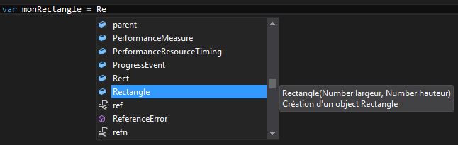
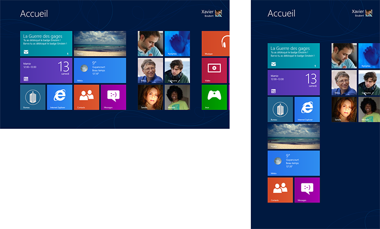
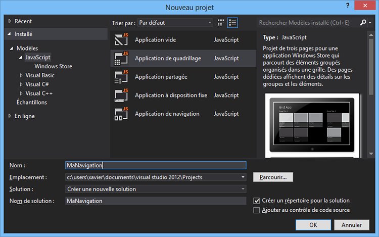
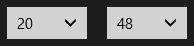
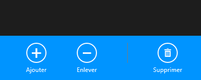
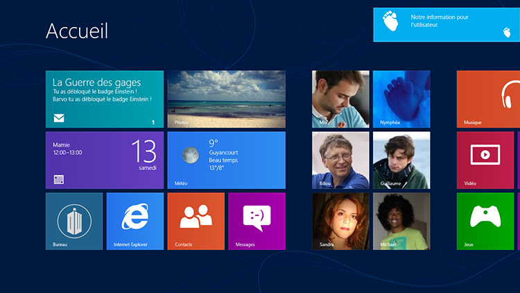

Créez des applications pour Windows 8 en HTML et JavaScript
Qui ne connaît pas ou n'a jamais utilisé Windows ?
Depuis 27 ans, Microsoft a sorti sept versions de son système d'exploitation principal et nous réserve cette année une nouvelle version pleine de nouveautés, dont la possibilité de développer les applications en HTML5 et JavaScript ! La grande entreprise espère ainsi toucher un vaste réseau de développeurs web et souhaite les retrouver sur son système pour créer un maximum d'applications.
Windows 8 dispose maintenant d'un nouveau type d'applications, basées sur les dernières tendances techniques et interfaces modernes. Il est désormais aussi facile de créer un site web que de développer une application sur Windows 8. Avec des règles très complètes et détaillées, des outils de développement comme Microsoft sait en faire depuis des dizaines d'années et ce big tuto sur votre écran, cela va devenir un jeu d'enfant de créer des applications.
Je pars du principe que vous connaissez déjà HTML5/CSS3 et JavaScript. Ce cours n'a pas la prétention de vous apprendre à utiliser ces langages, mais plutôt de vous les faire utiliser pour le développement d'applications pour Windows 8. Vous devriez connaître également la programmation orientée objet, même si ce n'est pas indispensable.
Vous êtes ici pour créer sur Windows 8 et c’est ce que nous allons étudier ! De la création complète d’une application à sa soumission sur le Windows Store, en passant par sa connexion à des services web et son internationalisation, vous saurez tout sur comment créer une application en HTML5 et JavaScript sur Windows 8.
Windows est le système d'exploitation principal de Microsoft. C'est un énorme programme installé sur un ordinateur, capable de lancer des applications dans des fenêtres. Ce système comporte également un noyau capable de supporter des applications développées par des développeurs tiers. Depuis des années, de nombreuses sociétés se sont donc construites en développant et vendant des applications au travers des nombreuses versions de Windows.
C'est en 1985 que Bill Gates, le fondateur de Microsoft et ancien président, sort la première version de Windows, la 1.0. Depuis la version 95 – sortie en 1995 – Microsoft nous a habitué à une interface qui n'a que très peu évolué. Avec son célèbre menu « démarrer », sa barre des tâches et son bureau, les utilisateurs se sont habitués depuis longtemps à cette utilisation. Même si le style s'est modernisé et mis au goût du jour avec le temps, l'ergonomie principale n'a jamais vraiment été bousculée. Afin de vous faire une idée, regardez la figure suivante.
À gauche, Windows 95, et à droite, Windows 7, sorti 14 ans plus tard
Une histoire d'utilisateurs
Windows est le système d'exploitation pour ordinateur le plus utilisé au monde, et ce depuis des années. Microsoft a su s'installer dans beaucoup de foyers et d'entreprises, et nous l'avons très certainement tous utilisé un jour ou l'autre. Taillé pour l'entreprise et le grand public, il est aussi facile d'y rédiger son CV que d'y faire sa comptabilité, jouer à un jeu ou faire de la retouche photo. Chaque utilisateur y trouve son compte grâce aux nombreuses applications qui existent.
Une histoire d'API
Le noyau de Windows contient ce qu'on appelle une API (« Application Programming Interface » ou « interface de programmation » en français). C'est une suite de fonctions, accessibles au travers du système, qui permettent d'interagir avec ce dernier. Il est alors possible d’accéder par exemple à l'heure, à la date, de générer des fenêtres, de lancer des connexions réseau, etc.
Jusqu'à Windows 7, l'API principale s'appelle la WinAPI. Elle est utilisée dans presque toutes les applications qui existent sur Windows et évolue au fil des versions. Malheureusement, avec le temps et même en y ajoutant de nouvelles fonctionnalités, sa prise en main est devenue de plus en plus compliquée. Par exemple, pour ajouter une icône dans la zone système (à coté de l'horloge dans la barre des tâches), cela peut prendre jusqu'à 50 lignes de code !
Depuis Windows XP, Microsoft a créé un framework appelé « Microsoft .NET ». Un framework contient un ensemble de fonctions et bibliothèques déjà programmées pour pouvoir les utiliser plus simplement et rapidement. C'est, en bref, une API plus moderne qui permet aux développeurs de passer moins de temps à réinventer la roue. Microsoft a donc essayé de propager son framework au travers des Windows suivants tout en le faisant évoluer jusqu'à la version 4. Mais de gros défauts sont remontés au fur et à mesure des versions, les deux principaux étant :
Il faut que les utilisateurs qui installent l'application aient obligatoirement la version exacte du framework utilisé. Soit plus de 200 Mo à installer en plus.
Comme le framework est codé par-dessus la WinAPI et l'utilise lui-même, il est plus lourd et moins rapide.
Une histoire de langages
Sur Windows, il est possible de développer des applications avec une foule de langages. Que ce soit C, C++, Visual Basic, Java…, Windows a toujours supporté un maximum de langages. Le principal but d'un système d'exploitation est justement d'exploiter un maximum de fonctionnalités, et donc de laisser aux développeurs la liberté de créer comme ils le souhaitent.
Avec l'arrivée du Microsoft .NET Framework, Windows s'est également doté d'un nouveau langage de programmation appelé le C# (prononcé « Si-charp »). Même si nous ne parlerons que très peu de ce langage, il faut savoir qu'il est le précurseur des techniques de développement que nous utiliserons au cours des prochains chapitres.
En effet, nous allons développer nos applications grâce à HTML5 et JavaScript. Et cela tombe bien, car le Site du Zéro propose ces cours :
Le 26 octobre 2012, le nouveau système d'exploitation de Microsoft, Windows 8, est sorti. Avec lui, une nouvelle ère se dessine pour Microsoft, car l'entreprise décide de faire un grand lifting en changeant de charte graphique et de logo.
Le nouveau logo de Microsoft
Avec l'arrivée des nouveaux matériels - smartphones, tablettes, ultraportables… - le type d'interface que proposait Windows depuis de nombreuses années ne remplissait plus totalement sa fonction. Difficile d'utiliser un clic droit ou un petit menu avec les doigts directement sur une surface tactile. Il fallait donc faire évoluer tout ce petit monde, ce qui entraînait forcément un changement d'habitudes et d'utilisations. Microsoft a donc pris le pari de lancer une nouvelle version de son système d'exploitation, Windows 8, avec une toute nouvelle interface, un tout nouveau concept, et pleins de nouvelles fonctionnalités.
Nouveau concept
Dans sa grande contrainte de devoir évoluer vers du neuf, Windows s'est vu doté d'une nouvelle interface, représentée à la figure suivante.
Écran de démarrage de Windows 8
Un nouveau type d'applications a vu le jour, spécialement conçu pour cette interface, et qui, de par sa nature, son style et son ergonomie, prend en compte les nouveaux matériels dont je vous parlais.
L'une des grandes forces des versions de Windows, c'est leur compatibilité descendante. Chaque Windows peut - en principe - faire fonctionner les logiciels des versions précédentes. Il fallait donc trouver un moyen de pouvoir utiliser les anciennes applications en sachant qu'elles n'avaient clairement pas leur place dans cette nouvelle interface. Microsoft a donc décidé de garder l'ancien bureau de Windows 7, avec toutes ses fonctionnalités ! Windows 8 dispose donc de deux interfaces, se référant à deux concepts bien distincts.
Le graphisme
Cette nouvelle interface de Windows 8 n'est pas très récente, car nous avons déjà pu la voir sur l'application de musique Zune (voir figure suivante). Nous l'avons ensuite retrouvée sur les Windows Phone 7, puis la Xbox.
Le logiciel Zune
Ce style, vous le connaissiez peut-être déjà sous l'appellation « Metro », abandonnée en août 2012 par Microsoft. Aujourd'hui, Microsoft utilise tout simplement « Windows 8 style ». Nous reviendrons avec beaucoup plus de détails sur ce style dans le chapitre suivant.
Le graphisme de la partie Windows 7 a également subi un lifting pour être plus proche des règles du nouveau style. Il y a eu l'ajout du ruban que l'on trouvait déjà dans quelques applications de la suite Office depuis la version 2007, comme l'explorateur de fichiers par exemple, visible à la figure suivante. Il permet d'utiliser tactilement des options comme le copier-coller grâce à de plus gros boutons et en évitant le clic droit.
Aperçu du ruban dans l'explorateur de fichiers
Le noyau
Pour cette nouvelle version, Microsoft a mis au point une toute nouvelle API pour pouvoir utiliser son noyau : Windows RunTime (ou WinRT pour les intimes). Pour ne pas répéter les mêmes erreurs, cette API a été placée bien plus au cœur du système et proche de son noyau. Elle garde en plus toutes les meilleures fonctionnalités du .NET en les améliorant. Elle n'est cependant accessible que par les langages suivants :
C++
C#
VB.Net
JavaScript
Et ça tombe bien parce que c'est en JavaScript que l'on va développer nos applications dans ce cours. Nous verrons plus tard ce qu'est vraiment la WinRT et comment elle fonctionne.
Les langages de programmation
Microsoft cherche à rassembler un maximum de développeurs de tous horizons et à se moderniser avec les derniers standards. C'est pourquoi il a été intégré au noyau de Windows 8 la possibilité de développer en HTML5 et JavaScript. Il est désormais aussi facile de créer une application qu'un site web ! Ça tombe bien car nous allons en profiter pour nous mettre à niveau dans ce big tuto.
Le cloud
On ne cesse d'en parler sur le web depuis ces dernières années, le cloud est partout.
Citation : Wikipédia
Le cloud est un concept qui consiste à déporter sur des serveurs distants des stockages et des traitements informatiques traditionnellement localisés sur des serveurs locaux ou sur le poste de l'utilisateur.
En bref, le cloud vous permet de stocker des informations directement en ligne. C'est le cas de tous les services en ligne, comme SkyDrive, Google Drive ou Dropbox, qui stockent vos fichiers en ligne. C'est également le cas d'Office 365 ou de Google Docs, qui vous permettent de créer des documents textes ou tableurs sur des sites web. Microsoft ne l'a malheureusement jamais vraiment intégré jusqu'à maintenant sur ses systèmes et c'est ce que va corriger Windows 8. Tout d'abord, vous pouvez vous connecter avec votre compte Live ID sur n'importe quelle machine disposant de Windows 8. En paramétrant votre compte, il sera automatiquement synchronisé sur les serveurs de Microsoft et pourra donc enregistrer :
Votre photo de profil ;
Votre fond d'écran ;
Chacun de vos comptes de réseau social comme Facebook ou Twitter ;
La disposition de vos applications sur l'écran de démarrage ;
Vos fichiers stockés sur SkyDrive (l'application de partage de fichiers) ;
Et pas mal d'autres paramètres.
En bref, à votre connexion sur un ordinateur, vous retrouverez votre environnement, vos fichiers et vos petites habitudes. Notez bien que, de toute manière, il est obligatoire d'utiliser un Live ID pour installer des applications qui proviennent du Windows Store ou d'y ajouter celles d'un développeur.
Le Windows Store
Jusqu'à maintenant, trouver une application pour Windows demandait forcément une recherche. Que ce soit sur le web ou ailleurs, le seul moyen d'avoir une application opérationnelle sur son ordinateur était :
De récupérer son système d'installation (CD, clé USB, téléchargement sur internet…) ;
De l'installer, avec plus ou moins d'options compliquées pour les utilisateurs novices.
Avec l'arrivée des systèmes de centralisation d'applications - comme l'a fait Apple avec son Apple Store - Microsoft a voulu reprendre le concept et a donc lancé son « Windows Store ». Chaque développeur peut donc ajouter son application au Store et ainsi la voir mise à disposition sur les ordinateurs ou appareils mobiles des utilisateurs du monde entier. En cliquant simplement sur un bouton, le Store se chargera ensuite de télécharger l'application sur l'ordinateur, de l'installer, et d'y ajouter une tuile sur la page de démarrage.
Écran de démarrage de Windows 8
Fatigué(e) de lire sur un écran ? Découvrez ce cours en livre.
Depuis 2010, Microsoft commercialise un nouveau type de smartphone, les Windows Phone. Avec ces appareils, basés sur les dernières nouveautés en terme de fonctionnalités et de design, Microsoft a fait son premier grand pas vers son système final Windows 8. La nouvelle version Windows Phone 8 devient beaucoup plus proche du système Windows 8, car elle utilise également la WinRT.
Même si ce tuto n'est pas axé sur Windows Phone 8, je vous donne ici les grandes lignes pour pouvoir faire la différence entre ces deux systèmes, et surtout voir en quoi ils sont liés. Cela reste dans la continuité de Windows 8 et montre bien ce que souhaite faire Microsoft avec ses nouveaux joujoux. La figure suivante vous montre à quoi ressemble un écran d'accueil sur Windows Phone 8.
Écrans d'accueil de Windows Phone 8
Les liens et différences entre les deux systèmes
Windows 8 utilise le noyau WinRT (que l'on verra plus tard) tandis que Windows Phone 8 le noyau WinPRT. Pour le moment sur Windows Phone 8 il n'est pas possible de créer une application en JavaScript. Il existe tout de même des solutions pour ne pas ré-écrire tout le code d'une application Windows 8 vers Windows Phone 8. La logique reste fondamentalement la même, ainsi que les règles d'interfaces. À la suite de vos développements pour créer des applications Windows 8, vous pourrez donc adapter vos projets pour les smartphones. Il existe même des libraires et frameworks qui peuvent vous y aider. Ce cas ne sera pas traité outre mesure dans ce cours, aussi je vous invite à le découvrir par vous-mêmes.
En plus de ça, comme vous pouvez utiliser Windows 8 avec votre Live ID, vous pourrez synchroniser tous vos appareils, que ce soit pour les configurations grâce au cloud de Microsoft ou pour des fichiers avec Skydrive. Windows Phone 8 étant un système d'exploitation pour mobiles, avec de petits écrans, il n'était pas intéressant d'ajouter toute la partie Windows 7. Windows Phone 8 ne dispose donc pas de bureau. Vous pourrez également trouver des applications qui ne seront que dans le Windows Store de Windows 8 et d'autres que dans celui de Windows Phone 8. Les développeurs ont le choix de ne développer leurs applications que pour l'une ou l'autre des plateformes.
Le système d'exploitation Windows possède une API principale pour y coder des application et depuis Windows XP un framework plus récent appelé .NET.
Windows 8 arrive avec un nouveau concept utilisant une nouvelle interface totalement différente des précédentes versions.
Le noyau des applications Windows ne supporte que 4 langages de programmation : C++, C#, VB.Net et JavaScript.
Windows 8 possède un Windows Store qui permet d'installer des applications.
Windows Phone 8 est le système d'exploitation qui ressemble à Windows 8 mais pour smartphones.
Fatigué(e) de lire sur un écran ? Découvrez ce cours en livre.
Maintenant que nous avons découvert dans les grandes lignes cette nouvelle version de Windows, nous allons nous pencher plus en détail sur les points importants qui vont nous permettre de comprendre ce que ces nouveautés entraînent pour notre développement.
Nous l'avons vu précédemment, pour pouvoir continuer de faire fonctionner ses anciennes applications, Windows 8 est partagé en deux interfaces. C'est la partie qui fait couler beaucoup d'encre depuis les premières versions bêta du système. Certains sont d'accord avec cette vision, d'autres pas. Chacune des interfaces est définie pour une utilisation propre, que l'utilisateur suivra d'instinct. Vous n'allez donc pas développer une application pour Windows 8 comme vous la développeriez sur les précédents Windows. Tout a changé, et nous allons voir de quoi il retourne.
L'interface Entreprise ou Windows 7
Même si cette partie n'est pas la plus intéressante pour nous qui développons pour la partie Windows 8, elle est quand même utile pour la compréhension globale du système.
Microsoft a gardé ici l'ancienne interface, sur le bureau, pour que les utilisateurs puissent continuer d'utiliser leurs applications habituelles. Mais pas que ! On appelle cette interface Entreprise parce qu'elle va continuer de supporter les plus grosses applications lourdes pour entreprises. Par exemple, vous l'utiliserez pour pouvoir travailler avec des outils de développement d'applications, qui nécessitent beaucoup de fonctionnalités, de compilateurs, de pouvoir gérer des fichiers système, etc. Ou par exemple pour rédiger votre CV avec Word ou gérer vos finances personnelles avec Excel. Pour ces applications, l'utilisation d'un clavier physique est presque obligatoire pour une bonne visibilité de l'écran.
Nous utiliserons cette interface pour installer notre environnement de développement et créer nos applications Windows 8. Elle nous sera très utile pour travailler, tandis que l'autre interface nous sera très utile pour tester.
Pas pratique d'utiliser le clavier virtuel sur un éditeur de texte lorsqu'il prend la moitié de l'écran !
L'interface Personnelle ou Windows 8
L'intérêt principal de développer une nouvelle interface est de répondre aux nouveaux besoins des utilisateurs. Entre les écrans tactiles, les sites web qui se passent de clics droits et qui s'affichent quelles que soient la taille ou l'orientation des écrans, les utilisateurs ont de nouvelles habitudes, plus rapides et efficaces. Comment utiliser un ancien système Windows tactilement, par exemple ? Icônes trop petites, utilisation de menus dans des clics droits, utilisation du clavier trop fréquente, applications qui ne gèrent pas le tactile, et j'en passe. Nous avons donc maintenant un système Windows paré pour cette utilisation. Paré pour le tactile, paré pour des applications proches de services web, paré pour le renouveau.
Cette interface a donc été développée pour le tactile et plus spécifiquement pour des tablettes (voir figure suivante). Elle a été dotée de nombreux mouvements appelés « gestures » par Microsoft pour que les utilisateurs puissent faire beaucoup d'actions avec une seule main. Nous y reviendrons un peu plus tard dans ce cours.
Aperçu de l'interface Personnelle de Windows 8
L'impact sur les applications Windows 8
C'est là tout notre sujet. Les nouvelles applications développées pour Windows 8 ont quelques particularités qu'il faut connaître avant tout.
Une application Windows 8 est parquée dans un espace clos. C'est-à-dire qu'elle ne peut atteindre le système et qu'elle ne peut dialoguer avec d'autres applications. Le terme anglais utilisé dans les documentations de Microsoft est « sandbox », qui se traduit dans notre langue par « bac à sable ». Ce procédé est utilisé en premier lieu pour sécuriser le système en cas d'application malveillante, mais également pour éviter des crashes de système, si l'application plante par exemple.
Une application Windows 8 n'est installable que via le Windows Store. Vous ne pourrez donc télécharger aucune application sur un site web ou ailleurs. Et vous ne pourrez donc partager ou vendre les applications que vous développerez que par ce point de centralisation. Le Store a également toute une section rien que pour lui dans ce chapitre, nous y reviendrons donc rapidement avec plus de détails.
Fatigué(e) de lire sur un écran ? Découvrez ce cours en livre.
Le nouveau design de Windows 8 est tiré d'un style graphique mûrement réfléchi et travaillé par Microsoft ces dernières années. Un énorme travail a été fait pour revoir dès la base l’ergonomie, la rapidité et la fluidité de ce qu'on appelle l'UI du système.
De grandes règles ont donc été définies pour les développeurs du système, mais également pour les développeurs qui soumettent leurs applications sur le Windows Store. C'est-à-dire nous.
Le contenu au centre du design
Jusqu'à maintenant, les systèmes d'exploitation se basaient sur des éléments de la vraie vie pour faire comprendre aux utilisateurs comment utiliser un ordinateur. Le principe du bureau ou des dossiers pour classer ses fichiers, par exemple, permet à l'utilisateur de comprendre comment interagir avec la machine en gardant ses habitudes. Toutes les parties graphiques des anciens systèmes ont donc été conçues dans ce sens, avec notamment des ombres, des effets de transparence et des reflets sur les fenêtres pour une meilleure immersion.
Mais est-ce toujours aussi utile ? À notre époque, où les enfants naissent avec une tablette entre les mains, où les écoles remplacent leurs tableaux blancs par des écrans tactiles et où deux français sur trois ont un ordinateur chez eux, faut-il encore expliquer comment marche un répertoire ou un fichier ? C'est la question que s'est posée Microsoft en développant Windows 8 et ils ont trouvé leur réponse : « non ».
Et c'est ce qui est devenu le principe du style de cette nouvelle version. Suppression totale des effets non nécessaires : plus d'ombres, de reflets, de transparences, de textures, etc. Ce qui doit ressortir d'une UI est son contenu. C'est le contenu que l'utilisateur est venu chercher dans une application et c'est maintenant ce qui doit lui sauter aux yeux. Les mots d'ordre du style sont « fast & fluid » (« rapide et fluide »).
Et quoi de plus rapide qu'une machine qui n'a que peu d'éléments graphiques à calculer sur une interface ? Quoi de plus rapide qu'un utilisateur qui voit directement le contenu qu'il est venu chercher, sans devoir passer par des foules de menus, boutons et fenêtres en tout genre ? C'est ce que propose ce style et il nous vient avec un petit plus qui ajoute la fluidité sur l'interface et la navigation : les animations. Des tonnes de petites animations, très simples et très discrètes, mais qui ajoutent une grande fluidité dans les interactions des utilisateurs. Ces derniers suivent instinctivement ces animations pour utiliser l'interface sans se poser de question.
Les icônes
Les icônes servent à indiquer, en un coup d'œil, une action ou une information. Lorsqu'une icône est incomprise, c'est toute l'information qui devient incomprise. C'est pourquoi, dans ce style, les icônes doivent être le plus simple possible. Clarté et simplicité sont de rigueur, et les icônes ne font pas bande à part. Ce sont donc des icônes composées d'une seule couleur (monochromes), sans fond, sans relief, sans bordure, sans reflet et sans ombre, comme le montre la figure suivante. Ce sont les mêmes genres d'icônes que vous rencontrez sur les panneaux de signalisation, dans les métros ou les gares.
Aperçu des icônes monochromes du menu « démarrer » de Windows 8
Les alignements
Les alignements sont la structure même d'un affichage de contenu. Microsoft a rédigé des règles très précises pour avoir un alignement identique sur chaque application. Les utilisateurs gardent ainsi la même expérience partout. Un système de grille créé pour ce style nous permet d'aligner nos éléments le plus simplement du monde.
Nous verrons comment ce style fonctionne concrètement dans le chapitre « Les règles de l'UI » de la deuxième partie de ce cours. Nous verrons les règles très complètes que Microsoft a écrites pour nous aider à développer nos applications.
Fatigué(e) de lire sur un écran ? Découvrez ce cours en livre.
Le Windows Store est une des grandes nouveautés de Windows 8. C'est lui qui permet de centraliser toutes les applications pour le système sans qu'il faille aller les chercher à droite et à gauche sur internet ou ailleurs (voir figure suivante).
Le Windows Store centralise les applications pour tous les utilisateurs
Microsoft oblige les développeurs à soumettre leurs applications sur le Store pour pouvoir ensuite les distribuer dans le monde. Nous ne pouvons donc pas distribuer nos applications sans passer par leur validation. Même si ça peut en contrarier plus d'un, ce système a ses avantages car il permet :
De centraliser les applications, toutes au même endroit.
De découvrir de nouvelles applications.
De filtrer les applications qui contiendraient des virus et autres contenus malveillants.
D’être sûrs que les applications respectent une homogénéité dans leurs interfaces.
D'avoir un système de vente d'applications unique pour l’utilisateur, qui n'aura pas à donner sa carte bancaire à d'autres endroits.
Si vous souhaitez vendre vos applications, vous n'aurez donc pas à mettre en place la moindre structure marchande. Une simple case à cocher avec le montant de l'application suffira pour la mettre en vente sur tous les ordinateurs des utilisateurs de Windows 8. Cela permet également à Microsoft de générer du profit. Chaque développeur qui met en vente son application donne à Microsoft 30% des recettes nettes engendrées.
Recherche d'applications
Un utilisateur de Windows 8 peut rechercher une application sur le Store comme il chercherait un fichier sur son système. L'idée est celle-ci : « J'ai besoin d'une fonctionnalité ? Je la recherche et l'ajoute à mon système. » En imposant aux développeurs d'avoir les mêmes structures d'interface sur leurs applications, Microsoft arrive à fondre les applications au sein du système de manière presque transparente. Du coup, pour l'utilisateur, c'est presque comme une extension de son ordinateur ou de sa tablette.
De ce fait, la recherche devient très simple. Le Windows Store étant composé de catégories d'applications, l'utilisateur peut découvrir de nouvelles applications, soit en naviguant dans les catégories, soit en tapant directement une recherche, comme le montre la figure suivante.
Aperçu d'une recherche sur le Windows Store
Mettre son application sur le Store
Lorsqu'un développeur termine le développement de son application gratuite, il doit la soumettre sur le Windows Store pour la voir diffusée chez des utilisateurs. Il y a beaucoup de paramètres à renseigner, des images à faire, des logos, des captures d'écrans… C'est ensuite à Microsoft de vérifier et valider l'application. Cela se fait en plusieurs étapes qui correspondent aux tests que fait Microsoft. Si une application ne remplit pas ces règles, elle est rejetée avec un compte-rendu expliquant les motifs concrets du rejet. À l'inverse, si elle passe la validation, elle devient disponible dans les 48h dans tous les pays renseignés en paramètre.
Pour les applications payantes, la procédure est plus compliquée. En plus de devoir faire valider son application, le développeur doit remplir quelques procédures administratives pour avoir la chance de percevoir son dû. Comme ces procédures prennent du temps, il est généralement conseillé de les faire assez tôt dans le développement d'une application pour ne pas être freiné plus tard.
Installation d'une application
L'installation d'une application sur les anciens Windows n'a jamais été simple. Avec le Store, un simple clic sur le bouton installer et le tour est joué ! Le Store se charge de télécharger les fichiers, d'installer l'application et ajoute son icône sur la page de démarrage.
En cas d'applications payantes, vous pourrez les acheter très simplement en cliquant sur le bouton Acheter :
Si vous n'avez pas encore enregistré votre carte bancaire chez Microsoft, vous serez invité à le faire.
Si vous avez une carte bancaire enregistrée, un simple mot de passe vous sera alors demandé pour valider la commande et voir ainsi l'installation commencer.
Autorisations
Lorsque vous êtes sur la page des détails d'une application, vous pouvez voir en bas à gauche les autorisations que l'utilisateur donnera automatiquement à l'application en l'installant, comme le montre la figure suivante. En fait, lorsqu'un développeur ajoute certaines fonctionnalités à son application, ou qu'il a besoin d'informations personnelles, il doit définir des autorisations que l'utilisateur devra valider pour utiliser cette application. C'est l'un des gros avantages pour les utilisateurs, d'avoir de la transparence sur ce que les applications sont capables de faire.
Aperçu des autorisations nécessaires à l'application Cartes
Mise à jour d'une application
Le Windows Store se charge également de gérer les mises à jour des applications. Lorsque vous avez des mises à jour pour certaines applications disponibles, l'icône Windows Store de votre écran de démarrage se dote d'un chiffre qui apparaît sous le logo. Ce chiffre détermine le nombre de mises à jour à installer. Lorsque vous lancez ensuite le Store, vous pouvez voir en haut à droite un lien qui vous mènera aux applications à mettre à jour.
Comme nous le verrons dans un chapitre dédié à la soumission de nos applications, c'est le développeur qui détermine quand mettre à jour son application. Il peut gérer les numéros de versions ainsi qu'une liste de changements apportés à la dernière mise à jour. Pour chaque mise à jour d'une application, il faut que le développeur soumette de nouveau son application, pour qu'elle repasse les validations de Microsoft.
Windows 8 arrive avec deux interfaces, une contenant l'ancien bureau habituel, et l'autre avec un style totalement nouveau.
Une application Windows 8 est faite pour la nouvelle interface.
Le Store dispose de toutes les fonctionnalités pour trouver, installer et mettre à jour ses applications.
Fatigué(e) de lire sur un écran ? Découvrez ce cours en livre.
On a vu ce qu'était Windows 8, ses nouveautés, son Store, son concept et son style. Un sacré morceau ! Nous allons pouvoir mettre en place notre environnement de développement et créer un premier projet de test pour voir comment tout cela fonctionne.
Nous verrons également comment déboguer et tester nos applications. Une fois notre environnement bien pris en main, il ne nous restera plus qu'à tester un peu de code en le documentant pour nous y retrouver plus facilement.
Dans le développement web, on s'habitue à travailler avec beaucoup d'outils différents. Comptez juste le nombre de navigateurs de test, que l'on considère toutes les plateformes et vous en aurez le tournis. En plus de cela, il semblerait que chaque développeur ait son environnement à lui, avec son éditeur de code et ses habitudes.
Sur Windows 8, oubliez tout cela. Nous allons travailler avec un seul outil, développé et fourni gratuitement par Microsoft. Cet environnement de développement intégré, ou plus communément appelé IDE pour Integrated Development Environment, est à la base payant mais dispose d'une version spéciale gratuite pour le développement d'applications sur Windows 8. Son nom, le très célèbre Visual Studio, dont vous pouvez voir le logo à la figure suivante.
Logo de Visual Studio
Visual Studio 12
Visual Studio est un environnement de développement (IDE) propriétaire et payant comprenant une foule d'outils tous assemblés les uns aux autres dans une même interface. Il permet de développer des projets avec plusieurs langages différents. La première version remonte à plus de 15 ans (1997) et incluait déjà quelques langages comme le Visual Basic, le Visual C++, le Visual J++, le Visual FoxPro 5.0 et le Visual InterDev. Ces langages ne vous disent sûrement rien aujourd'hui, car Microsoft en a ajoutés et supprimés dans son évolution au fil du temps.
Visual Studio ne permet de développer que sur Windows et que pour les plateformes Microsoft. Vous pourrez ainsi coder facilement pour Windows 8 et versions antérieures, les Windows Server ou bien les Windows Phone, mais bien moins facilement pour Linux ou Mac. Il existe cependant des extensions qui pallient ce problème, même si ce n'est pas notre sujet.
La nouvelle version 2012 permet quant à elle de développer sur le nouveau noyau Windows RT de Windows 8. Aucune des précédentes versions n'en est capable, et je ne vous conseille donc pas de les utiliser, même si vous en avez une version. La version 2012 dispose en plus d'un outil spécialisé pour l'UI qui s'appelle Blend. C'est un logiciel de création d'UI très performant et bien évidemment lié aux interfaces Windows. Nous l'utiliserons pour styliser nos contrôles, pour enrichir nos vues et pour créer de belles animations.
Aujourd'hui il existe des versions dites Express de Visual Studio spécifiques aux langages. Ces versions sont gratuites et disposent de moins de fonctionnalités, il n'y a par exemple pas d'outils de travail en équipe. Nous allons utiliser la version Visual Studio Express 2012 pour Windows 8, qui nous convient totalement pour ce que nous devons faire.
Télécharger les outils
Comme Microsoft fait bien les choses, nous allons pouvoir télécharger une version française de Visual Studio 2012. Malheureusement, il est difficile de donner un lien direct pour la télécharger, car il arrive que Microsoft change ses liens de téléchargement. Je vais donc vous expliquer la procédure pour récupérer le programme d'installation.
Rendez-vous sur le site de téléchargement de Visual Studio Express 2012. Descendez le long de la page jusqu'à tomber sur Visual Studio Express 2012 pour Windows 8. Cliquez ensuite sur le lien Télécharger la version de Visual Studio Express 2012 pour Windows 8 FR. Vous devriez obtenir la figure suivante.
Téléchargement de Visual Studio 2012 Express pour Windows 8
Installer Visual Studio
En principe, comme vous êtes sur Windows 8, vous pouvez directement ouvrir le fichier ISO que vous venez de télécharger. Lancez ensuite le programme win8express_full.exe. L'installation se lance automatiquement et vous demande de choisir l'endroit où vous souhaitez installer Visual Studio. Comparé à des langages comme le C++ ou le C qui demandent des longs temps de compilation, les applications en HTML5/JavaScript se compilent presque instantanément. Vous n'avez donc pas à choisir votre emplacement par rapport à ce facteur. Cochez ensuite la case J'accepte les conditions d'utilisation de la licence pour faire apparaître l'énorme bouton d'installation. Cliquez sur Installer. Il ne vous reste plus qu'à attendre que Visual Studio se télécharge et s'installe sur votre machine.
Une fois notre IDE installé, nous allons pouvoir le lancer grâce à l'énorme bouton que le programme d'installation met à notre disposition à la fin de sa procédure.
Premier lancement
Au premier lancement de Visual Studio 2012, le logiciel vous demande une clé de produit. Pas de panique, il vous suffit de vous inscrire en ligne pour en récupérer une gratuite. Cliquez sur le lien S'inscrire en ligne à droite du champ de texte de la clé, comme le montre la figure suivante.
Il faut s'inscrire en ligne pour activer le logiciel
Microsoft vous demande alors un Live ID. Si vous utilisez le Windows Store, c'est que vous en disposez ; connectez-vous avec le même. Remplissez le long formulaire qui s'affiche ensuite, puis cliquez sur Suivant (attention aux nombreux champs obligatoires). Une clé vous est alors automatiquement attribuée et vous n'avez plus qu'à la copier dans Visual Studio. En cliquant sur Suivant, la clé est appliquée. Vous pouvez fermer la fenêtre pour laisser Visual Studio s'ouvrir.
Maintenant que notre IDE est ouvert, il vous demande d'obtenir une licence de développeur. À l'inverse de celle permettant de soumettre votre application sur le Windows Store, celle-ci est gratuite et limitée à l'utilisation de cette unique machine. Vous en avez donc besoin pour déployer et tester vos développements.
Cliquez sur J'accepte pour voir s'ouvrir une fenêtre de connexion. Renseignez une nouvelle fois votre compte Live ID. Une licence vous est alors attribuée pour une durée d'un mois, comme le montre la figure suivante. Mais vous pourrez la renouveler.
La licence est renouvelable au bout d'un mois
En prime, une petite astuce de développeur
Les projets que vous développerez sur Visual Studio se situent tous dans un répertoire sur votre disque dur. Ce répertoire n'est malheureusement pas accessible en un clic, aussi je vous propose de l'ajouter dans une nouvelle bibliothèque de votre explorateur de fichiers.
Pour ce faire, localisez l'endroit où sont stockés vos projets, c'est-à-dire dans « Documents\Visual Studio 2012\Projects ». Pour le moment, ce répertoire est vide, et c'est normal.
Dans l’arborescence gauche de votre explorateur de fichiers, faites un clic droit sur Bibliothèques.
Cliquez sur Nouveau puis Bibliothèque.
Renseignez ensuite le nom de votre nouvelle bibliothèque, comme Projets par exemple.
En cliquant sur cette nouvelle bibliothèque, on vous propose un bouton Inclure un dossier. Cliquez dessus, puis sélectionnez le répertoire de vos projets.
Vous pourrez maintenant accéder plus facilement à vos projets développés pour Windows 8.
Vous voilà avec un Visual Studio prêt pour vos développements. Je ne sais pas vous, mais j'ai hâte de commencer à taper du code !
Fatigué(e) de lire sur un écran ? Découvrez ce cours en livre.
Nous avons notre IDE de prêt, il est lancé, notre compte de développeur nous permet de créer et tester une application sur notre machine. Alors allons-y, démarrons notre premier projet !
Nouveau projet
Une fois Visual Studio lancé, il présente une page de démarrage classique avec quelques liens d'aide et des ressources d'apprentissage (voir figure suivante). Comme vous avez ce cours entre les mains, vous ne devriez pas en avoir besoin tout de suite. :p
Aperçu de la page de démarrage de Visual Studio 2012
Pour créer notre projet, cliquez sur Nouveau projet… dans la colonne de gauche, sous Démarrer. Une fenêtre d'aide à la création d'un projet s'ouvre et vous permet de choisir votre langage et quelques paramètres, comme à la figure suivante.
Fenêtre d'aide à la création d'un nouveau projet
Nous allons choisir dans la colonne de gauche la catégorie des Modèles, puis le langage qui nous concerne : JavaScript. Dans la colonne du milieu, nous avons le choix entre plusieurs modèles. Application de quadrillage sera celui que l'on utilisera le plus grâce à son architecture. Vous verrez dans la prochaine partie du cours de quoi il retourne. Pour le moment nous allons choisir le modèle Application vide pour plus de simplicité. En bas de la fenêtre, renseignons également le nom que portera l'application : « Hello World ».
Cliquez sur OK pour lancer la création de ce nouveau projet.
L'interface de Visual Studio 2012
L'explorateur de solutions
Dans la partie droite de votre interface se trouve l'Explorateur de solutions, représenté à la figure suivante. C'est une arborescence de fichiers et répertoires contenus dans votre projet. En double-cliquant dessus, vous pouvez ouvrir les fichiers directement dans l'éditeur de code qui se trouve sur la gauche. Par défaut pour notre projet, nous retrouvons une architecture de fichiers très propre au développement web. Un répertoire CSS pour les feuilles de style, un répertoire pour les images, un autre pour les fichiers JavaScript et une page HTML. Il y a quelques autres fichiers que nous détaillerons dans la suite du cours.
L'éditeur de code
La figure suivante vous est forcément familière si vous avez déjà développé en HTML/JavaScript. Elle représente l'éditeur de code de Visual Studio. Elle contient les différentes pages de code ouvertes sous forme d'onglets. Comme tout bon éditeur, il possède sa coloration syntaxique des langages, la possibilité de fermer des parties de code et bien sûr la vision des erreurs de code. Il existe tout un tas d'autres fonctionnalités comme l'Intellisense que l'on retrouvera dans la prochaine section.
L'éditeur de code
Les propriétés
Les propriétés ne peuvent être appliquées qu'à certains éléments de certains fichiers. Si vous ouvrez le fichier default.html par exemple, vous aurez les mêmes propriétés qu'à la figure suivante. Vous avez donc la possibilité de modifier les propriétés de la page directement dans cette vue plutôt que de le faire dans le code. L'avantage tient au fait que les champs contenus dans cette vue aident à se remplir par des valeurs déjà existantes dans les autres fichiers. Comme avec des classes CSS déjà définies dans des feuilles de style par exemple.
Les propriétés
Un peu de code
Comme nous avons ouvert le fichier default.html, nous allons y insérer un peu de code pour rendre un peu plus fun notre « Hello World ». Supprimez tout ce qu'il y a entre les balises <body></body>, puis ajoutez ce petit bout de code :
<div class="bulle">
<div class="fleche"></div>
Hello World !
</div>
Maintenant, ouvrez votre feuille de style principale dans l'explorateur de solutions (CSS\default.css), puis ajoutez le code suivant :
Maintenant, exécutons notre code. Pour ce faire, vous avez deux solutions. Soit vous cliquez sur la flèche verte Ordinateur local en haut sous le menu principal (voir figure suivante), soit vous appuyez sur F5.
Cliquez sur la flèche verte pour exécuter le code
Les paramètres d’exécution de votre application sont par défaut renseignés de cette manière :
« Ordinateur local » définit l'endroit où va être déployé l'application. Tant que nous sommes sur Windows 8, il n'y a pas de raison de changer ce paramètre.
« Debug » est le mode de compilation de votre application. Pour le moment, comme nous souhaitons la tester et suivre ce qu'elle fait, nous la gardons en mode Debug. Mais le jour où nous voudrons la distribuer sur le Windows Store, nous changerons ce mode par « Release » pour avoir une version finale.
« Any CPU » vous permet de tester l'application sur divers processeurs. Comme Microsoft propage plusieurs architectures de tablettes, certaines contiennent des processeurs ARM. Il sera bon de pouvoir tester vos applications sur ce processeur dans l'avenir pour être sûrs de pouvoir les distribuer à un maximum d'utilisateurs.
Une fois l’exécution lancée, elle va compiler votre application puis la déployer sur votre machine, comme si c'était une application venant du Windows Store. Elle ajoutera même une icône sur l'écran de démarrage de Windows 8.
Si tout s'est bien passé, vous devriez voir la figure suivante apparaître en plein écran.
Notre première page « Hello World »
L'interface du débogage
Notre application est en train de tourner. Elle est en plein écran et rien ne la force à quitter. C'est très bien, c'est l'état qu'il nous faut pour aller la déboguer. Sans la quitter, revenez sur Visual Studio. Vous remarquez que l'interface a quelque peu changé. Elle est passée en mode Exécution.
Vous avez maintenant deux nouveaux panneaux intéressants.
L'explorateur DOM
Cet explorateur vous permet de visualiser en temps réel votre code HTML. S'il est modifié par le JavaScript, vous le verrez modifié ici aussi. Il vous est ainsi possible de suivre les modifications du HTML et des styles CSS. En plus de pouvoir visionner ces informations, vous pouvez vous-mêmes éditer les styles et balises en cliquant dessus. Pour sélectionner un élément directement dans votre application, cliquez sur Sélectionner un élément tout en haut du panneau (voir figure suivante), puis cliquez n'importe où dans votre application. N'hésitez pas à tester directement votre code CSS, pour des dispositions par exemple. Vous pourrez ainsi affiner votre code en temps réel.
L'explorateur DOM
La console JavaScript
Cette console, visible à la figure suivante, vous permet de voir les erreurs ou les avertissements du code JavaScript lorsqu'il y a des problèmes, mais également de voir des messages importants sur la navigation ou les interactions utilisateur. Vous avez également la possibilité de pouvoir exécuter directement du code JavaScript dans le champ textuel du bas. Vous pourrez donc exécuter des fonctions et tester des pans de code sans devoir ajouter des boutons à tout va.
La console JavaScript
Arrêter l'application
Vous pouvez fermer votre application comme n'importe quelle autre application Windows 8. En maintenant enfoncé le doigt sur le haut de l'application puis en la glissant tout en bas de l'écran, elle se fermera toute seule. Vous avez également la possibilité de cliquer sur le petit carré rouge à côté de la barre de compilation dans Visual Studio. Cela mettra fin au programme sans déclencher d'erreur.
Déboguer avec les points d’arrêt
Pour déboguer complètement votre code JavaScript, il vous faut pouvoir trouver les bouts de code qui génèrent des erreurs. Il vous faut également pouvoir tester, étape par étape, ligne de code par ligne de code, le déroulement de votre application. Pour cela, vous avez les points d’arrêt, ou break points, comme à la figure suivante.
Aperçu d'un point d’arrêt, en rouge
Un point d’arrêt va arrêter votre code à la ligne voulue lors de l’exécution de votre application. Pour en ajouter un, positionnez votre curseur sur une ligne, puis appuyez sur la touche F9 de votre clavier. Cela marquera la ligne sur un fond rouge et ajoutera une puce sur sa gauche. Lorsque vous démarrez ensuite l'application, Visual Studio reviendra au premier plan avec la ligne dont le code est arrêté en surbrillance. Pour continuer de déboguer et tester le code ligne par ligne, appuyez sur F10. Vous passerez alors à la ligne suivante.
Un panneau Pile des appels en dessous du code vous affiche également l'ordre des fonctions qui ont conduit au code arrêté. Vous pouvez ainsi double-cliquer sur ces lignes pour voir les précédents appels avec quelques détails.
Pour que l'application reprenne le cours de son exécution, appuyez sur F5, comme pour la démarrer.
Vous pouvez maintenant jongler entre votre application et Visual Studio pour tester et déboguer votre code en toute tranquillité.
Fatigué(e) de lire sur un écran ? Découvrez ce cours en livre.
Le but d'avoir un IDE sous la main est quand même de pouvoir visualiser tous les éléments d'un projet au même endroit. L'IDE nous permet d'être plus rapides, notamment grâce au fait qu'il sache ce que contient chaque fichier. Il peut donc nous permettre de gagner un temps fou en nous aidant à écrire le code à notre place.
IntelliSense
IntelliSense est une fonctionnalité qui existe depuis un moment dans les versions de Visual Studio. Il aide les développeurs à écrire du code plus vite en évitant les erreurs de frappe. Son principe est le suivant : lorsque vous écrivez du code au fil des fichiers, IntelliSense mémorise les objets, les fonctions, les classes, les propriétés, etc. Il se charge ensuite, de manière intelligente, de vous aider à retrouver les bons objets lorsque vous tapez des caractères en affichant un petit menu rapide. En plus de votre code, il mémorise également toutes les références que vous utilisez au sein de votre projet, ainsi que bien évidemment les structures du langage utilisé. Une auto-complétion intelligente en quelque sorte.
Un exemple simple : vous souhaitez ajouter une fonction toute bête. Écrivez simplement les lettres « fun » pour voir IntelliSense apparaître, comme à la figure suivante.
IntelliSense en action
Il sélectionne pour vous le mot « function ». La petite icône avec un ciseau signifie que c'est un bout de code que vous allez pouvoir ajouter. Pour insérer directement ce bout de code et donc gagner du temps, appuyez une première fois sur la touche Tabulation pour voir le mot s'écrire tout seul. Un second appui sur la touche Tabulation et hop ! une fonction est générée automatiquement. Il vous sélectionne en prime le nom de la fonction à donner, que vous n'avez plus qu'à remplir. Vous avez donc une fonction toute prête en cinq touches de clavier. Vous pouvez ainsi vous faire aider tout au long de la rédaction de votre code.
La documentation au sein du code
La documentation est quelque chose de très important pour les développeurs. La principale raison est le travail en équipe, pour que les autres développeurs comprennent ce que le code est censé faire. Grâce à IntelliSense, vous allez pouvoir utiliser des fonctions, des classes et autres objets sans être obligé de venir relire leur documentation directement dans leurs fichiers.
Le principe est d'ajouter dans des commentaires des balises XML spécialement conçues pour être lues par IntelliSense. Lorsque vous aurez ensuite à utiliser un objet, une fonction ou bien même une variable, vous aurez automatiquement sa documentation affichée dans le menu d'IntelliSense. Vous pouvez en voir un exemple à la figure avec une fonction Rectangle que j'ai créée et documentée.
IntelliSense propose une documentation
Vous voyez ici que l'on a quelques informations très intéressantes. On sait qu'il y a deux paramètres, que ce sont des nombres, et on a une description de la fonction.
Nous allons voir maintenant ces fameuses balises et décrire leur fonctionnement.
La balise var
La balise var est utilisable au-dessus d'une déclaration de variable. Elle permet d'en définir la description ainsi que le type (optionnel).
/// <var type="Number">uneVariable est une variable de démonstration</var>
var uneVariable = 15;
En ajoutant ce commentaire au-dessus d'une variable, vous pouvez lui donner les informations suivantes :
Le type de la variable (ici Number pour afficher un nombre) ;
La description de la variable à l’intérieur de la balise.
Vous aurez ainsi une variable documentée et, à chaque fois que vous l'utiliserez, vous pourrez voir sa description et son type apparaître.
La balise summary
La balise summary est utilisable à l’intérieur d'une fonction ou d'une méthode. Elle en définit la description.
La balise returns est également utilisable à l’intérieur d'une fonction ou d'une méthode. Elle en définit la valeur de retour avec une description et un type.
function addition(nombre1, nombre2) {
/// <summary>Additionne 2 nombres</summary>
/// <returns type="Number">Retourne le nombre additionné</returns>
return nombre1 + nombre2;
}
La balise param
La balise param est utilisable pour un paramètre de fonction ou de méthode. Elle en définit le nom, le type et la description.
function addition(nombre1, nombre2) {
/// <summary>Additionne 2 nombres</summary>
/// <param name="nombre1" type="Number">Le premier nombre à additionner</param>
/// <param name="nombre2" type="Number">Le second nombre à additionner</param>
/// <returns type="Number">Retourne le nombre additionné</returns>
return nombre1 + nombre2;
}
La balise field
La balise field est utilisable pour un champ ou un membre d'un objet. Elle définit son nom, son type, sa description et si elle est statique (true ou false).
var Rectangle = {
/// <field type="Number" static="false">La largeur du rectangle</field>
largeur: 5,
/// <field type="Number" static="false">La hauteur du rectangle</field>
hauteur: 4,
/// <field type="Number" static="false">Méthode qui retourne l'aire du rectangle</field>
getAire: function () {
return this.largeur * this.hauteur;
}
}
Voila, vous pourrez maintenant documenter correctement votre code et ainsi vous faire aider tout au long de votre développement.
Nous utilisons Visual Studio 12 avec Blend pour développer des applications Windows 8.
Il existe une version gratuit dite « Express » de Visual Studio 12 et Blend.
Nous pouvons déployer et lancer une application en développement directement sur notre Windows 8 pour lui faire subir des tests en direct.
En documentant correctement son code, on peut utiliser IntelliSense pour s'aider à écrire du code plus vite.
Cette première partie est terminée. Nous avons exploré et découvert les premiers pas dans le monde du développement pour Windows 8. Nous sommes prêt à entrer dans le vif du sujet maintenant que nous savons :
Ce qu'est Windows 8 comparé à ses prédécesseurs
Qu'il existe des règles d'interfaces très complètes et conçues pour les utilisateurs
Mettre en place notre environnement de développement
Je vous laisse continuer dans la prochaine partie qui comporte tout ce que vous devez apprendre pour développer une application stable sur Windows 8.
Fatigué(e) de lire sur un écran ? Découvrez ce cours en livre.
Comme nous l'avons vu dans les chapitres précédents, la grande nouveauté de Windows 8 est sa nouvelle interface. Nous allons voir dans ce chapitre toutes les règles que doit respecter l'interface utilisateur et que vous devrez suivre pour vos développements. Rassurez-vous, elles ne sont pas du tout compliquées et en bonne partie intégrées nativement dans les pages et contrôles que vous utiliserez. N'hésitez pas à revenir souvent ici si vous avez des doutes sur des tailles de marge ou des polices à appliquer.
Il existe deux orientations d'écran pour une application Windows 8. Une orientation horizontale et une autre verticale, comme le montre la figure suivante. Il faut toujours penser que Windows 8 est prévu pour les tablettes et donc qu'un utilisateur peut facilement la déplacer et changer son orientation comme il le souhaite. Il faut ainsi adapter son rendu en fonction de l'utilisation de l'application. On utilisera par exemple l'orientation verticale pour la lecture d'un livre et pourquoi pas l'orientation horizontale pour la lecture de ses e-mails. Nous savons en plus qu'il existe quantité de tailles d'écran différentes. C'est donc à nous de faire bien attention à ce que notre application soit capable d'adapter son rendu, tout comme on le ferait avec un site web.
Aperçu de l'écran de démarrage en horizontal et en vertical
En plus de ces orientations, l'affichage horizontal permet trois types de disposition. Il n'est plus possible aujourd'hui de redimensionner à la volée et de façon très précise ses applications. Ces trois dispositions couvrent en fait les trois seuls différents espaces que peuvent prendre les applications au sein de l'écran.
Le plein écran
Par défaut une application s'ouvre en plein écran. C'est l'affichage standard qui prend tout l'espace. C'est lui qui aura le plus de contenu et qui permettra une meilleure navigation dans l'application. Vous en avez un exemple à la figure suivante.
L'application « Messages » en plein écran
La vue snapped
Windows 8 peut évidemment lancer plusieurs applications en même temps. Même si celles-ci tournent en arrière-plan sans problème pendant qu'une seule est affichée en plein écran, l'utilisateur a tout de même la possibilité d'en afficher une deuxième sur le côté. La vue snapped permet de placer une application sur les côtés gauche ou droite d'une autre application. Il faut alors adapter son affichage à cette vue qui ne prend que le tiers de l'écran. Elle est beaucoup plus petite et doit afficher moins d'éléments. Par exemple, l'application « Musique » affiche la lecture en cours et quelques boutons de navigation dans les pistes. L'application « Messages », que l'on retrouve à la figure suivante, affiche la discussion en cours avec un ami. C'est à vous de trouver ce qu'il est intéressant de montrer par rapport à vos applications.
L'application « Messages » en vue « snapped »
La vue filled
L'application qui était en plein écran prend maintenant une surface plus réduite à cause de l'application snapped (voir figure suivante). On appelle cette vue « filled », car elle n'occupe plus que les deux-tiers de l'écran. Si vous avez bien prévu votre affichage pour qu'il s'adapte aux tailles d'écran, vous n'aurez pas à gérer cette vue car l'application devrait s'adapter d'elle-même.
L'application « Messages » en vue « filled »
Vous l'aurez compris, le but est de rendre votre interface la plus adaptable possible. Ne faites pas de rendus figés qui se bloqueraient sur certains affichages et qui gâcheraient l’expérience de l'utilisateur. Voyez large et dynamique. Plus vous serez souples, plus votre application sera utilisable sur un grand nombre de types d'écran différents.
Système de grille
La grille (voir figure suivante) est un modèle par défaut qui est utilisé dans toutes les applications Windows 8. Les développeurs peuvent ainsi placer leurs éléments d'UI en étant sûrs de bien les aligner. Vous allez voir que chaque élément y trouve sa place. Cette grille possède ses unités de mesure, à savoir :
L'unité : équivaut à un carré de 20 pixels de large sur 20 pixels de hauteur.
La sous-unité : équivaut à un carré de 5 pixels de large sur 5 pixels de hauteur.
En utilisant ces mesures, vous garantirez à vos applications une homogénéité et des alignements toujours parfaits.
La grille
L'entête de page
Le titre d'une page est toujours positionné à 5 unités (100 pixels) du haut de page et 6 unités (120 pixels) de la gauche, comme le montre la figure suivante. Il est écrit avec la police Segoe UI Stylistic de taille 20. C'est un titre imposant et le fait de le trouver toujours au même endroit dans toutes les applications permet à l'utilisateur de s'habituer au système et de retrouver les informations importantes rapidement. Nous reviendrons plus tard sur le choix des polices de l'application, car elles aussi sont importantes.
Marges pour le titre
La région du contenu
En dessous de l'entête se trouve la région où l'on doit mettre le contenu de nos pages. Ses règles de disposition sont :
Elle est placée avec une marge de 7 unités de hauteur et de 6 unités à partir de la gauche.
Vous pouvez mettre autant de contenu que vous le souhaitez sur la droite, même en sortant de l'écran. L'utilisateur est habitué à défiler vers la droite.
Libre à vous de mettre la taille que vous souhaitez sur la marge du bas en sachant qu'elle doit être comprise entre 2,5 (50 pixels) et 6,5 unités (130 pixels).
La figure suivante schématise ces points.
Marges de la région du contenu
L’intérieur du contenu dispose aussi de marges définies. Elles permettent de bien espacer les articles. Elles se définissent ainsi :
Entre deux régions de contenu, il faut une marge de 4 unités ;
Entre deux articles d'une même région (par exemple deux colonnes), il faut une marge de 2 unités ;
Entre deux éléments d'un article, il faut une marge de 2 sous-unités.
La figure suivante schématise ces points.
Marges du contenu
Fatigué(e) de lire sur un écran ? Découvrez ce cours en livre.
La navigation est un des points les plus importants pour le développement des applications Windows 8. Elle va nous permettre de structurer notre contenu en pages afin que les utilisateurs puissent naviguer entre elles.
Des pages hiérarchiques
L'un des points fondamentaux de la navigation est la possibilité pour l'utilisateur de revenir en arrière. Tout comme sur un navigateur internet qui possède son bouton de retour arrière, les applications Windows 8 connaissent la notion d'historique de pages. Nous le verrons lorsque nous passerons sur des cas concrets, il existe un véritable service de navigation interne à l'application, qui permet de jouer avec les pages (voir figure suivante). Il est donc utile de rendre la navigation très compréhensible et claire à l'utilisateur pour ne pas le perdre. C'est pourquoi une structure de hiérarchisation existe, et même s'il est possible de ne pas l'utiliser, il est conseillé de la suivre. Pratiquement toutes les applications actuelles utilisent cette structure, aussi je vous invite à jeter un œil au Windows Store ou aux applications « Jeux » et « Musique ».
Hiérarchisation des pages
Le principe est de faire en sorte que les pages ne se chevauchent jamais. Lorsqu'un utilisateur commence à naviguer et suit un chemin de page en page, il doit pouvoir revenir en arrière, sans passer deux fois par la même page. On utilise pour cela trois types de pages qui sont très utiles pour présenter son contenu, et qui sont le cœur de cette hiérarchisation.
Du Hub aux détails
La figure suivante représente trois types de pages qui permettent de passer d'un affichage général de présentation des contenus à une page détaillant spécifiquement le contenu.
Navigation du « Hub » à la page « Section », puis à la page « Detail »
La page Hub
Cette page est le point d'entrée d'une application. Lorsque l'utilisateur ouvre cette dernière, il rencontre cette page qui structure son contenu sous forme de sections, les unes derrière les autres de manière horizontale, comme le montre la figure suivante. Il suffit de mettre en avant une info très courte par contenu disponible - comme une image et un titre par exemple - et de les regrouper dans un espace dédié à une section. Il est possible d'utiliser plusieurs types de dispositions pour présenter du contenu ou des fonctionnalités. À vous de faire travailler votre imagination pour présenter votre contenu le plus clairement possible. L'utilisateur n'a plus qu'à faire défiler l'écran vers la droite pour voir toutes les sections disponibles.
La page « Hub »
La page Section
Cette page (voir figure suivante) présente le deuxième niveau dans une application. On y accède à partir du Hub, en cliquant sur un titre de section par exemple. Elle regroupe ses propres informations comme sa description, des aides, etc., mais également ses éléments de contenu un peu plus détaillés. Ici aussi, il est possible d'utiliser la disposition que l'on souhaite, en sachant qu'il est toujours préférable de faire un affichage horizontal, comme pour le Hub.
La page « Section »
La page Detail
Sur les deux autres pages, nous avons vu la présentation du contenu. Ici nous avons la page détaillée d'un article de contenu (voir figure suivante). On peut y accéder par l'une ou l'autre des pages précédentes. Le but est d'y mettre un maximum d'informations, du texte, des images, des vidéos, etc. À vous de choisir la disposition de vos éléments, que ce soit sur une vue horizontale ou verticale.
La page « Detail »
Gardez bien en tête le système de grille lorsque vous présentez vos pages. Les tailles des marges étant déjà calculées pour vous, il vous suffit simplement de les appliquer. Avec ce type d'architecture à trois niveaux, les utilisateurs peuvent plus facilement revenir en arrière sans être jamais perdus. Vous pouvez bien évidemment ajouter des sous-sections, et agrandir la taille de cette architecture. Le principe est de toujours utiliser une hiérarchie descendant au détail du contenu que vous souhaitez diffuser.
Fatigué(e) de lire sur un écran ? Découvrez ce cours en livre.
Lors de l'ouverture d'une application, on se souvient que celle-ci s'ouvre obligatoirement en plein écran. Elle affiche alors un écran de démarrage qu'on appelle aussi splash screen. Toutes les applications en ont un. Cet écran est en fait composé d'une seule image qui reste affichée le temps du chargement des éléments graphiques et techniques de l'application. Il disparaît ensuite, laissant place à la première page de l'application, le hub.
La majorité des écrans de démarrage sont faits simplement avec une couleur de fond et le logo de l'application en une seule couleur, en plein milieu, comme à la figure suivante. On garde ainsi le style de Windows 8 que l'utilisateur a pris l'habitude d'utiliser. Même si, pour cet écran de démarrage, Windows nous oblige à ne mettre qu'une seule image, nous verrons qu'il existe quand même des astuces pour faire plus de choses, comme afficher des animations d'attente par-dessus.
Aperçu de l'écran de démarrage du Windows Store
Fatigué(e) de lire sur un écran ? Découvrez ce cours en livre.
À la sortie de Windows Vista et Office 2007 - et donc en cette même année - Microsoft a introduit de nouvelles polices d'écriture, spécialement conçues pour l'UI. Son but : rendre à la typographie son grand rôle de clarté au sein d'une interface. C'est pourquoi Windows 8 arrive avec en son noyau une grande palette d'outils pour que les développeurs puissent gérer leurs textes de manière avancée.
Segoe UI
La Segoe UI (voir figure suivante) est la police d'écriture au cœur de Microsoft. Elle est devenue avec le temps son instrument préféré pour ses interfaces, ses publicités et plus récemment son logo. Elle existe en plusieurs déclinaisons que l'on peut utiliser dans des parties bien spécifiques d'une application. Comme par exemple sur des titres, où l'on utilisera la Segoe UI Light avec une grande taille pour donner une impression de grandeur, tout en gardant une certaine finesse. On peut dans un autre cas mettre en avant du contenu en affichant les titres d'article en Segoe UI Bold. Cela donne de l'importance au texte et attire très rapidement l'œil de l'utilisateur.
Plusieurs déclinaisons de la police Segoe UI
Calibri
La police Calibri est quant à elle dédiée aux textes écrits par l'utilisateur. Que ce soit des longs textes avec paragraphes ou simplement l'édition de petits champs, elle est très utile pour faire ressortir ces zones d'édition de l'UI. C'est la police utilisée dans l'édition des textes de la suite Office depuis la version 2007 (voir figure suivante).
Extrait d'un texte sur Word 2010 en Calibri
Les contrôles, les titres et les vues auront leur style déjà défini lorsque nous les ajouterons à nos projets. Nous verrons cependant comment mettre en avant nos contenus pour qu'ils ressortent de l'UI et deviennent bien visibles pour nos chers utilisateurs.
Fatigué(e) de lire sur un écran ? Découvrez ce cours en livre.
Les animations sont une des grandes pierres de l'édifice qu'est le style de Windows 8. Elles sont là pour ajouter une grande fluidité dans les applications. Elles permettent de faire comprendre à l'utilisateur le comportement qu'il peut adopter avec l'interface et comment celle-ci fonctionne. Par exemple, si l'utilisateur ajoute un élément dans une liste, on peut ajouter une animation qui montrera comment ce nouvel élément prend sa place dans la liste. Il ne faut pas hésiter à en ajouter, c'est toute la force de ce style, la simplicité alliée à la fluidité des animations.
Les quelques règles pour avoir un bon effet dans nos applications sont :
Une animation doit être très courte. Quitte à ne faire qu'une fin d'animation, il faut garder en tête que l'utilisateur ne doit pas attendre.
Il nous faut mettre des animations à chaque changement de page, ou à chaque changement de vue.
Une animation ne doit faire que peu de mouvements. Il ne faut pas que des éléments partent dans tous les sens par exemple, et que les yeux du pauvre utilisateur ne sachent plus quoi regarder.
La figure suivante vous montre un exemple d'animation simple.
Aperçu d'une animation d'ouverture d'une page avec la découverte du contenu par un défilement vers la gauche
Il existe une bibliothèque que nous utiliserons sans retenue, car elle contient déjà pas mal d'animations, comme des transitions ou des effets de clic. Mais, bien évidemment, ces animations ne remplissent pas tous les scénarios que nous aurons besoin d'utiliser. Aussi est-il possible de concevoir complètement nos propres animations.
Fatigué(e) de lire sur un écran ? Découvrez ce cours en livre.
L'app bar est une barre horizontale utilisée pour regrouper toutes les commandes dont nous aurions besoin dans la page ou dans un contexte particulier (voir figure suivante). Sur la gauche de cette barre, nous ajoutons toutes les commandes qui sont liées à la page en cours, tandis que sur la droite nous ajoutons toutes les commandes qui sont liées à un contexte de sélection, d'élément par exemple. Par défaut, cette barre n'est pas affichée, l'utilisateur doit alors faire glisser son doigt à partir de l'extérieur bas ou haut de l'écran. Il est également possible de la faire s'afficher en programmant un évènement lorsque l'utilisateur sélectionne un élément.
App bar de l'écran de démarrage
La barre se cachera d'elle-même lorsque l'utilisateur cliquera autre part sur l'écran, mais il est possible de la laisser affichée tout le temps.
Les commandes
Les commandes sont les boutons affichés dans l'app bar qui se composent d'une icône et d'un petit texte, comme vous pouvez le voir à la figure suivante. Lorsque l'utilisateur clique ou tapote dessus, cela engendre une action programmée.
Aperçu de commandes de l'écran de démarrage
Fatigué(e) de lire sur un écran ? Découvrez ce cours en livre.
Sur les anciens Windows, il y avait des icônes que l'on plaçait sur le bureau pour que les utilisateurs puissent lancer leurs applications. Windows 8 a fait place à un nouveau genre d'icônes, qu'on appelle « vignettes ». Placées sur l'écran de démarrage du système, ces grands rectangles permettent de lancer des applications, mais pas que. Maintenant, les développeurs peuvent en plus y ajouter du contenu qui est mis à jour dynamiquement et que les utilisateurs peuvent lire sans devoir entrer dans l'application. Sur la figure suivante, vous pouvez voir les quatre types d'affichage que peut avoir une vignette.
Vignettes de l'application « Météo », avec ou sans contenu
En haut, vous retrouvez la vignette avec sa simple icône, et juste en dessous cette même vignette avec du contenu. En plus de pouvoir être déplacées et supprimées, elles ont la particularité de prendre deux formes. Une forme large en rectangle qui permet l'affichage d'un contenu plus grand, mais également une forme carrée plus petite, qui prend moins d'espace. C'est l'utilisateur qui personnalise sa page de démarrage avec toutes ses vignettes. Il peut décider de la taille de chacune comme de sa position, ou s'il veut carrément l'enlever. Il mettra bien évidemment en premières celles dont il suit le contenu.
Fatigué(e) de lire sur un écran ? Découvrez ce cours en livre.
Windows 8 supporte complètement les interfaces tactiles et permet aux développeurs de jouer avec des gestes déjà définis et simples à utiliser. Grâce aux habitudes que prennent les utilisateurs avec la page de démarrage, il est important de bien utiliser ces gestes pour garder l'expérience du système.
Les sept gestes de base du système
Tapoter
Tapoter un élément (voir figure suivante) permet de lancer son action principale. Il est utilisé pour lancer une application ou du contenu par exemple. Il est l'équivalent du clic gauche avec la souris.
L'action de tapoter
Appuyer et maintenir
Appuyer et maintenir (voir figure suivante) est l'équivalent du clic droit de la souris. Le but est de maintenir le doigt enfoncé sur un élément. Cela permet d'afficher des informations contextuelles. Un cadre volant peut alors apparaître avec des informations plus détaillées, un menu, des boutons, etc.
L'action d'appuyer et de maintenir
Glisser
Le but premier de faire glisser un doigt vers l'une des extrémités de l'écran est de pouvoir faire défiler le contenu (voir figure suivante). La navigation utilise beaucoup ce geste pour la page du hub par exemple. Il existe aussi la possibilité de faire glisser son doigt pour dessiner ou écrire.
L'action de glisser
Glisser sur une courte distance
En glissant un tout petit peu sur un élément qui le permet (voir figure suivante), il est possible de le sélectionner. On peut également faire apparaître l'app bar, comme nous l'avons vu précédemment, en glissant depuis une des extrémités haute ou basse de l'écran.
L'action de glisser sur une courte distance
Pincer
À l'origine, pincer avec deux doigts permet de dézoomer une vue (voir figure suivante). L'inverse, en faisant partir ses doigts vers l’extérieur, permet de zoomer sur une vue. Mais Windows 8 intègre également une nouvelle fonctionnalité qui s'appelle le zoom sémantique, dont nous allons voir ensemble les caractéristiques.
L'action de pincer
Tourner
Faire tourner deux doigts sur un élément qui le permet le fait tourner sur lui-même (voir figure suivante). Il est possible de faire tourner ainsi des photos ou des pièces de puzzle dans un jeu par exemple.
L'action de tourner
La majorité des contrôles utilisent déjà ces gestes par défaut, vous n'aurez donc presque jamais à les activer ou les programmer. Tant que vous restez dans les règles de l'UI imposées par Microsoft, vous n'aurez jamais de problème avec les interactions tactiles.
Le zoom sémantique
Cette fonctionnalité liée à l'interface tactile est très utile pour gérer l'affichage de beaucoup de données. En pinçant vos doigts sur l'écran, vous allez dézoomer du niveau des données à sa catégorisation. Cela vous permet de naviguer dans les catégories pour revenir ensuite dans la vue de base.
Si vous allez sur le Windows Store par exemple, comme à la figure suivante, vous vous retrouvez avec un hub très large, car il contient beaucoup de catégories. Le contenu présente sur chaque catégorie quelques applications ainsi que des boutons pour voir des classifications d'applications, comme les meilleurs produits gratuits.
La page du hub du Windows Store
Malheureusement, il existe beaucoup de catégories et il va vous falloir faire glisser votre écran jusqu'à trouver la bonne. Grâce au zoom sémantique, vous allez pouvoir voir directement le nom de toutes les catégories et choisir celle qui vous concerne, comme à la figure suivante.
La page du hub sur sa vue sémantique
En tapotant sur cette dernière, vous pourrez revenir sur l'affichage principal du hub directement sur la position de votre catégorie, comme si vous aviez fait défiler votre écran, comme le montre la figure suivante.
Le hub affiche la catégorie sélectionnée
C'est donc à vous de définir ce que vous allez pouvoir afficher dans votre vue sémantique. Testez les diverses autres applications pour voir de quelle manière elles catégorisent leurs vues sémantiques. Pour l'application des contacts par exemple, elle donne simplement un alphabet pour pouvoir naviguer dans les noms. Même la page de démarrage possède sa vue sémantique, ainsi que la vue qui affiche toutes les applications (disponible via l'app bar).
Les règles d'interface sont très détaillées pour que les développeurs puissent fabriquer des interfaces homogènes avec le système.
La police d'écriture Segoe UI est la police au coeur de Windows 8, et plus récemment Microsoft tout entier.
Windows 8 intègre totalement le tactile avec une foule de gestes possible.
Fatigué(e) de lire sur un écran ? Découvrez ce cours en livre.
Il est important de bien comprendre le noyau sur lequel nous travaillons. Toute notre application dépend aussi bien des règles qu'il fixe que des fonctionnalités qu'il nous laisse utiliser.
Je vous en parlais dans les nouveautés de Windows 8, le système dispose maintenant d'un nouveau noyau pour ses nouvelles applications. Ce noyau s'appelle Windows Runtimes ou WinRT.
Attention à ne pas confondre. Microsoft s'est un peu emmêlé les pinceaux dans ses noms de produit. Aussi il ne faut pas confondre :
WinRT est le diminutif de Windows Runtimes, le noyau.
Windows RT est le système d'exploitation de Microsoft utilisé pour certaines tablettes n'utilisant que la partie Personnelle (Windows 8) et non la partie Professionnelle (le bureau Windows 7).
Donc WinRT n'est pas Windows RT.
Ce noyau contient toutes les fonctionnalités qui génèrent les applications Windows 8. Une application ne peut exister sans lui, elle en est complètement dépendante. C'est lui qui va traiter son interface, qui va lui permettre de communiquer avec le système, ou possiblement avec l'extérieur. Pour que vous compreniez mieux, nous allons voir les détails de son architecture.
Architecture
Une application est automatiquement fermée sur elle-même avec la WinRT. C'est-à-dire qu'elle ne pourra pas communiquer avec l’extérieur, utiliser des contrôles sur son interface ou quoi que ce soit d'autre sans communiquer avec la WinRT. C'est le noyau qui a tout le pouvoir pour décider ce qu'il est possible de faire.
Le schéma visible à la figure suivante montre l'architecture d'une application et comment elle communique avec la WinRT.
Schéma de l'architecture du noyau WinRT
Comme vous le voyez sur ce schéma, nous avons tout en haut ce que voient les utilisateurs : l'application. Juste en dessous, il n'existe la possibilité que de développer l'interface avec deux catégories de langages :
En utilisant le combo XAML avec, au choix, C# ou Visual Basic. Il est en plus possible d'utiliser du C++ pour aller plus loin.
En utilisant, et c'est notre choix ici, le combo HTML et JavaScript.
Pour notre cas, le HTML est ce qu'on appelle le langage de la vue et le JavaScript le contrôleur. C'est ce dernier qui va être entre la vue et la WinRT. Il va par exemple pouvoir utiliser le noyau pour aller chercher des informations, puis ensuite revenir sur la vue pour les afficher. Il garde donc la même fonction que lorsqu'il est utilisé pour faire des sites web.
En dessous des langages, vous avez ce fameux noyau. Il est très strict car il ne nous permet que trois choses :
Communiquer de manière limitée avec certains fichiers et certaines connexions distantes.
Gérer les éléments graphiques de l'application.
Utiliser des périphériques enregistrés et limités (comme une imprimante ou une webcam).
Ce qui donne lieu à plusieurs limitations, comme par exemple :
L'impossibilité de communiquer avec une application. Vous pourrez partager du contenu, comme par exemple publier une image sur Facebook, mais seulement si l'utilisateur le souhaite et seulement certains types de contenu. Nous verrons ces détails dans un chapitre bien plus tard.
L'impossibilité de communiquer directement avec le système. Vous ne pourrez donc pas accéder à des informations comme les clés de registre, des fichiers stockés à certains emplacements du disque dur ou bien même les applications du bureau.
Voir les autres applications lancées.
Lancer votre application au démarrage du système.
Etc.
Utilisation de la WinRT en JavaScript :
Par défaut dans votre application, la WinRT est directement disponible. En fait, elle est même incluse dans l'application, sinon il serait impossible d’exécuter le moindre code et de la lancer. Dans votre code JavaScript, pour utiliser la WinRT, il vous suffit d'utiliser l'espace de nom Windows. C'est à l’intérieur de lui que vous trouverez toutes les fonctionnalités du système comme par exemple Windows.Data.Json qui vous sera très utile pour parser du JSON.
Testons un petit exemple :
Nous voulons lancer une page internet dans le navigateur de l'utilisateur. Comme nous ne pouvons pas dialoguer avec ce navigateur, nous allons simplement dire à la WinRT que nous voulons ouvrir une adresse web. C'est elle qui se chargera de trouver le navigateur et de lui demander d'ouvrir la page en question. Ajoutez ce petit bout de code au tout début de votre application, sous 'use strict'; :
var url = new Windows.Foundation.Uri("http://www.siteduzero.com");
Windows.System.Launcher.launchUriAsync(url);
Dès que vous exécutez votre application, la page internet du Site du Zéro s'ouvre dans un navigateur web.
Explications : Tout d'abord, nous utilisons la classe Uri, qui fait partie de la WinRT et qui permet de formater une URL à partir d'un simple texte. C'est une classe qui est utilisée partout et que vous utiliserez souvent. Elle permet de faire quelques opérations intéressantes, comme récupérer des paramètres ou le protocole de l'adresse. Ensuite, nous utilisons la classe Launcher, qui contient la méthode de lancement d'une adresse URL (launchUriAsync) sur le navigateur. Nous lui passons l'URL formatée en paramètre et le tour est joué.
Nous avons ici un bel exemple du canal que met en place la WinRT. Sans passer par elle, vous ne pourriez donc pas ouvrir de page internet. Elle est heureusement facile à utiliser et se retrouve dans tout le code que vous pourriez écrire. Vous pourrez donc à n'importe quel moment utiliser l'espace de noms Windows.
Fatigué(e) de lire sur un écran ? Découvrez ce cours en livre.
IE est le petit nom donné au très célèbre navigateur web Internet Explorer. Il est distribué gratuitement par Microsoft sur tous ses Windows depuis les années 90. Avec Windows 8, Microsoft lance une dixième version de son navigateur, qui comprend de belles améliorations telles que le support complet d'HTML5 et CSS3. Il dispose en plus de nombreuses autres fonctionnalités comme le support du tactile avec les gestes spéciaux de Windows 8.
Son moteur JavaScript, appelé Chakra et qui a fait ses débuts sur IE 9, nous revient dans une version beaucoup plus rapide. Il a été retravaillé sur ses principales fonctions, notamment dans sa compilation et sa faculté à utiliser tous les processeurs d'une machine en même temps. Microsoft nous dit que cette nouvelle version est 50 % plus rapide que sur IE 9. Un site complet a d'ailleurs été mis en place par Microsoft, qui vous permet de tester la puissance du navigateur (voir figure suivante).
Aperçu d'Internet Explorer 10 sur Windows 8
Pour en revenir à nos applications Windows 8, le fait qu'elles soient écrites en HTML et JavaScript les obligent à avoir un moteur de rendu pour transformer le code en vue utilisable. Vous voyez où je veux en venir ? Vos applications sont affichées par IE 10, comme l'illustre la figure suivante.
Vos fichiers de code et Internet Explorer 10 forment l'application Windows 8
Comment ça fonctionne ?
Au moment de la compilation de votre application, le moteur va fabriquer une boite qui sera votre application contenant :
Votre code d'un coté ;
Internet Explorer 10 de l'autre !
Une fois déployée et lancée, elle est alors traitée par IE qui l'affiche comme si vous étiez sur une page web. Votre application n'est donc qu'un site web enfermé sur lui-même avec son propre navigateur. On lui donne le terme de sandbox, qui veut dire en anglais « bac à sable ».
Fatigué(e) de lire sur un écran ? Découvrez ce cours en livre.
Une application Windows 8 est capable de lancer des processus parallèles pour faire plusieurs travaux en même temps. Vous pouvez par exemple écrire un fichier sur le disque dur tout en lançant une animation dans l'affichage. C'est la base même d'un système d'exploitation et, avec les machines à plusieurs processeurs dont on dispose aujourd'hui, il serait dommage de s'en priver. Nous appelons cela des tâches asynchrones ou parallèles.
Par défaut, le code que vous exécutez est sur la tâche principale qui exécute l'affichage. Vous pouvez donc sans problème lancer une animation ou récupérer une action utilisateur, comme un clic par exemple. Le souci d'une tâche, c'est qu'elle ne sait faire qu'une seule chose à la fois. Qu'adviendrait-il de l'affichage si vous étiez par exemple en train d'écrire un très gros fichier sur le disque ? Eh bien, elle se figerait et l'utilisateur ne pourrait plus l'utiliser tant que le fichier ne serait complètement écrit. La figure suivante illustre mes propos.
Schéma de l'architecture de tâches parallèles
Mais n'avions-nous pas vu que, dans les grands principes de Windows 8, la fluidité en était une pièce maîtresse ? C'est pourquoi une règle très stricte a été définie par Microsoft : aucun travail ne peut être fait sur la tâche principale qui gère l'affichage si celui-ci dépasse le temps d’exécution de 50 millisecondes.
Pour ce faire, chaque fonction ou méthode, ajoutée par Microsoft, qui pourrait prendre plus que ce temps lance son code dans une nouvelle tâche. Pour différencier ces méthodes des classiques, leurs noms se terminent tous par « Async ». Donc lorsque vous ajoutez des fonctions qui prennent un peu de temps, il vous faut également les lancer dans une nouvelle tâche asynchrone et mettre « Async » à la fin de leurs noms.
Mais alors, une fois qu'on est sur une autre tâche que celle de l'interface, peut-on continuer de toucher aux éléments d'UI ?
La réponse est oui. Comparé à beaucoup d'autres langages, JavaScript est monoprocessus. Cela veut dire qu'il bloquera l’exécution de toute autre portion de code tant que celle qu'il est en train de lire n'est pas terminée. En bref, tout le code que vous développerez sera toujours sur la tâche principale. Cependant, certaines fonctionnalités, comme la fonction setTimeout() par exemple, se permettent d'être asynchrones et de lire du code plus tard. La bibliothèque WinJS, que nous utiliserons dans le prochain chapitre, fournit une solution qui permet de retourner une valeur de fonction qui sera appelée plus tard. Cela peut paraître complexe au début, mais nous verrons tous les détails dans le chapitre « WinJS » sur l'utilisation des tâches parallèles.
La WinRT est une nouvelle API pour les développements Windows 8.
La WinRT supporte JavaScript pour que les applications écrites en HTML/JavaScript puissent utiliser le système.
Une application HTML/JavaScript est un groupement de pages web encapsulées sous Internet Explorer 10.
Un processus de code ne peut dépasser le temps d’exécution de 50 ms s'il n'est pas asynchrone.
Fatigué(e) de lire sur un écran ? Découvrez ce cours en livre.
Maintenant que nous avons vu les notions de la WinRT et des tâches asynchrones, nous allons mettre les mains dans le cambouis et découvrir la bibliothèque JavaScript WinJS. Ce chapitre est sans doute le plus lourd de tout ce cours. Nous allons revenir sur certaines notions JavaScript et leur interprétation dans nos projets. Vous allez voir :
Toutes les notions de WinJS. Et croyez-moi, il y en a pas mal.
Comment créer des tâches asynchrones par le code.
Gérer le cycle de vie de vos applications.
Il y a beaucoup à lire et à apprendre. C'est un gros morceau, alors prenez bien votre temps.
Nous avons vu que WinRT était le noyau du système avec lequel notre application pouvait communiquer. Nous avons vu que, pour ce faire, il fallait utiliser l'espace de noms Windows. Mais, bien que cette bibliothèque nous permette de faire pas mal de choses avec le système, il en existe une autre, spécialement conçue pour utiliser JavaScript à son meilleur niveau. Vous connaissez peut-être déjà des bibliothèques JavaScript comme jQuery, Mootools ou ExtJS. Permettez-moi de vous en présenter une nouvelle, j'ai nommé la WinJS.
Qu'est-ce que WinJS ?
WinJS est une bibliothèque JavaScript, c'est-à-dire un ensemble de fichiers qui contiennent des fonctions, des classes et des objets divers qui vont nous aider dans notre code. Cette bibliothèque a deux principes :
Permettre aux développeurs de disposer d'éléments qu'ils n'auront pas à développer eux-mêmes, comme des contrôles d'UI par exemple.
Ajouter au langage JavaScript de base des syntaxes spéciales pour l'améliorer.
La différence majeure que nous avons entre développer un site web et une application Windows 8 est la compatibilité des navigateurs. Ici, nous n'avons qu'un seul navigateur qui doit lire notre code : Internet Explorer 10. Microsoft s'est donc permis d'ajouter des fonctionnalités liées à son moteur JavaScript, Chakra, dans WinJS.
Cette bibliothèque va donc nous servir à :
Ajouter des contrôles utilisateur complexes ;
Jouer avec les tâches asynchrones ;
Naviguer entre les pages ;
Manipuler les éléments du DOM facilement ;
Améliorer la structure de notre code ;
Utiliser HTML5, AJAX, les canevas… ;
Et, bien sûr, avoir tout un tas de fonctions et classes utiles.
Regardons un cas concret. Nous souhaitons ajouter une classe CSS sur un élément du DOM. Supposons que nous avons une balise <div> dans notre code :
<div id="myDiv">Mon contenu</div>
Pour lui ajouter une classe, en JavaScript nous ferions quelque chose comme :
// La classe que nous souhaitons ajouter s'appelle « blue »
var myClass = 'blue';
// Nous récupérons l’élément DOM
var el = document.getElementById('myDiv');
// Nous devons vérifier que la classe n'a pas déjà été mise sur l'élément pour ne pas l'ajouter une fois encore
// Nous récupérons la ligne qui contient les classes
var classes = el.className;
// Nous coupons les classes dans un tableau
classes = classes.split(' ');
// Nous bouclons ensuite sur les classes pour voir si l'une d'elle est celle que nous souhaitons ajouter
// Nous utilisons une variable booléenne pour retenir l'information de possibilité d'ajouter la classe
var className;
var canAddClass = true;
for(className in classes) {
if(className == myClass) {
// La classe existe déjà, nous ne l'ajouterons donc pas
canAddClass = false;
break;
}
}
if(canAddClass) {
// Nous pouvons ajouter la classe à notre élément
el.className += ' ' + myClass;
}
Beaucoup de code pour pas grand-chose finalement, non ? Grâce à la bibliothèque WinJS, il est possible de faire beaucoup plus simple, car elle utilise une fonction déjà toute prête pour reproduire le code précédent :
// La classe que nous souhaitons ajouter s'appelle « blue »
var myClass = 'blue';
// Nous récupérons l’élément DOM
var el = document.getElementById('myDiv');
// Nous ajoutons simplement la classe à l’élément grâce à la fonction addClass() de l’espace de noms Utilities de WinJS
el = WinJS.Utilities.addClass(el, myClass);
// La fonction nous retourne ensuite l'élément modifié
// Elle s'est bien évidemment chargée de tester si la classe existait déjà sur l’élément
Nous n'avons donc pas à développer une fonction que l'on devrait utiliser souvent, comme addClass(), puisque WinJS s'en charge déjà.
Comment utiliser WinJS ?
WinJS est toujours automatiquement référencée dans une application Windows 8. Si vous regardez dans votre panneau Explorateur de solutions, vous y trouverez le répertoire virtuel Références, comme le montre la figure suivante.
Le répertoire virtuel « Références »
Références est un répertoire virtuel, c'est-à-dire qu'il n'existe pas réellement sur votre disque dur. Il est recomposé dans ce panneau pour vous permettre d'avoir accès à toutes vos références de projet facilement. Il rassemble toutes les bibliothèques que vous lierez à votre projet. Comme vous le remarquez, vous disposez déjà de WinJS dans votre projet actuel.
Pour utiliser WinJS dans une page, il vous faut lui ajouter trois fichiers dans son en-tête (entre les balises <head> et </head>). Un fichier CSS que vous devez choisir entre le thème sombre ou le thème lumineux, ainsi que deux fichiers JavaScript :
<!-- À vous de choisir entre ces deux thèmes, pour ne laisser qu'un seul fichier -->
<link href="//Microsoft.WinJS.1.0/css/ui-dark.css" rel="stylesheet" />
<link href="//Microsoft.WinJS.1.0/css/ui-light.css" rel="stylesheet" />
<script src="//Microsoft.WinJS.1.0/js/base.js"></script>
<script src="//Microsoft.WinJS.1.0/js/ui.js"></script>
Comme je vous le disais, WinJS vous permet d'ajouter des contrôles utilisateur. Ce sont des contrôles spécialement conçus par Microsoft en plus de ceux d'HTML5 déjà existants. Le fichier base.js contient l'ensemble des fonctions et méthodes, tandis que ui.js contient ces fameux contrôles.
Si vous ouvrez votre page default.html contenu dans votre projet, vous y trouverez ces lignes déjà référencées.
Vous pouvez maintenant utiliser WinJS au même titre que Windows dans vos pages.
Fatigué(e) de lire sur un écran ? Découvrez ce cours en livre.
Nous allons voir dans cette section toutes les notions de base de WinJS. Vous allez découvrir comment bien structurer votre code, comment sélectionner facilement des éléments du DOM et comment envoyer quelques requêtes AJAX.
Structurer son JavaScript
Être modulaire
Dans le développement d'applications pour Windows 8 en JavaScript, nous travaillons de manière modulaire, comme sur n'importe quel langage orienté objet. Il nous faut donc bien séparer les modules, les objets, les fonctions, etc. Lorsque nous créons des classes ou des espaces de noms, nous les plaçons dans des fichiers séparés et les encapsulons dans des modules. Cela nous permet de créer du code privé et des objets que nous rendrons accessibles à l'extérieur des modules après leur création.
Pour créer un module et placer des classes et objets dedans, il nous faut produire le code suivant :
// Nous créons une fonction qui va exécuter son code directement
(function (global) {
// … notre code, non accessible à l'extérieur du module
// Nous ajoutons this, qui est la page courante en paramètre pour pouvoir l'utiliser dans le module
})(this);
C'est exactement le même code que vous retrouvez dans default.js. Tout le code qui sera joué dans ce module ne sera pas visible de l'extérieur. En revanche, nous pourrons faire ressortir les variables et classes que nous voudrons grâce à la variable global ou bien grâce aux méthodes d'aide proposées par WinJS que nous allons voir ensemble.
Le mode strict
Dans les derniers standards de JavaScript, il est possible d'activer un mode pour que ce langage soit plus strict. Pour ce faire, il vous faut utiliser 'use strict'; en début de code. Vous en avez l'exemple dans default.js :
(function() {
'use strict';
// …
})();
Avec ce mode activé, des erreurs plus générales, comme oublier de mettre un var avant une variable pour la déclarer, vous seront renvoyées et bloquerons le code. Je vous conseille de toujours l'utiliser pour éviter au maximum les bugs.
Utiliser les espaces de noms
Un espace de noms permet de structurer son code intelligemment en classant ses modules, classes, fonctions, objets, etc. On appelle aussi un espace de noms « namespace ». WinJS met à disposition deux méthodes pour les créer :
WinJS.Namespace.define() permet de définir un namespace avec son contenu.
WinJS.Namespace.defineWithParent() permet de définir un namespace avec son contenu en le plaçant sous un namespace parent.
Chaque namespace est référencé de manière globale, et donc à l’extérieur des modules. Vous pouvez générer tout le code que vous voulez dans un module, puis ensuite ne faire ressortir que les namespaces pour les utiliser à l'extérieur.
Voyons comment utiliser les namespaces par un exemple. Nous avons besoin de gérer des utilisateurs et, ce faisant, il nous faudrait des objets faciles à utiliser. Nous allons donc créer un namespace Utilisateurs :
(function() {
'use strict';
// Création du namespace
WinJS.Namespace.define('Utilisateurs', {
// À l'intérieur, nous pouvons lui ajouter n'importe quelle fonction, classe ou propriété
});
// Nous pouvons même créer un namespace dans un namespace avec cette méthode
WinJS.Namespace.define('Utilisateurs.Groupes', {
// …
});
// Ou bien cette méthode qui reproduit exactement la même chose
WinJS.Namespace.defineWithParent ('Utilisateurs', 'Robots', {
// …
});
})();
Jusqu'ici, rien de compliqué. Lorsque vous voudrez utiliser des objets du namespace, il suffira de l'appeler comme ceci :
var utilisateurs = Utilisateurs;
var groupes = Utilisateurs.Groupes;
var robots = Utilisateurs.Robots;
Utiliser les classes JavaScript facilement
En plus des namespaces, WinJS nous permet de manipuler des classes avec trois différentes méthodes :
WinJS.Class.define() permet de créer une nouvelle classe simplement.
WinJS.Class.derive() permet de dériver une classe pour en fabriquer une nouvelle.
WinJS.Class.mix() permet d'ajouter des méthodes et propriétés à une classe.
Pour fabriquer une classe, rien de plus simple. Nous allons ici reprendre la création de notre namespace Utilisateurs et lui ajouter une classe Utilisateur :
(function() {
'use strict';
// Création du namespace
WinJS.Namespace.define('Utilisateurs', {
// À l'intérieur, nous lui ajoutons une classe
Utilisateur: WinJS.Class.define(
// En premier nous définissons la fonction constructeur
function(prenom, nom) {
this.prenom = prenom;
this.nom = nom;
},
// Ensuite nous définissons les objets disponibles de l'instance
{
prenom: '',
nom: '',
},
// Puis enfin nous définissons les objets statiques disponibles de la classe
{
nomComplet: function(utilisateur) {
return utilisateur.prenom + ' ' + utilisateur.nom;
}
}
)
});
})();
// Nous pouvons maintenant créer un nouvel objet à partir de cette classe
var xavierBoubert = new Utilisateurs.Utilisateur('Xavier', 'Boubert');
// Nous pouvons également utiliser ses méthodes statiques
var nomComplet = Utilisateurs.Utilisateur.nomComplet(xavierBoubert);
// Retournera « Xavier Boubert »
Pour dériver une classe, c'est à peu près la même chose, sauf qu'il faut donner la classe de départ. Nous aurons au final une nouvelle classe contenant toute la construction de son parent, mais avec de nouveaux éléments :
(function() {
'use strict';
// … à la suite de la création de Utilisateurs.Utilisateur
//Nous ajoutons au namespace une classe dérivée de Utilisateur
Utilisateurs.UtilisateursAvecAge = WinJS.Class.derive(Utilisateurs.Utilisateur,
// Le nouveau constructeur dans lequel nous ajoutons l'âge
function(prenom, nom, age) {
// Nous pouvons appeler le constructeur original de la classe dérivée en utilisant son prototype avec call()
Utilisateurs.Utilisateurs.prototype.constructor.call(this, prenom, nom);
this.age = age;
},
// Nous ajoutons l'âge
{
age: 0
},
// Nous ajoutons une méthode pour avoir le nom complet avec l'âge
{
nomCompletAvecAge: function(utilisateur) {
var nomComplet = Utilisateurs.Utilisateur.nomComplet(utilisateur);
return nomComplet + ' ' + utilisateur.age + ' ans';
}
}
);
})();
// Notre nouvel objet
var xavierBoubert26 = new Utilisateurs.UtilisateurAvecAge('Xavier', 'Boubert', 26);
// La nouvelle méthode statique
var nomCompletAvecAge = Utilisateurs.UtilisateurAvecAge.nomCompletAvecAge(xavierBoubert);
// Retournera « Xavier Boubert 26 ans »
Maintenant nous souhaitons ajouter une méthode à notre classe Utilisateurs.UtilisateurAvecAge. Nous allons utiliser WinJS.Class.mix(), qui permet de mixer deux objets :
(function() {
'use strict';
// … à la suite de la création de Utilisateurs.UtilisateurAvecAge
// Nous utilisons WinJS.Class.mix pour ajouter à notre classe des éléments
WinJS.Class.mix(utilisateurs.UtilisateurAvecAge,
// Objet qui s'ajoute dans la classe
{
// Méthode pour déduire l'âge dans un an
ageDansUnAn: function() {
return this.age + 1;
}
}
);
})();
// Notre nouvel objet
var xavierBoubert26 = new Utilisateurs.UtilisateurAvecAge('Xavier', 'Boubert', 26);
// Pour connaître son âge dans un an
var ageDansUnAn = xavierBoubert26.ageDansUnAn();
// Retournera « 27 »
Nous pouvons également mettre dans WinJS.Class.mix() plusieurs classes à la suite pour les mixer, il n'y a pas de limite.
Les propriétés
Dans les derniers standards de JavaScript, vous pouvez utiliser des propriétés à la place de variables simples dans vos classes. Cela permet de séparer le code qui vous permet de mettre à jour la variable du code qui permet de récupérer sa valeur. On les utilise de cette manière :
// Définition d'une classe en JavaScript standard
var Utilisateur = function(prenom) {
// Ici nous enregistrons le prénom qui n'est pas accessible publiquement
var _prenom = prenom;
};
// Nous déclarons maintenant une propriété « prenom » qui nous permet de modifier et récupérer le prénom
Object.defineProperty(Utilisateur.prototype, 'prenom', {
// Le mot-clé « get » nous permet de mettre le code de récupération de la propriété
get: function () {
return _prenom;
},
// Le mot-clé « set », lui, nous permet de mettre à jour la propriété
set: function(value) {
_prenom: value;
}
});
WinJS inclut directement dans sa création de classe la possibilité de créer des propriétés. C'est donc très utile et bien plus confortable que de devoir ajouter ces propriétés à l'extérieur de la création d'une classe. Voici comment faire avec la même classe que dans le code précédent :
// Définition d'une classe en WinJS
var Utilisateur = WinJS.Class.define(
// Création du constructeur
function (prenom) {
this._prenom = prenom;
},
// Création des membres publics
{
_prenom: '',
// Création de la propriété en transformant simplement la variable en objet
prenom: {
// Le mot-clé « get » pour la récupération de la valeur
get: function () {
return this._prenom;
},
// Et le mot-clé « set » pour la modification
set: function (valeur) {
this._prenom = valeur;
}
}
}
);
Vous pouvez maintenant définir du code au moment de modifier ou récupérer une propriété. Il est également possible de ne pas mettre l'un des deux mots-clés get ou set pour empêcher la modification ou la récupération d'une propriété.
Privatiser notre code
En WinJS, privatiser des variables d'une classe est impossible. On dit qu'on « pseudo-privatise » en plaçant le caractère underscore (« _ ») au début du nom d'une variable, propriété ou méthode. IntelliSense cachera ensuite cette variable lorsque vous utiliserez la classe pour créer des objets. En revanche, il est possible de privatiser complètement d'autres éléments utilisés pour la construction de la classe.
Le principe même des modules est de nous permettre de produire du code qui ne sera pas utilisable à l'extérieur. Du code privé, donc. Avec la gestion des propriétés que nous retrouvons dans les classes, cela devient très intéressant de pouvoir contrôler comment mettre à jour des données et comment les récupérer. Voici un exemple qui va nous permettre :
D'avoir un identifiant unique par utilisateur sans pouvoir le mettre à jour ensuite ;
De mettre à jour une propriété yeux d'un utilisateur comprise avec un choix restreint ;
De récupérer le nom d'un utilisateur en majuscules.
(function(global) {
'use strict';
// Fonction privée qui nous permet de générer des ID uniques
var dernierID = -1;
function nouvelID() {
dernierID++;
return dernierID;
}
// Fonction privée qui nous permet de convertir du texte en majuscules
function majuscules(text) {
return text.toUpperCase();
}
// Création du namespace
WinJS.Namespace.define('Utilisateurs', {
Utilisateur: WinJS.Class.define(
function(prenom, nom) {
this.prenom = prenom;
this.nom = nom;
// Nous utilisons ici une fonction qui est dans notre module courant, mais inaccessible à l’extérieur
this._id = nouvelID();
},
{
// Nous définissons des variables pseudo-privées
// Qui contiendront les valeurs de nos propriétés
_id: -1,
_yeux: 0,
// Puis des variables et fonctions publiques
prenom: '',
nom: '',
// La propriété « id » ne peut être que récupérée et non mise à jour
// Car nous n'ajoutons pas le mot-clé « set »
id: {
get: function() {
return this._id;
}
},
// La propriété « yeux » peut être récupérée
// Mais il faut qu'elle fasse partie de la liste des couleurs des yeux disponibles pour la mettre à jour
yeux: {
get: function() {
return this._yeux;
},
set: function(valeur) {
var yeux:
for(yeux in Utilisateurs.Utilisateur.ListYeux) {
if(Utilisateurs.Utilisateur.ListYeux[yeux] == valeur) {
this._yeux = valeur;
break;
}
}
}
},
// Utilisation une fois encore d'une fonction privée du module
nomMajuscules: function() {
return majuscules(this.prenom + ' ' + this.nom);
}
},
// Objets statiques disponibles de la classe
{
// La liste des couleurs des yeux est statique
ListeYeux: {
Inconnus: 0,
Bleus: 1,
Verts: 2,
Marrons: 3,
Noirs: 4,
}
}
)
});
})(this);
// Maintenant nous pouvons jouer avec la création et modification d'un utilisateur facilement
var xavierBoubert = new Utilisateurs.Utilisateur('Xavier', 'Boubert');
// Par défaut la couleur des yeux est « Inconnue »
// Nous la changeons donc par le marron en passant par la liste statique des couleurs
xavierBoubert.yeux = Utilisateurs.Utilisateur.ListeYeux.Marrons;
// Nous pouvons récupérer son id unique
var idUnique = xavierBoubert.id;
// Retournera 0 car le premier id commence par 0
// Et récupérer son nom en majuscules
var nomEnMajuscules = xavierBoubert.nomMajuscules();
// Retournera « XAVIER BOUBERT »
Utiliser le namespace Utilities
L'espace de noms Utilities de la WinJS contient beaucoup de petites fonctions d'aide à l'écriture du code. Nous en avons vu déjà quelques-unes bien utiles au fil du chapitre. Je vais donc simplement vous les lister pour que vous connaissiez celles que vous n'avez encore jamais vues :
addClass ajoute des classes à l'élément spécifié.
children retourne une collection des enfants d'un élément.
convertToPixels convertit une chaîne de caractères en un véritable positionnement CSS pour un élément.
createEventProperties crée un objet qui contient un événement pour chacun des événements passés en paramètres.
data retourne la donnée d'un élément.
empty supprime tous les enfants d'un élément.
eventWithinElement détermine si l'événement spécifié s'est produit sur l'élément spécifié.
formatLog ajoute des tags et un type au message de log.
getContentHeight retourne la hauteur d'un élément spécifié. La hauteur n'inclut pas les bordures et le padding.
getContentWidth retourne la largeur d'un élément spécifié. La largeur n'inclut pas les bordures et le padding.
getMember retourne le membre spécifié d'un objet spécifié.
getPosition retourne la position d'un élément spécifié.
getRelativeLeft retourne la coordonnée x d'un élément spécifié relative au parent spécifié.
getRelativeTop retourne la coordonnée y d'un élément spécifié relative au parent spécifié.
getTotalHeight retourne la hauteur d'un élément spécifié, incluant ses marges.
getTotalWidth retourne la largeur d'un élément spécifié, incluant ses marges.
hasClass détermine si un élément possède une classe spécifiée.
id retourne une collection d'éléments contenant l'id spécifié.
insertAdjacentHTML appelle la méthode insertAdjacentHTML d'un élément spécifié.
insertAdjacentHTMLUnsafe appelle la méthode insertAdjacentHTML d'un élément spécifié en désactivant la sécurité.
markSupportedForProcessing marque une fonction comme étant compatible pour être exécutée. Elle peut ensuite être exécutée par WinJS.UI.processAll ou WinJS.Binding.processAll.
query retourne une collection d'éléments récupérés grâce à la requête spécifiée.
ready exécute la fonction spécifiée lorsque toute la page est complètement chargée.
removeClass supprime la classe spécifiée de l'élément spécifié.
requireSupportedForProcessing teste si la valeur spécifiée est marquée comme compatible pour être exécutée par WinJS.UI.processAll ou WinJS.Binding.processAll.
setInnerHTML appelle la méthode innerHTML d'un élément spécifié.
setInnerHTMLUnsafe appelle la méthode innerHTML d'un élément spécifié en désactivant la sécurité.
setOuterHTML appelle la méthode outerHTML d'un élément spécifié.
setOuterHTMLUnsafe appelle la méthode outerHTML d'un élément spécifié en désactivant la sécurité.
startLog configure un journal de logs qui écrit des messages contenant des balises spécifiées dans la console JavaScript.
stopLog arrête le journal de logs qui écrit des messages.
toggleClass ajoute ou supprime une classe spécifiée d'un élément. Si la classe est présente, elle est supprimée. À l'inverse, si elle est absente, elle est alors ajoutée.
Exécuter du code après le chargement complet du DOM
Créer des modules, c'est très bien, mais il faut maintenant les utiliser. Lorsque nous devons toucher au DOM du HTML, le problème est qu'il n'a peut-être pas encore été complètement chargé. Dans l'exemple ci-dessous, le script JavaScript d'une page HTML va être exécuté avant que le rendu de la page n'ait lu la création du <div> :
<script type="text/javascript">
// Nous essayons de récupérer l'élément « monDiv »
var el = document.getElementById('monDiv');
// Retourne « undefined »
</script>
<div id="monDiv">Mon contenu</div>
WinJS propose donc deux méthodes qui permettent d'exécuter du code après que la page a été complètement chargée. Pourquoi deux méthodes ? C'est simple :
WinJS.Utilities.ready() exécute du code lorsque la page est complètement chargée.
WinJS.UI.processAll().done() exécute du code lorsque les contrôles UI sont également chargés.
Pour utiliser WinJS.Utilities.ready, rien de plus simple :
// Nous ajoutons simplement une fonction dans le premier paramètre
// Lorsque la page est « ready » (prête) notre fonction sera exécutée
WinJS.Utilities.ready(function() {
// … notre code
});
Qu'est-ce que WinJS.UI.processAll() alors ?
Comme je vous le disais, WinJS possède des contrôles spéciaux écrits en JavaScript qui ajoutent des fonctionnalités supplémentaires. Seulement, pour les utiliser, il faut attendre que la page soit chargée. Nous exécutons alors WinJS.UI.processAll() qui se charge de générer ces contrôles dans la page. Nous reviendrons sur l'utilisation des contrôles dans un chapitre qui lui est totalement dédié.
Pour exécuter du code après la création des contrôles, voici la marche à suivre :
// Nous ajoutons une fonction dans la méthode « done » de WinJS.UI.processAll()
// Cela aura pour effet que, lorsque processAll aura terminé, il executera cette fonction
WinJS.UI.processAll.done((function() {
// … notre code
});
Les selectors
Lorsque vous fabriquez une page d'une application Windows 8, vous avez besoin de modifier des éléments du DOM HTML. Par exemple, vous pourriez avoir besoin de mettre à jour toutes les balises contenant une certaine classe CSS ou toutes les cases à cocher d'un formulaire. Il existe une solution pour sélectionner les éléments que vous recherchez en exécutant une requête : les selectors. Vous les utilisez déjà dans tous vos fichiers CSS. Lorsque par exemple vous faites :
div.bleu { color: blue; }
… vous demandez au navigateur d’attribuer un style à toutes les balises <div> qui contiennent la classe CSS bleu.
Avec WinJS, nous utilisons le même type de selector. Cela nous permet de récupérer des éléments du DOM et de pouvoir ensuite jouer avec.
Lancer une requête avec WinJS.Utilities.query()
Pour récupérer tous les éléments à partir d'une requête, comme nous les utilisons dans les CSS, il vous suffit d'utiliser WinJS.Utilities.query(). Ajoutez ce code HTML entre les balises <body> et </body> de votre page :
<div class="monCadre" id="maDiv">
<div style="color: blue">
Belle couleur hein ?
</div>
</div>
<div style="color: blue">
Moi je reste bleu.
</div>
Nous allons jouer avec ce code plutôt basique. Notre but est de changer la couleur de la première <div> qui contient le style color: blue en une couleur rouge. Nous allons donc utiliser la fonction query du namespace WinJS.Utilities :
// À la fin de la génération de la page complète, nous exécutons notre code
WinJS.UI.processAll().done(function() {
// Nous faisons une requête sur les balises <div> contenues dans tout élément qui contiendrait la classe .monCadre
var el = WinJS.Utilities.query('.monCadre div');
// Ensuite, nous utilisons une fonction bien pratique : setStyle(), qui nous permet de changer un style d'un élément
el.setStyle('color', 'red');
});
À l’exécution de votre application, votre premier texte devrait être rouge. Mais attention, la requête ne renvoie pas que l’élément recherché mais tous les éléments recherchés dans un objet QueryCollection. Cet objet est en fait une collection de tous les éléments retrouvés. Il possède également beaucoup de méthodes capables de modifier ses éléments rapidement.
Lancer une requête avec WinJS.Utilities.id()
En JavaScript, pour récupérer un élément HTML à partir de son id on utilise document.getElementById('id'). Avec WinJS, vous pouvez utiliser WinJS.Utilities.id() de cette manière :
WinJS.UI.processAll().done(function() {
var el = WinJS.Utilities.id('maDiv');
});
À la différence de document.getElementById('id'), ici il vous sera retourné un objet QueryCollection avec comme premier élément votre <div>.
Lancer une requête avec WinJS.Utilities.children()
Pour récupérer toutes les balises contenues dans une autre, il vous suffit d'appeler WinJS.Utilities.children(). Cette fonction vous retournera tous les enfants dans un objet QueryCollection. Voici comment l'utiliser :
WinJS.UI.processAll().done(function() {
// Nous récupérons la QueryCollection contenant maDiv
var el = WinJS.Utilities.id('maDiv');
// Pour récupérer le premier élément de notre collection, nous utilisons get() avec l'index associé
var elDOM = el.get(0);
// Nous récupérons maintenant tous les enfants de l’élément
var enfants = WinJS.Utilities.children(elDom);
// Puis nous changeons leur style
enfants.setStyle('color', 'red');
});
Les méthodes d'un QueryCollection
Toutes les requêtes nous renvoient ce fameux élément QueryCollection. C'est en fait un objet dérivé d'un simple array JavaScript avec l'ajout de méthodes d'aide que je vous liste ci-dessous :
addClass (nomDeLaClasse) ajoute une classe CSS à tous les éléments de la QueryCollection.
clearStyle (nomDuStyle) supprime un style de tous les éléments de la QueryCollection.
control (ctor, options) permet de créer des contrôles.
get (index) récupère un élément à l'index spécifié.
getAttribute (nomDeLAttribut) récupère la valeur d'un attribut du premier élément de la QueryCollection.
hasClass (nomDeLaClasse) renvoie true si le premier élément possède la classe nommée.
include (elements) inclut une collection d'éléments dans la QueryCollection.
listen (eventType, listener, capture) ajoute l’évènement à tous les éléments de la QueryCollection.
query (requete) exécute une nouvelle requête dans la QueryCollection et retourne une nouvelle QueryCollection.
removeClass (nomDeLaClasse) supprime une classe de tous les éléments de la QueryCollection.
removeEventListener (eventType, listener, capture) supprime l'évènement de tous les éléments de la QueryCollection.
setAttribute (nomDeLAttribut, valeur) ajoute un attribut à tous les éléments de la QueryCollection.
setStyle (nomDuStyle, valeur) ajoute un style à tous les éléments de la QueryCollection.
template (templateElement, data, renderDonePromiseContract) affiche un template en utilisant des données.
toggleClass (nomDeLaClass) ajoute ou supprime une classe dans tous les éléments de la QueryCollection.
Les restrictions
Vous vous en doutez sûrement, le fait de développer une application sur un système pose forcément des problèmes de sécurité. Imaginez par exemple que vous alliez chercher du contenu sur un serveur distant et que vous l'affichiez directement dans votre code HTML. Si ce contenu est malicieux, vous pourriez exécuter du code qui irait parler avec la WinRT et potentiellement casser votre application. Pour éviter cela, le JavaScript de Windows 8 possède quelques restrictions que nous allons découvrir tout de suite.
Les liens externes
Sur le web, nous avons l'habitude de placer des liens tels que <a href="http://siteduzero.com">Le Site Du Zéro</a>. Lorsque l'utilisateur clique sur le lien, la page courante du navigateur change pour la page du lien. Sur une application Windows 8, c'est évidemment impossible. Il serait sinon possible à un site malveillant, ouvert dans une application Windows 8, de pouvoir communiquer avec le système.
Inclure des fichiers JavaScript externes
Encore par souci de sécurité, vous ne pourrez pas inclure un fichier JavaScript sur un serveur distant, comme ceci :
Dans une page HTML, il est possible d'ajouter du JavaScript dans des attributs de balises HTML. Sur les applications Windows 8, vous ne pouvez exécuter que des fonctions et non du code directement. Pour éviter, une fois encore, que du contenu malicieux communique avec le système. Regardez donc cet exemple :
// Ceci vous sera impossible à faire car vous exécutez du code directement dans un attribut
<div onclick="javascript: 1 + 1;">Cliquez sur moi</div>
// Par contre vous pouvez appeler une fonction
<div onclick="javascript: maFonction();">Cliquez sur moi aussi</div>
Injecter du HTML directement dans le DOM
Pour éviter l'injection de code malicieux, certaines méthodes habituelles de JavaScript ont été modifiées par Microsoft pour les rendre plus sûres :
innerHTML
outerHTML
insertAdjacentHTML
pasteHTML
document.write
document.writeln
DOMParser.parseFromString
Suivant le contenu que vous aurez à injecter, l'application pourrait soulever une erreur. Par exemple, essayez ce bout de code :
WinJS.UI.processAll().done(function() {
// Nous récupérons l'élément DOM maDiv
var el = WinJS.Utilities.id('maDiv').get(0);
// Nous essayons de lui injecter du code HTML avec une fonction JavaScript
el.innerHTML = '<div onclick="javascript: maFonction();">Clique moi</div>';
});
Si vous lancez votre application, vous verrez qu'elle vous retournera une erreur. Vos seuls moyens de contourner ce problème sont les suivants :
Vous pouvez utiliser createElement() et donc créer tout votre DOM vous-mêmes ;
Vous pouvez utiliser les fonctions setInnerHTMLUnsafe et setOuterHTMLUnsafe contenues dans WinJS.Utilities, qui fonctionnent comme innerHTML et outerHTML mais sans les sécurités ;
Vous pouvez utiliser MSApp.execUnsafeLocalFunction(), qui désactivera la sécurité sur la portion de code que vous lui insérerez.
Voici des exemples de la manière d'utiliser ces fonctions :
WinJS.UI.processAll().done(function() {
// Nous récupérons l'élément DOM maDiv
var el = WinJS.Utilities.id('maDiv').get(0);
// Cette fonction va permettre d'injecter le code que nous voulions ajouter, mais sans sécurité
// Nous lui donnons comme premier paramètre l'élément à modifier
WinJS.Utilities.setInnertHTMLUnsafe(el, '<div onclick="javascript: maFonction();">Clique moi</div>');
// Toute portion de code exécutée dans cette fonction ne sera pas soumise à la sécurité
MSApp.execUnsafeLocalFunction(function() {
// Nous réinjectons le code contenant la fonction JavaScript
el.innerHTML = '<div onclick="javascript: maFonction();">Clique moi</div>';
});
});
Les requêtes AJAX
Habituellement, les navigateurs ne permettent d'exécuter des requêtes AJAX que sur le serveur dont provient le site. Ainsi il est impossible pour un site qui provient d'un domaine de récupérer des données d'un autre domaine. Mais une application Windows 8 n'a pas de serveur car elle est hébergée directement sur le système. De plus, faire une application qui ne pourrait pas se connecter à internet n'aurait pas de sens. WinJS se permet donc de supprimer cette sécurité en nous laissant utiliser AJAX sur des serveurs distants grâce à WinJS.xhr().
Pour utiliser WinJS.xhr(), rien de plus simple, il suffit de lui passer des paramètres et d'attendre son retour avec sa méthode done() :
// Nous créons une requête en utilisant WinJS.xhr()
WinJS.xhr(
// Nous lui renseignons simplement les paramètres que nous souhaitons pour notre requête
{
url: "http://www.microsoft.com"
}
// Nous lui ajoutons des fonctions dans sa méthode done(), qui seront appelées lors de différents cas
).done(
// Nous ajoutons une fonction complete() qui sera appelée au retour de la requête
function complete(result) {
// La variable result contient les données de la requête
},
// Nous ajoutons également une fonction error() qui sera appelée en cas d'erreur de la requête
function error(error){
// Vous pouvez utiliser error.statusText pour connaître l'erreur en question
},
// Et enfin une fonction progress() qui permet de connaître le status de la requête en cours
function progress(result) {
// La variable result contient les données de la requête
}
);
Voici la liste des paramètres possibles à définir dans la requête :
type (optionnel) : une chaîne de caractères qui spécifie la méthode HTTP. Cela peut être « GET », « POST » ou « HEAD ». Par défaut, le type est « GET ».
url (obligatoire) : une chaîne de caractères qui définit l'adresse URL, relative ou absolue.
user (optionnel) : une chaîne de caractères avec le nom d'un utilisateur pour une connexion demandant une authentification.
password (optionnel) : une chaîne de caractères avec le mot de passe d'un utilisateur pour une connexion demandant une authentification.
responseType (optionnel) : une chaîne de caractères qui renvoie le type de la réponse d'une requête « GET ». Ce type peut être :
text (par défaut) : le type est une chaîne de caractères.
arraybuffer : le type est un arrayBuffer. Il est utilisé pour retourner un tableau de données binaires de plusieurs éléments.
blob : le type est un blob. Il est utilisé pour retourner des données binaires d'un seul élément.
document : le type est un document XML parsé (DOM XML). Il permet ensuite de naviguer dedans comme dans du DOM HTML.
json : le type est une chaîne de caractères.
ms-stream : le type est un format spécial de Microsoft : msStream. Il est utilisé pour certaines compatibilités de données.
headers (optionnel) : un objet dont les propriétés sont utilisées pour fabriquer l'en-tête de la requête.
data (optionnel) : un objet qui contient les données à passer dans la requête. Souvent utilisé pour les requêtes de type « POST ».
customRequestInitializer (optionnel) : une fonction qui peut exécuter du code juste avant de lancer la requête.
Voila un gros morceau du cours qui se termine. Ces notions sont très importantes pour la suite du cours. Vous savez maintenant structurer votre code selon la méthode de WinJS et utiliser beaucoup de fonctionnalités de la bibliothèque.
Fatigué(e) de lire sur un écran ? Découvrez ce cours en livre.
Nous en avons déjà parlé dans le chapitre sur la WinRT, avec Windows 8 nous sommes capables de générer des tâches asynchrones. Même si JavaScript ne nous permet pas d'exécuter deux bouts de code exactement en même temps, nous savons qu'il est possible de les placer à différents intervalles de temps. Nous avons brièvement vu que pour ne pas figer l'interface il ne fallait pas développer des fonctions qui prendraient plus de 50 ms. Nous allons voir maintenant comment cela fonctionne techniquement, par le code, avec la bibliothèque WinJS.
Créons une tâche parallèle avec WinJS.Promise()
Le principe de base en JavaScript pour créer des tâches asynchrones est d'utiliser ce qu'on appelle les callbacks. Ce sont des fonctions qu'on place en paramètre de tâches pour que ces dernières les appellent une fois leur travail terminé. L'exemple de setTimeout() est très parlant :
// Nous définissons notre fonction à l’intérieur de la fonction setTimeout()
// Cette dernière a la charge d’exécuter notre fonction au bout de 1000 ms (1 s)
// setTimeout() est asynchrone : elle va mettre le temps en suspens avant de reprendre son code
// JavaScript peut donc continuer à exécuter le code suivant
setTimeout(function() {
console.log('Mon second message');
}, 1000);
// Ce code sera exécuté avant le code à l’intérieur de la fonction précédente
console.log('Mon premier message');
Cependant, l'utilisation des callbacks génère des problèmes :
Chaque callback force à être imbriqué. On peut donc se retrouver avec un code très peu lisible et qui contient beaucoup de callbacks les uns dans les autres.
Les erreurs levées à partir d'un ensemble de callbacks imbriqués peuvent ne pas être propagées jusqu'à la fonction première. Il est donc difficile de déterminer exactement où un bogue est caché.
On peut ajouter l'appel à des fonctions déjà définies au lieu de faire des fonctions anonymes, mais le code devient toujours compliqué à cause du nombre de fonctions possibles.
Etc.
C'est pour ça que Microsoft a développé la fonction Promise(), inclue dans la bibliothèque WinJS, qui corrige ces problèmes. Microsoft ne l'a pas inventée, elle fait partie des derniers standards de JavaScript sans pour autant avoir été développée dans tous les navigateurs. Son principe : résoudre les problèmes des callbacks en rendant le code plus simple, plus lisible et avec une meilleure gestion des erreurs. Vous pouvez grâce à elle :
Récupérer une valeur plus tard dans le temps lorsque le code contenu dans une Promise() est terminé.
Empiler les Promise() les unes après les autres sans imbriquer votre code.
Séparer par différentes fonctions les erreurs, les succès ou la progression de la tâche.
Pour l'utiliser, rien de plus simple, vous l'avez déjà vue plusieurs fois au fil des exemples du chapitre. Vous vous souvenez de la requête AJAX avec WinJS.xhr() ? Nous utilisions la fonction done() après la requête pour ajouter des fonctions qui récupéraient les résultats. Eh bien, c'est parce que WinJS.xhr() retourne une WinJS.Promise().
Regardons comment fabriquer cette fameuse fonction :
// Nous fabriquons ici une nouvelle instance de WinJS.Promise() et y ajoutons une fonction qui contient notre code
var maPromise = new WinJS.Promise(function() {
// Notre code ici
});
Jusque là, c'est très facile, le simple fait de fabriquer cet objet exécute automatiquement la fonction en son sein. Nous souhaitons maintenant récupérer les valeurs que le code de la fonction générera. Pour ce faire, il faut ajouter trois paramètres à notre fonction :
Une fonction complete() qui récupérera la valeur de retour en cas de succès.
Une fonction error() qui récupérera la valeur d'erreur en cas d'échec.
Une fonction progress() qui récupérera la progression de la fonction au fur et à mesure.
Chaque fonction est bien évidemment optionnelle et c'est à vous de les utiliser lorsque vous en avez besoin. Voici comment procéder :
// Nous passons en paramètres les fonctions complete, error et progress à notre fonction
var maPromise = new WinJS.Promise(function(complete, error, progress) {
// Pour récupérer une erreur de notre code, nous pouvons utiliser try
try {
// On appelle la fonction progress() qui notifie la progression en cours de notre fonction
progress('50%');
// Une fois que la fonction a rempli son rôle, on renvoie la valeur finale avec complete()
complete('ma valeur de retour');
}
catch(e) {
// Si jamais on a une erreur, on la notifie avec error()
error('mon erreur');
}
});
Maintenant que notre fonction est faite, il va nous falloir l'utiliser dans notre code et définir quoi faire avec les fonctions de retour.
Utiliser then() et done()
Lorsque nous utilisons WinJS.Promise(), elle nous retourne un objet puis exécute automatiquement le code qu'on lui a donné. Pour utiliser ensuite cet objet, nous utilisons l'une de ces deux méthodes qui permettent de définir quoi faire lorsqu'on nous retourne des résultats :
then() utilise en ses paramètres les fonctions complete(), error() et progress() au retour d'un résultat.
done() fait exactement la même chose que then() à la différence qu'elle génère une erreur si jamais la fonction error() n'est pas définie.
Nous allons voir maintenant comment récupérer ces valeurs en faisant de WinJS.Promise() une fonction asynchrone complète. Pour l'exemple suivant, nous allons créer une fonction de calcul simple qui retournera la valeur une fois qu'elle l'aura trouvée :
// Nous développons ici la fonction qui sert à calculer deux nombres
// Pour bien tester la fonction dans le temps, nous lui ajoutons une attente d'une seconde avec un setTimeout()
// Et pour être dans la norme de Microsoft, nous ajoutons « Async » à la fin du nom de la fonction
function additionneAsync(nombre1, nombre2) {
// Cette fonction va retourner un nouvel objet Promise()
return new WinJS.Promise(function (complete, error, progress) {
// Le code suivant sera exécuté au bout de 1 seconde
setTimeout(function () {
try {
// Nous appelons ici la fonction progress() pour donner une indication de progression
progress('Démarrage du setTimeout');
var somme = nombre1 + nombre2;
// Lorsque notre somme est faite, nous appelons la fonction complete()
complete('Résultat de la somme : ' + somme);
}
catch(e) {
// Si jamais on a une erreur, on retourne la variable référencée par catch()
error(e);
}
}, 1000);
});
}
// Pour tester notre fonction, nous allons ajouter des logs qui prouveront que l'addition a bien été faite après 1 seconde
console.log('Avant l\'addition');
// Nous exécutons notre addition et utilisons then() sur l'objet de retour auquel nous ajoutons les fonctions complete(), error() et progress()
additionneAsync(4, 3).then(
// La première fonction est complete()
function complete(resultat) {
// Nous affichons le résultat une fois la fonction terminée
console.log(resultat);
},
// La deuxième fonction est error()
function error(erreur) {
// Nous affichons l'erreur si jamais il y en a une
console.log(erreur);
},
// Et la troisième fonction est progress()
function progress(progression) {
// Nous affichons la progression
console.log(progression);
}
);
// Et puis juste après nous ajoutons cet affichage dans la console
console.log('Après l\'addition');
// Ce qui est maintenant affiché dans la console :
// Avant l'addition
// Après l'addition
// Démarrage du setTimeout
// Résultat de la somme : 7
Vous remarquerez que le démarrage du setTimeout(), tout comme le résultat de la somme, a été inscrit dans la console après l'exécution du code « Après l'addition ».
Maintenant que vous savez utiliser les tâches asynchrones, nous allons voir quelques fonctionnalités bien pratiques qui nous permettent d'utiliser WinJS.Promise() avec encore plus de flexibilité.
Utiliser plusieurs tâches à la suite
L'une de mes fonctionnalités préférées en JavaScript est la possibilité de chaîner l'appel de nos fonctions. La majorité des méthodes du langage retournent le sujet concerné après son utilisation, ce qui nous permet de le remodifier tout de suite après. Avec les WinJS.Promise() c'est pareil, vous aller pouvoir renvoyer une nouvelle tâche une fois que la première sera terminée. Pour l'exemple suivant, nous allons utiliser WinJS.xhr() plusieurs fois pour récupérer des informations sur le web sans devoir imbriquer notre code :
// Nous exécutons une requête simple pour récupérer la première page du Site du Zéro
WinJS.xhr({ url: 'http://www.siteduzero.com' })
// Comme WinJS.xhr() nous renvoie un WinJS.Promise(), nous pouvons utiliser then() pour gérer son résultat
// Nous utilisons seulement la fonction complete(), car les autres ne nous sont pas utiles ici
.then(function complete(resultat) {
// À la fin de la fonction, nous retournons l'exécution d'une nouvelle requête
// Cela aura pour effet de la retourner directement dans le then()
return WinJS.xhr({ url: 'http://www.siteduzero.com' });
})
// Nous réutilisons then() pour le nouveau retour de WinJS.xhr()
// Et nous pourrions continuer de retourner des Promise() encore et encore
.then(function() {
console.log('Bon on arrête là');
});
Beaucoup de fonctions, en plus de celles qui se terminent par « Async() », retournent un objet WinJS.Promise(). Vous pouvez donc enchaîner les then() et done() sans devoir imbriquer votre code.
Arrêter une tâche en cours d’exécution
Il peut y avoir plusieurs raisons qui nous poussent à devoir arrêter une tâche asynchrone pendant son exécution. La première étant que cela peut être le choix d'un utilisateur, en cas de période trop longue pour une action ou parce qu'il a changé d'avis. Pour ce faire, vous disposez d'une méthode applicable à tous les objets WinJS.Promise() :
// Nous avons déjà récupéré notre objet WinJS.Promise()
// var maPromise = new WinJS.Promise(…);
// Nous testons que l'objet est bien existant
if(maPromise != null) {
// Nous utilisons cancel() qui va annuler notre tâche
maPromise.cancel();
}
La méthode cancel() générera une erreur dans l'objet. Vous aurez alors la fonction error(), qui sera appelée et dans laquelle vous pourrez gérer l'annulation.
Arrêter automatiquement une tâche au bout d'un certain temps
Il est possible d'ajouter un temps maximum d’exécution sur une tâche pour ne pas l'attendre trop longtemps. WinJS.Promise() possède la méthode statique timeout(), qui permet d'encapsuler une tâche avec un paramètre de temps donné en millisecondes. Si jamais la tâche prenait plus de temps que celui défini en paramètre, elle retournerait alors une erreur et s’arrêterait. Voici comment l'utiliser :
// Création d'une tâche définie dans un timeout de 2 secondes
WinJS.Promise.timeout(2000,
WinJS.xhr({ url: 'http://www.siteduzero.com' })
// On place nos fonctions habituelles sur notre Promise()
.then(function complete(resultat) {
},
function error(erreur){
// Si le timeout arrivait à échéance, cette fonction error() serait alors appelée
})
);
Les tâches asynchrones n'ont maintenant plus aucun secret pour vous. Les callbacks restent évidemment toujours disponibles, mais avec tout ce que vous savez vous ne devriez plus en utiliser aucun.
Fatigué(e) de lire sur un écran ? Découvrez ce cours en livre.
Sur Windows 8, vous pouvez lancer plusieurs applications en même temps et passer de l'une à l'autre facilement. Mais, pour que le système économise sa puissance ainsi que la batterie de l'appareil, il met en attente certaines applications. Pour diverses raisons, il arrive même qu'il ferme complètement une application qui reste en arrière-plan trop longtemps. Les problèmes que nous rencontrons alors sont la sauvegarde des données et l'affichage qui changera lorsque l'utilisateur retournera sur l'application. Pour que vous puissiez parer ces problèmes, les applications sont soumises à un cycle de vie que nous allons voir ensemble.
Le cycle de vie
Une application Windows 8 possède trois états dans son cycle de vie, dont elle change très régulièrement suivant les actions de l'utilisateur et les besoins du système. Regardons le schéma à la figure suivante.
Le cycle de vie d'une application Windows 8
Détaillons ce schéma, point par point :
En tout premier lieu, notre application n'est pas active sur le système. Elle le devient lorsque l'utilisateur la lance. Un écran de démarrage apparaît alors en plein écran le temps qu'elle charge ses éléments, puis disparaît pour faire place à la première page. L'application passe alors dans un « état d’exécution », elle est active. Et elle le restera tant que l'utilisateur la gardera au premier plan.
Lorsque l'utilisateur revient sur l'écran de démarrage ou lorsqu'il passe à une autre application, notre application passe alors en arrière-plan et entre dans un « état suspendu ». Cela veut dire que votre code sera complètement figé, plus aucun JavaScript ne sera exécuté. Si l'utilisateur revient sur notre application, elle repassera dans un « état d’exécution ».
Mais le système peut avoir besoin de ressources. Il peut intervenir à n'importe quel moment dans une application suspendue pour la fermer définitivement et vider complètement sa mémoire. Elle passe alors en « état arrêté ». C'est également le cas si l'utilisateur ferme de lui-même l'application.
Notre but va donc être de pouvoir bien gérer ces trois états pour que nos utilisateurs ne perdent pas de données et n'aient pas un affichage changeant lorsqu'ils reviennent sur l'interface de l'application.
L'état de lancement
Lorsque vous démarrez un nouveau projet, vous avez des parties de code déjà développées dans le fichier default.js. L'une d'entre elles contient tout ce qu'il faut savoir sur le code du lancement. Lorsqu'une application démarre, elle appelle l'évènement activated de WinJS.Application. Elle renseigne quelques détails contenus dans les paramètres de l’évènement pour définir :
Qu'elle entre dans un état de lancement ;
Ce qu'était son précédent état.
Vous pouvez donc placer le code que vous voulez ici, tout en sachant que c'est son premier lancement. Généralement, il n'y a aucun code à ajouter puisque l'application démarre pour la première fois. Elle n'a en principe aucun autre besoin que de s'initialiser tranquillement.
Voyons ça de plus près :
// Nous définissons un alias pour appeler plus rapidement WinJS.Application
var app = WinJS.Application;
// Nous définissons le code qui est exécuté lorsque l'évènement « activated » de l'application est lancé
app.onactivated = function (eventObject) {
// Avec le paramètre de l'évènement, nous regardons si l'application est en train de se lancer
if (eventObject.detail.kind === Windows.ApplicationModel.Activation.ActivationKind.launch) {
// Nous vérifions maintenant si le précédent état de l'application était différent de « arrêté »
// Pourquoi ? Parce que le terme « terminated » veut dire qu'elle a déjà été lancée puis arrêtée par le système.
// Dans notre cas actuel, nous recherchons une application qui n'a pas encore été en cours d'instance (en principe le terme « notRunning »)
if (eventObject.detail.previousExecutionState !== Windows.ApplicationModel.Activation.ApplicationExecutionState.terminated) {
// Vous pouvez placer ici votre code
}
// Comme nous l'avions déja vu, nous demandons à WinJS de générer tous les contrôles JavaScript de l'UI avec WinJS.UI.processAll()
// N'oubliez pas que vous pouvez ajouter un .then() à la fin du processAll() pour pouvoir ensuite toucher au code HTML
args.setPromise(WinJS.UI.processAll());
}
};
Si jamais vous vouliez utiliser cet évènement sur une autre partie de votre code, c'est tout à fait possible. Vous pouvez prendre la main de cette manière :
// Nous ajoutons une fonction à exécuter pour l'évènement « activated » de WinJS.Application
WinJS.Application.addEventListener('activated', function(eventObject) {
// Nous réutilisons ici le même code que pour l'événement principal
if (eventObject.detail.kind === Windows.ApplicationModel.Activation.ActivationKind.launch) {
if (eventObject.detail.previousExecutionState !== Windows.ApplicationModel.Activation.ApplicationExecutionState.terminated) {
// Vous pouvez ajouter votre code
}
}
});
L'état suspendu
Lorsque votre application entre dans son état suspendu, elle va appeler l’évènement checkpoint. C'est ici qu'il va nous falloir sauvegarder les données, paramètres et statuts de l'affichage. Attention toutefois à ne pas oublier que le code n'a que 5 secondes d’exécution maximum.
L'application est mise en suspension lorsque :
L'utilisateur passe sur une autre application.
L'application est mise en arrière-plan.
L'utilisateur ferme l'application, avant qu'elle soit complètement arrêtée par le système.
Voici comment l'utiliser :
// Toujours sur le même alias, nous définissons le code qui est exécuté pour l’évènement « checkpoint »
app.oncheckpoint = function(args) {
// C'est ici que vous faites vos sauvegardes de données et d'affichage
// Si vous avez des tâches asynchrones à exécuter, insérez les dans args.setPromise() comme pour WinJS.UI.processAll()
};
Pour utiliser cet évènement dans d'autres parties de code, c'est aussi simple que pour l’évènement activated :
// Nous ajoutons une fonction à exécuter pour l’évènement « checkpoint »
WinJS.Application.addEventListener('checkpoint', function(eventObject) {
// Votre code
});
Retourner en application active
Si notre application est passée en arrière-plan puis est revenue au premier plan, elle redevient active. Elle n'a perdu aucune information, aucune variable, aucune mémoire. Son affichage est également resté le même qu'avant, rien n'a changé. Mais peut-être que l'application a été suspendue pendant plusieurs heures. Il est alors possible que vous ayez quand même besoin de rafraîchir du contenu. Un évènement est appelé à ce moment-là. Vous pouvez l'utiliser dans n'importe quelle partie du code, car il est attrapé par la WinRT directement :
// Nous définissons le code exécuté lorsque l'évènement « resuming » est appelé
Windows.UI.WebUIApplication.addEventListener('resuming', function (eventObject) {
// Votre code
});
Fermeture de l'application
Lorsque l'application est définitivement fermée par le système, elle est forcement passée par l'état suspendu auparavant. Il n'y a donc plus moyen de pouvoir exécuter du code. Cela arrive lorsque :
L'utilisateur a fermé de lui-même l'application.
Le système avait besoin de ressources et a donc fermé quelques applications suspendues.
L'utilisateur s'est déconnecté du système.
Revenir sur une application qui a été fermée
Nous parlons d'une application qui a déjà été exécutée, qui est ensuite passée en état suspendu puis complètement fermée.
Comme l'application garde en mémoire le dernier état dans lequel elle était, nous savons qu'elle est à présent en terminated. Nous allons donc pouvoir la réinitialiser en revenant à un état quasi identique à celui laissé par l'utilisateur. Le principe est de reprendre les données et paramètres précédemment enregistrés et de remettre l'affichage que l'utilisateur avait. Il ne voit pas que son application a été fermée et peut continuer son utilisation.
C'est toujours l'événement activated qui est appelé car c'est toujours un lancement. Ce qui change en revanche, c'est le précédent état enregistré dans previousExecutionState comme étant terminated :
app.onactivated = function (eventObject) {
if (eventObject.detail.kind === Windows.ApplicationModel.Activation.ActivationKind.launch) {
// Maintenant nous souhaitons gérer ce fameux « terminated »
if (eventObject.detail.previousExecutionState !== Windows.ApplicationModel.Activation.ApplicationExecutionState.terminated) {
}
else {
// C'est ici que nous allons pouvoir récupérer nos données.
// Pour ce qui est de l'affichage, nous pouvons le mettre à jour en ajoutant un .then() à processAll() plus bas dans le code
}
args.setPromise(WinJS.UI.processAll());
}
};
Simuler les trois états grâce à Visual Studio
Maintenant que nous savons gérer ces états, il va falloir les tester. Ce n'est évidemment pas pratique de passer d'une application à une autre ou de fermer notre application pour les tester, aussi Visual Studio dispose d'une fonctionnalité qui permet d'envoyer à l'application des ordres pour changer son état :
Lorsque votre application est démarrée, revenez dans Visual Studio.
Sous les boutons qui permettent d'exécuter l'application, vous disposez d'un bouton contenant une liste Interrompre, comme le montre la figure suivante.
Le menu qui permet de jouer avec les états de nos applications
En cliquant sur la flèche, vous pouvez utiliser les actions qui changeront l'état de l'application :
Interrompre plongera l'application dans son état suspendu comme si vous l'aviez passée en arrière-plan.
Reprendre fera revenir l'application au premier plan et la rendra active.
Interrompre et quitter plongera l'application dans son état suspendu pendant 5 secondes puis la fermera définitivement. Lorsque vous la relancerez ensuite, elle gardera son ancien statut terminated.
N'hésitez pas à ajouter des points d'arrêt dans votre code pour regarder les évènements qui sont joués en cas de changement d'état. C'est une partie à prendre en considération dès le début du développement pour l'architecture globale de l'application. Plus vous arriverez à bien gérer ce changement d'état et plus vous aurez une application fluide pour l'utilisateur.
WinJS est une bibliothèque JavaScript qui contient des fonctions, des classes et des objets divers pour aider les développeurs dans leurs codes.
WinJS permet de structurer son code en plus d'ajouter de nombreuses fonctionnalités aux applications.
WinJS possède des restrictions liées à des soucis de sécurité, notamment au niveau de l'injection de contenu HTML directement dans les pages.
WinJS permet de faire des tâches asynchrones en utilisant WinJS.Promise().
Une application a un cycle de vie qui permet au système de la désactiver et récupérer sa mémoire quand l'utilisateur n'en a plus le besoin.
Fatigué(e) de lire sur un écran ? Découvrez ce cours en livre.
Comme sur un site internet, la navigation entre les pages est quelque chose de très important pour une application Windows 8. Vous vous souvenez que dans le chapitre « Les règles de l'UI » nous avons vu toute une section sur la navigation. Cette section tournait essentiellement autour de la hiérarchisation des pages qui existent pour nos applications, et la manière de structurer la navigation grâce au Hub, à la page Section et à la page Detail. Voyons comment mettre ça en place dans nos projets.
Création d'un nouveau projet de navigation
Lors de la création d'un nouveau projet, Visual Studio nous met à disposition quelques modèles déjà prêts. Nous allons en utiliser un nouveau qui est fabriqué spécialement pour les projets de navigation (voir figure suivante) :
Dans Visual Studio, créez un nouveau projet.
Dans la fenêtre d'assistance qui apparaît, sélectionnez Modèles, puis JavaScript dans la colonne de gauche.
Sélectionnez ensuite le modèle Application de quadrillage. C'est lui qui contient tout ce dont nous avons besoin.
Nommez votre projet « MaNavigation », puis lancez sa création.
Création du projet MaNavigation
Avant de regarder le code du projet, nous allons voir comment il s'utilise. Exécutez-le en appuyant sur la touche F5 de votre clavier et découvrons-le ensemble :
La première page qui s'ouvre est le Hub. On le reconnaît facilement grâce à ses groupements et ses grosses vignettes du contenu. Vous pouvez défiler jusque tout à droite pour découvrir tous les éléments qu'il met en avant. Ici nous avons le choix entre cliquer sur un élément ou sur le nom d'un groupe. Nous allons cliquer sur le titre du premier groupe : « Group Title: 1 ».
Nous entrons alors dans la deuxième page de notre hiérarchie, la page Section. Sur sa gauche, nous retrouvons le détail du groupe, avec notamment une image et une description. Ensuite sur la droite, tous ses éléments de contenu qui apparaissent avec le défilement. Cliquons sur l'un de ces éléments.
Enfin, nous voici sur la troisième et dernière page, la page Detail. Nous y trouvons tout le détail d'un élément, une image, du texte, etc.
En plus de pouvoir descendre dans la hiérarchie et naviguer au travers des pages, nous pouvons également remonter jusqu'au Hub. Il suffit de cliquer sur la flèche arrière en haut à gauche de la page ou sur votre clavier la touche Retour arrière pour remonter dans l'historique de navigation. Vous pouvez essayer de naviguer dans tous les sens ; grâce à la hiérarchisation, vous pourrez toujours revenir au Hub dans l'ordre opposé à votre navigation.
Comment utiliser la navigation par le code
Pour naviguer d'une page à une autre, rien de plus simple. Un simple lien comme nous les utilisons sur des sites internet classiques suffit :
<a href="page2.html">Page 2</a>
Sur cet exemple, nous utilisons une adresse relative. Il est possible de mettre une adresse absolue en utilisant le protocole ms-appx://. Ce protocole est spécifique aux applications Windows 8. Il permet de donner une adresse à l’intérieur de l'application courante. Nous lui ajoutons un troisième slash (« / ») pour dire que nous sommes à la racine du projet. Voici ce que ça donne avec l'exemple précédent :
<a href="ms-appx:///page2.html">Page 2</a>
Pour naviguer avec JavaScript, il nous faut utiliser le namespace WinJS.Navigation. Il contient des propriétés et fonctions très utiles pour gérer notre navigation par le code. Il utilise un historique qui mémorise les pages que l'utilisateur parcourt. Il peut ensuite remonter dans l'historique et naviguer vers de nouvelles pages.
Pour naviguer directement vers une autre page, on utilise la fonction navigate() :
// On navigue vers la page 2
WinJS.Navigation.navigate("/page2.html");
// navigate() étant une Promise(), il faut lui ajouter then() ou done() pour exécuter du code après son exécution
Pour naviguer en avant ou en arrière suivant l'historique, on utilise back() et forward() :
// On teste si l'historique contient une page précédente grâce à la propriété canGoBack
if(WinJS.Navigation.canGoBack) {
// On retourne sur la page précédente
WinJS.Navigation.back();
}
// On teste si l'historique contient une page suivante grâce à la propriété canGoForward
if(WinJS.Navigation.canGoForward) {
// On repart vers la page suivante
WinJS.Navigation.forward();
}
Enfin, il est possible d'écouter l'évènement navigated qui sera appelé lorsqu'une navigation aura été produite :
// On ajoute une fonction anonyme à l'écoute de l'événement navigated
WinJS.Navigation.addEventListener('navigated', function (args) {
// args.detail contient les détails de la navigation qui vient d'avoir lieu
});
La page unique de navigation
Le modèle que nous avons utilisé possède une structure de code très particulière. Vous l'avez peut-être déjà noté en regardant le code, les pages sont toutes incluses à l'intérieur d'une page maîtresse. Si vous regardez default.html, vous vous apercevrez que son seul contenu est une balise <div> avec quelques paramètres. Je ne vais pas vous expliquer maintenant à quoi correspondent les data-win, car nous allons voir cela très vite dans un prochain chapitre. Sachez simplement que cette <div> va être transformée en contrôle complet grâce à la classe PageControlNavigator incluse dans le fichier navigator.js.
Vous savez normalement ce qu'est une <frame> (ou <iframe>). PageControlNavigator a la même fonction ; son but est de récupérer le contenu de pages HTML et de les afficher dans la page maîtresse, ici default.html. Pour quelle raison, me direz-vous ? Gérer toute la navigation au même endroit sans devoir copier-coller du code dans chaque page ! Nous avons alors une page générique qui contient du code qui pourra être utilisé dans chacune des pages affichées, comme l'illustre la figure suivante.
default.html affiche et permet la navigation de toutes les autres pages
L'utilisation de PageControlNavigator est implicite, il se charge de la navigation à notre place. Pour gérer nos pages, il faut nous rendre dans le répertoire pages de notre projet. Il contient un répertoire par page, avec ses fichiers HTML, JavaScript et CSS. Pour choisir la première page qui sera affichée lorsque l'utilisateur entrera dans l'application, vous pouvez changer la valeur de l'option home du paramètre data-win-options dans votre page default.html.
Avec cette hiérarchisation, vous n'avez plus à vous embêter pour gérer la navigation et le code que vous devriez utiliser dans toutes vos pages. Il suffit de l'ajouter dans votre fichier default.js pour que toutes en profitent.
Sauvegarde de la navigation
Dans le chapitre précédent, nous avons vu que, dans le cycle d'une application, cette dernière pouvait être fermée par le système à n'importe quel moment. Il nous fallait alors mémoriser ses données mais également sa navigation. Pour sauvegarder sa navigation, notre modèle utilisé a déjà mis en place des éléments pour nous.
Dans default.js, vous trouvez ce code qui est exécuté lorsque l'application passe en état suspendu :
app.oncheckpoint = function (args) {
// app.sessionState est un objet qui garde en mémoire des informations, même lorsque l'application est fermée
// On enregistre donc dedans l'historique de la navigation
app.sessionState.history = nav.history;
};
Ensuite, lorsque l'application est activée, ce code-ci est joué :
// Nous regardons si nous avons déjà enregistré l'historique de la navigation
if (app.sessionState.history) {
// Si c'est le cas, nous le récupérons directement dans l'historique actuel
nav.history = app.sessionState.history;
}
args.setPromise(WinJS.UI.processAll().then(function () {
// Lorsque tous les éléments de la page default.html ont été affichés
// Nous regardons si nous avons une page qui devrait être active dans l'historique
if (nav.location) {
// Si c'est le cas, nous naviguons directement sur cette page
nav.history.current.initialPlaceholder = true;
return nav.navigate(nav.location, nav.state);
} else {
// Sinon, nous naviguons sur la page contenu dans l'option « home »
return nav.navigate(Application.navigator.home);
}
}));
À vous de jouer avec vos pages pour les remplir de contenu. Vous pouvez bien évidemment en ajouter de nouvelles et modifier celles existantes.
Fatigué(e) de lire sur un écran ? Découvrez ce cours en livre.
Nous savons faire des pages et gérer leur navigation. Grâce à notre application « MaNavigation », nous allons maintenant regarder comment gérer les tailles et orientations d'écran. On a vu dans « Les règles de l'UI » qu'une application pouvait être affichée de manière horizontale ou verticale, suivant l'orientation d'une tablette par exemple. Nous avons également vu que l'utilisateur pouvait la placer en mode snapped ou filled, en plus du plein écran. Heureusement pour nous, il existe quelques outils qui nous permettent de récupérer toutes ces informations en JavaScript, mais également de structurer nos CSS.
Récupérer la taille et l'orientation de l'écran en JavaScript
Normalement, si vous gérez vos vues correctement en laissant la possibilité au contenu de s'adapter à la taille de l'écran, vous ne devriez pas avoir besoin de gérer la taille de l'écran. Cependant, il n'en reste pas moins très pratique de pouvoir le faire. Pour récupérer la taille de l'écran, nous le demandons simplement à la Window :
// Nous récupérons les limites de la fenêtre actuelle
var bounds = Window.Current.Bounds;
// Nous récupérons sa hauteur puis sa largeur
double height = bounds.Height;
double width = bounds.Width;
Si la taille de l'écran change, nous pouvons écouter l'évènement resize de Window de cette manière :
window.addEventListener("resize", function(args) {
// Notre vue vient de changer de taille
});
Ensuite, pour récupérer l'orientation de l'écran, nous devons utiliser la classe Windows.UI.ViewManagement.ApplicationView contenue dans la WinRT. Elle contient la valeur actuelle de l'orientation ainsi que la liste de ses orientations possibles :
// Alias sur ApplicationView
var appView = Windows.UI.ViewManagement.ApplicationView;
// Alias sur la liste des vues
var vues = Windows.UI.ViewManagement.ApplicationViewState;
// Nous récupérons l'orientation actuelle
var vue = appView.value;
// Puis nous testons la vue
if(vue == vues.fullScreenLandscape) {
// La vue est en mode paysage en plein écran
// C'est la vue première
}
else if(vue == vues.fullScreenPortrait) {
// La vue est en mode portrait en plein écran
}
else if(vue == vues.snapped) {
// La vue est en mode paysage en mode snapped (1/3 de l'écran)
}
else if(vue == vues.filled) {
// La vue est en mode paysage en mode filled (2/3 de l'écran)
}
Les orientations horizontale et verticale
Entrons maintenant dans la feuille de style principale de l'application, default.css (que vous retrouvez dans le répertoire css). Par défaut, tout code que vous placez dans ce fichier est automatiquement joué pour toutes les vues. Vous pouvez donc définir les tailles de vos éléments et leurs couleurs par exemple. Ce qui va changer suivant les vues, c'est surtout la structure des conteneurs.
Pour ajouter du code CSS qui ne soit utilisable que dans la vue paysage du plein écran, vous devez l'encapsuler avec @media. On y ajoute une condition sur le paramètre -ms-view-state qui devra contenir fullscreen-landscape :
@media screen and (-ms-view-state: fullscreen-landscape) {
/* Le code inséré ici l'est seulement pour la vue portrait du plein écran */
}
Ensuite, pour ajouter du code seulement pour le mode portrait, la condition doit contenir fullscreen-portrait :
@media screen and (-ms-view-state: fullscreen-portrait) {
/* Code CSS pour la vue portrait */
}
La vue snapped
Pour cette vue, c'est la même chose que pour les autres. Vous devez encapsuler votre code au moyen de @media avec la condition portée sur snapped :
@media screen and (-ms-view-state: snapped) {
/* Code CSS pour la vue snapped */
}
Attention à cette vue. Elle est si petite que les éléments que vous y placez doivent vraiment changer de structure. En testant votre application actuelle, vous verrez par exemple que le Hub affiche simplement le nom des groupes et que les groupes affichent le nom des éléments.
La vue filled
Ici toujours pareil, avec la condition à filled :
@media screen and (-ms-view-state: filled) {
/* Code CSS pour la vue filled */
}
Astuce pour la grille
Tant qu'on est dans la partie CSS, je vous livre une petite astuce très sympa pour placer facilement vos éléments sur l'UI. La grille est le système qui permet, grâce à ses mesures, de disposer ses éléments. Pour rappel :
Une unité équivaut à un carré de 20 pixels de large sur 20 pixels de hauteur.
Une sous-unité équivaut à un carré de 5 pixels de large sur 5 pixels de hauteur.
Pour vous aider à l'utiliser, placez ce bout de code dans votre fichier CSS, sous aucune encapsulation :
Maintenant, en lançant votre application, vous pouvez voir la grille qui apparaît en arrière-plan. Elle affiche un carré par unité (soit 20 px sur 20 px). Cette astuce sera d'autant plus utile lorsque nous utiliserons Blend pour le rendu de nos affichages et animations.
Une structure hiérarchique a été mise au point pour la création de pages dans une application Windows 8, qu'il est fortement recommandé d'utiliser.
Il est possible de styliser ses trois types de vues à savoir : plein écran, Snapped et Filled.
Fatigué(e) de lire sur un écran ? Découvrez ce cours en livre.
En tant que développeurs de sites internet, vous êtes sans doute habitués à écrire d'un côté le code HTML et de l'autre le code JavaScript. Mais il n'est pas toujours facile de bien séparer les deux. Il arrive bien souvent que du code HTML finisse dans du code JavaScript et que vous ayez à définir des propriétés du DOM HTML avec JavaScript. C'est pourquoi, dans ce chapitre, nous allons voir deux fonctionnalités très importantes de WinJS qui permettent de bien séparer votre code en vous assistant le plus possible pour ne pas avoir à modifier systématiquement vos vues avec du JavaScript. Nous découvrirons également un nouveau logiciel et apprendrons à l'utiliser. Voici ce que vous allez découvrir :
Microsoft Blend : un logiciel qui permet de fabriquer des vues en temps réel avec du HTML et du CSS ;
Le binding, qui permet de connecter un objet JavaScript au DOM HTML ;
Les templates, qui permettent de générer des vues HTML en utilisant des données d'objets JavaScript.
Avoir JavaScript entre l'affichage et les données d'une application en fait un contrôleur. C'est lui qui place les données aux bons emplacements de l'interface et en récupère de nouvelles via l'utilisateur. Il est toujours fastidieux de devoir récupérer les éléments dans le DOM HTML pour les mettre à jour, surtout lorsqu'il s'agit de grosses données dont il faut générer les différents types d'affichage. C'est pourquoi la bibliothèque WinJS contient une fonctionnalité très importante qui permet de ne plus se soucier de ces problèmes et pour les gérer à notre place : le binding, qui sert à connecter des données d'objets JavaScript directement à des éléments du DOM HTML.
La plus grande valeur ajoutée de cette fonctionnalité est la dissociation entre le code de développement des vues et le code métier. Vous l'aurez compris, le but est de distribuer aux graphistes et intégrateurs HTML le travail de l'affichage avec le HTML et le CSS, tandis que les développeurs métier s'occupent du JavaScript et des données. Il ne doit plus y avoir le moindre code HTML dans les fichiers JavaScript.
Pour les développeurs métier, l'outil principal utilisé est Visual Studio avec lequel nous travaillons depuis le début du tutoriel. Pour les intégrateurs et graphistes, il existe un autre outil qui a été installé avec Visual Studio : Microsoft Blend. Nous allons apprendre à l'utiliser pour pouvoir modéliser nos vues.
Microsoft Blend
Blend est un éditeur de documents HTML similaire à Dreamweaver, mais spécifiquement créé pour les applications Windows. Il va nous être très utile dans la composition de notre interface avec une vue en temps réel de l'affichage final. Vous pouvez utiliser Blend et Visual Studio ouverts en même temps sur le même projet. Lorsque vous modifierez des fichiers sur l'un, l'autre se mettra automatiquement à jour. Lancez Blend et ouvrez notre dernier projet « MaNavigation » pour avoir la même vue que sur la figure suivante.
Le projet « MaNavigation » ouvert dans Blend
La vue en temps réel
Au milieu de votre affichage se trouve la vue finale des pages ouvertes. Vous pouvez y voir tous les éléments HTML produits directement avec les données comme si vous aviez lancé votre application. Pour sélectionner un élément, il vous suffit de cliquer dessus. Pour entrer dans un élément et pouvoir sélectionner un de ses éléments enfants, double-cliquez dessus.
Au-dessus de cette vue, vous pouvez trouver le bouton Activer le mode interactif sous l'icône représentée à la figure suivante.
En cliquant dessus, vous pourrez parcourir votre application comme si elle était lancée. En cliquant une nouvelle fois sur l'icône, vous reviendrez à l'affichage principal, mais en gardant la vue dans laquelle vous avez navigué. Vous pouvez alors modifier vos nouveaux éléments affichés.
Code HTML et CSS
En dessous de la vue en temps réel de notre page, vous avez deux petits panneaux qui contiennent les codes HTML et CSS. Lorsque vous sélectionnez un élément dans la vue, il sera automatiquement sélectionné dans ces panneaux. De même que, si vous sélectionnez du code au sein des panneaux, l'élément sera sélectionné dans la vue.
Propriétés CSS et attributs HTML
La colonne à droite contient deux autres panneaux :
Propriétés CSS : lorsque vous sélectionnez un élément dans la vue centrale, vous pouvez interagir avec ses styles CSS grâce à ce panneau. Vous pouvez sélectionner la règle de style appliquée et ensuite modifier son style. Ces styles sont en CSS, en CSS3, mais également en certains codes spécifiques à Microsoft, dont le nom commence par -ms-.
Attributs HTML : toujours avec la sélection d'un élément, vous allez pouvoir ajouter ou modifier des attributs directement via ce panneau. Chaque élément dispose de sa propre liste possible d'attributs, aussi vous ne devriez pas pouvoir ajouter un src="" à une balise <a>.
Règles de styles
Pour créer de nouvelles règles de styles, regardez le panneau Règles de styles sur la colonne de gauche. En cliquant sur le + à côté de default.css par exemple, vous allez pouvoir créer une nouvelle règle. Vous pouvez ensuite l'associer à un élément avec le panneau Attributs HTML que nous venons de voir.
Projets
Pour voir tous les fichiers de votre projet, utilisez le panneau Projets dans la colonne de gauche. Il est exactement pareil sur Visual Studio. Vous pouvez ainsi ouvrir toutes vos pages HTML et en créer des nouvelles.
Composants
Pour ajouter de nouveaux éléments au code, vous disposez d'un panneau Composants juste après Projets. Cliquez et déposez un élément directement à l'endroit désiré dans la vue pour l'ajouter. Vous disposez de contrôles HTML, HTML5, mais également de contrôles spécifiques créés en JavaScript. Nous apprendrons bientôt comment les utiliser et comment créer les nôtres.
DOM actif
Vous êtes-vous rendu compte que, dans la vue centrale, vous arrivez à voir le code joué comme si l'application était lancée ? De même que le code HTML au-dessus est composé de ses données, ce qui n'a rien à voir avec le code de base que vous avez écrit dans default.html. Le principe de Blend est de pouvoir modifier les éléments comme s'ils étaient en train d'être exécutés. Si vous modifiez un élément joué, vous modifierez son modèle directement ! Et pour bien pouvoir naviguer dans ces éléments, vous avez un panneau DOM actif en bas de votre colonne de gauche qui représente l'arbre du HTML.
Appareil
Enfin, le dernier panneau est Appareil, qui se situe juste après le DOM actif et vous permet de modifier la simulation de votre vue centrale. Vous allez ainsi pouvoir l'utiliser avec un affichage snapped, filled, portrait, ou bien même dans des résolutions d'écran différentes.
Voilà pour Blend. Prenez un peu le temps pour l'utiliser et le prendre en main. Vous savez maintenant comment il fonctionne et vous allez pouvoir gérer vos affichages avec un outil très puissant.
Le binding
Le binding est la fonctionnalité qui permet de connecter des objets JavaScript à des éléments HTML. WinJS nous permet de paramétrer un objet JavaScript qui ira modifier automatiquement des éléments HTML, avec lesquels il est branché, lorsqu'il sera modifié. Attention en revanche, si les éléments HTML sont modifiés par quelque chose d'autre, comme une intervention de l'utilisateur par exemple, ils ne mettront pas à jour l'objet JavaScript. Le branchement ne s'effectue que dans un seul sens.
Nous allons prendre un exemple concret. Nous voulons afficher le nom d'un utilisateur sélectionné à partir d'une liste dans une phrase simple. Nous avons un bouton qui va se charger de faire la sélection de cet utilisateur et, une fois cela fait, la phrase devra se mettre à jour d'elle-même.
Retournons sur Visual Studio, puis ouvrons un nouveau projet sur le modèle Application vide et appelons-le « Modelisation ». Si vous ouvrez le fichier default.js, vous remarquerez une ligne dont on n'a encore jamais parlé :
WinJS.Binding.optimizeBindingReferences = true;
Cette ligne est très importante. Elle permet de dire explicitement à WinJS que nous utilisons les bindings. Sans cette ligne, nous pourrions avoir des fuites de mémoire et ne pas passer la validation lors de la publication sur le Windows Store. Faites donc bien attention à toujours l'utiliser.
Commençons par fabriquer notre phrase dans le HTML. Remplacez tout ce qu'il y a dans <body> par :
<p>
Hello, je suis <span id="utilisateurSpan"></span>
</p>
<button id="selectionBouton">Sélectionner un utilisateur</button>
Ici, rien de compliqué, nous avons notre phrase avec un <span> vide qu'il conviendra de compléter par le nom de l'utilisateur. Nous avons ajouté également un bouton qui va nous permettre de sélectionner l'utilisateur en question.
Maintenant, passons au JavaScript. Dans votre fichier default.js, nous allons ajouter du code qui va être exécuté après le chargement de la page. Nous plaçons ce code juste après app.start(); :
WinJS.Utilities.ready(function () {
// Nous définissons une petite liste d'utilisateurs avec leur nom et une couleur
var Utilisateurs = [{
nom: 'Xavier',
couleur: 'red'
}, {
nom: 'Guillaume',
couleur: 'yellow'
}, {
nom: 'Sandra',
couleur: 'green'
}];
// Nous récupérons le DOM du <span> ajouté dans le code HTML
var utilisateurSpan = document.getElementById('utilisateurSpan');
});
Habituellement, pour mettre le nom dans le <span>, nous utiliserions quelque chose comme innerHTML :
// On récupère le premier utilisateur
var selectionUtilisateur = Utilisateurs[0];
// Puis on affiche son nom via innerHTML
utilisateurSpan.innerHTML = selectionUtilisateur.nom;
Mais il faudrait à chaque fois répéter ce code pour chaque changement d'utilisateur. Sans compter la possibilité d'ajouter d'autres champs comme la couleur par exemple. Nous allons donc connecter l'objet de l'utilisateur au <span> grâce au binding :
WinJS.Utilities.ready(function () {
var Utilisateurs = [{
nom: 'Xavier',
couleur: 'red'
}, {
nom: 'Guillaume',
couleur: 'yellow'
}, {
nom: 'Sandra',
couleur: 'green'
}];
var utilisateurSpan = document.getElementById('utilisateurSpan');
// On récupère le premier utilisateur
var selectionUtilisateur = Utilisateurs[0];
// Nous demandons à WinJS d'appliquer les données de l'utilisateur dans l'élément grâce à la méthode processAll de WinJS.Binding
// Il suffit de lui passer en paramètre l'élément du DOM concerné et l'objet dont il tirera les données
WinJS.Binding.processAll(utilisateurSpan, selectionUtilisateur);
// Puis nous fabriquons une source de binding sur l'utilisateur, qui sera le lien de la connexion
var bindingSource = WinJS.Binding.as(selectionUtilisateur);
});
La variable bindingSource est très importante. C'est la représentation de l'objet qui nous a servi à la créer et qui modifiera automatiquement le <span> à chaque fois qu'elle sera modifiée. Par exemple, si vous modifiez son nom en faisant bindingSource.nom = 'Sandra', le <span> se mettra automatiquement à jour.
Maintenant que le <span> reçoit des données, il faut lui dire quoi utiliser. Pour cela, nous utilisons l'attribut data-win-bind qui contient le nom des propriétés dont on tire les infos de l'objet. Modifiez votre <span> avec le code suivant :
Hello, je suis <span id="utilisateurSpan" data-win-bind="innerText: nom; style.color: couleur"></span>
Dans l'attribut data-win-bind, il faut donner le nom de la propriété de l'élément à modifier avec le nom de la propriété de l'objet de données. Dans notre exemple, c'est comme si nous écrivions :
En exécutant votre code, vous verrez que votre <span> aura bien le nom de l'utilisateur avec une couleur de texte rouge. Et pour montrer qu'en changeant la source du binding nous changeons le contenu du HTML, nous allons ajouter ces quelques lignes à la suite pour utiliser le bouton :
// Nous ajoutons l'évènement « click » sur le bouton
document.getElementById('selectionBouton').onclick = function () {
// Nous sélectionnons aléatoirement un utilisateur
var utilisateurIndex = Math.floor(Math.random() * 3);
var utilisateur = Utilisateurs[utilisateurIndex];
// Puis nous changeons les propriétés de la source.
bindingSource.nom = utilisateur.nom;
bindingSource.couleur = utilisateur.couleur;
}
Exécutez votre code, puis cliquez plusieurs fois sur le bouton. La phrase change automatiquement avec des noms et des couleurs d'utilisateurs différents. Maintenant, vous savez comment utiliser de manière simple les bindings. Vous allez pouvoir connecter vos objets et les modifier sans devoir traiter l'affichage. Avec cet exemple, on se rend bien compte du partage entre le développeur qui se charge du code métier et l'intégrateur qui se charge des vues. L'intégrateur utilise les propriétés qu'il souhaite des objets métier et le développeur n'a plus à devoir modifier des vues dans son code JavaScript.
Le binding d'objets complexes
Lorsque l'on commence à développer des classes en JavaScript avec la WinJS, les connecter à des éléments DOM devient plus compliqué. À cause de la complexité de ces derniers, il n'est pas possible d'utiliser le binding de manière globale sur eux. Il faut donc connecter directement leurs propriétés. Cela nous donne une plus grande liberté de mouvement, car nous pouvons par la même occasion définir ce qu'il se passe en détail lorsqu'une propriété est modifiée.
Nous allons créer une fois encore un nouveau projet que nous nommons « ModelisationComplexe ». Dans notre code HTML, nous changeons tout ce qui se trouve dans la balise <body> par :
<p>
Hello, je suis <span id="utilisateurSpan"></span>
</p>
<button id="selectionBouton">Sélectionner un utilisateur</button>
Cette fois-ci, nous n'utilisons pas data-win-bind dans notre <span>, car nous allons développer nous-mêmes nos actions lorsque les objets seront modifiés. Dans notre code JavaScript, revenons sous la ligne app.start(); du fichier default.js. Nous allons y ajouter la création d'une classe toute simple d'un utilisateur :
Nous avons déjà vu comment créer une classe, mais pour rappel nous ne définissons ici que le constructeur avec deux propriétés qui contiennent le nom et la couleur de l'utilisateur. Ce que nous souhaitons faire, c'est pouvoir utiliser le binding sur ces deux propriétés pour chaque instance de classe créée.
Pour que cette classe puisse utiliser le binding, il est nécessaire de l'étendre avec des méthodes spéciales contenues dans la bibliothèque WinJS. Nous allons lui ajouter la méthode bind() contenue dans WinJS.Binding.mixin, qui permet de connecter une propriété. Nous allons également lui ajouter WinJS.Binding.expandProperties qui permet d'étendre les propriétés dont on souhaite activer le binding. Pour ce faire, ajoutez ce code à la suite :
// Nous utilisons mix() qui permet d'étendre le premier objet passé en argument avec les suivants
WinJS.Class.mix(
Utilisateur,
// Nous ajoutons mixin qui contient la méthode bind()
WinJS.Binding.mixin,
// Puis expandProperties() avec la liste des méthodes que l'on souhaite étendre
WinJS.Binding.expandProperties({ nom: '', couleur: '' })
);
À partir de maintenant, notre classe est presque utilisable pour utiliser le binding. Je dis « presque » parce qu'il nous manque une fonction qui doit initialiser le binding : _initObservable(). Il faut placer cette fonction au tout début du constructeur de notre classe. Ce qui nous donne comme définition de classe :
var Utilisateur = WinJS.Class.define(function (premierNom, premiereCouleur) {
// Initialisation du binding
this._initObservable();
this.nom = premierNom;
this.couleur = premiereCouleur;
});
Maintenant, retrouvons le code que nous avions avec notre liste d'utilisateurs. Ajoutez ce code directement à la suite :
Juste sous la liste, nous allons créer une nouvelle instance d'un utilisateur :
var monUtilisateur = new Utilisateur('Xavier', 'red');
Maintenant que notre utilisateur existe, nous allons définir ce qu'il se passe lorsque son nom et sa couleur changent. Pour ce faire, nous devons utiliser la méthode bind() qui va connecter nos propriétés à des fonctions. Ces fonctions seront exécutées à chaque fois que les propriétés changeront. À nous de définir ce que nous souhaitons faire avec. Ajoutez le code suivant à la suite pour connecter nos deux propriétés au <span> :
// Nous utilisons bind() pour connecter la propriété « nom » à une fonction anonyme
monUtilisateur.bind('nom', function (nouvelleValeur) {
// Puis nous plaçons la nouvelle valeur dans le contenu du <span>
document.getElementById("utilisateurSpan").innerText = nouvelleValeur;
});
// Pareil pour la propriété « couleur »
monUtilisateur.bind('couleur', function (nouvelleValeur) {
document.getElementById("utilisateurSpan").style.color = nouvelleValeur;
});
À partir de maintenant, à chaque fois qu'une de nos propriétés changera, le <span> sera automatiquement modifié. Pour montrer une fois encore comment cela fonctionne, ajoutons ce dernier morceau de code à la suite pour pouvoir utiliser notre bouton :
document.getElementById('selectionBouton').onclick = function () {
// Nous récupérons un utilisateur aléatoirement
var utilisateurIndex = Math.floor(Math.random() * 3);
var utilisateur = Utilisateurs[utilisateurIndex];
// Nous changeons les propriétés de l'instance de l'utilisateur
monUtilisateur.nom = utilisateur.nom;
monUtilisateur.couleur = utilisateur.couleur;
}
En cliquant plusieurs fois sur votre bouton, vous devriez voir apparaître des noms différents avec des couleurs différentes tout comme dans notre exemple précédent. Vous savez à présent utiliser les bindings sur des petits objets comme sur des classes plus complexes. À vous de spécifier ce que vous souhaitez dans les fonctions utilisées dans bind().
Fatigué(e) de lire sur un écran ? Découvrez ce cours en livre.
Pour nous aider dans la création d'affichages, la WinJS possède une fonctionnalité qui permet de gérer des modèles de vues. Le but est de pouvoir utiliser du code HTML déjà prêt en l'insérant dans le DOM lorsqu'on en a besoin. Ces modèles, ou templates comme on les appelle, peuvent être utilisés en les combinant avec des objets JavaScript pour y insérer des paramètres, variables, classes CSS, etc. Nous allons apprendre à les utiliser avec des bindings pour gérer des vues détaillées sans devoir toucher directement au DOM avec le code JavaScript.
Dans notre prochain exemple, nous souhaitons créer un modèle HTML d'un cadre contenant les informations d'un utilisateur. Nous avons une liste de plusieurs utilisateurs et nous voulons générer un cadre par utilisateur. Notre but est de bien séparer le code HTML du code JavaScript, il ne doit y avoir aucun code de l'un chez l'autre.
Commençons par créer un nouveau projet Application vide dans Visual Studio, et appelons-le « Modeles ». Définissons tout de suite le code HTML pour définir notre affichage. Placez le code suivant à la place de ce que contient la balise <body> dans le fichier default.html :
<!--
Tout d'abord, nous définissons notre modèle. Nous n'avons pas encore vu les contrôles, mais n'ayez crainte, vous allez comprendre.
Nous définissons simplement le type de contrôle avec l'attribut data-win-control. Ici, c'est un template.
Tout ce qui est contenu dans cette balise ne sera pas affiché sur la page de l'utilisateur. En revanche, elle sera sauvegardée en mémoire pour pouvoir l'utiliser avec du JavaScript.
-->
<div id="modeleDIV" data-win-control="WinJS.Binding.Template">
<!--
À l’intérieur de notre template, nous ajoutons notre code qui sera générique à chaque utilisateur.
Nous utilisons les propriétés de l'objet utilisé dans le template de la même manière qu'avec un binding classique
-->
<div data-win-bind="style.background: couleur">
<p>
<span style="font-size: 200%;">Nom : <span data-win-bind="textContent: nom"></span></span><br />
Age : <span data-win-bind="textContent: age"></span>
</p>
</div>
</div>
<!-- Nous ajoutons ensuite un bouton qui exécutera le code. -->
<button id="donnerResultat">Donner le résultat</button>
<!-- Et enfin nous ajoutons une <div> qui contiendra le résultat final des cadres des utilisateurs. -->
<div id="resultatDIV"></div>
Maintenant que notre code d'affichage est écrit, passons au JavaScript. Nous allons tout de suite définir notre liste de données des utilisateurs. Nos utilisateurs sont des instances d'un objet qui utilise le binding. C'est lui qui va permettre de connecter une fois encore ses propriétés aux éléments du DOM HTML de la vue. Et cette fois-ci, il se connectera au template. Ajoutez le code suivant sous la ligne app.start(); du fichier default.js :
// Pour créer un objet qui utilise totalement le binding sur toutes ses propriétés, la fonction WinJS.Binding.define() nous permet de le faire très simplement.
// Rien ne vous empêche de le faire comme nous l'avons vu dans la section précédente.
var Utilisateur = WinJS.Binding.define({
nom: '',
couleur: '',
age: 0
});
// Nous fabriquons ensuite la petite liste d'utilisateurs
var utilisateurs = [
new Utilisateur({ nom: 'Xavier', couleur: 'red', age: 26}),
new Utilisateur({ nom: 'Sandra', couleur: 'green', age: 25 }),
new Utilisateur({ nom: 'Guillaume', couleur: 'yellow', age: 24 }),
];
Nous avons notre template d'un côté, nos utilisateurs de l'autre. Entrons dans la partie intéressante du sujet, le code qui va permettre de combiner les deux. Le principe est simple: au clic sur le bouton, nous allons récupérer le contrôle du template. Pour chaque utilisateur, nous allons générer un code HTML à partir du template combiné à l'utilisateur en question. Ajoutez ce code à la suite du précédent :
WinJS.Utilities.ready(function () {
document.getElementById('donnerResultat').onclick = function () {
// Nous récupérons le template inclus dans le code mais masqué, ainsi que la <div> qui contiendra le résultat final
var modele = document.getElementById("modeleDIV");
var resultat = document.getElementById("resultatDIV");
// Nous bouclons sur chaque utilisateur
for (var index = 0; index < utilisateurs.length; index++) {
// Nous utilisons maintenant la propriété winControl du template qui contient la fonction render() qui permet de fusionner le code du template à un élément
// Nous lui ajoutons en paramètre l'utilisateur courant
modele.winControl.render(utilisateurs[index])
.done(function (result) {
// Une fois que le code est généré, nous l'ajoutons dans la <div> du résultat final
resultat.appendChild(result);
});
}
}
});
Vous pouvez maintenant exécuter votre projet, puis cliquer sur le bouton. Vous devriez voir trois cadres générés, utilisant la liste des utilisateurs avec pour chacun un nom, un âge et une couleur de fond différents.
Avec les bindings et les templates, vous pouvez maintenant bien séparer votre code et rendre à chaque langage sa fonction. Si vous devez modifier seulement la vue, vous n'avez plus besoin de toucher au JavaScript. Il vous suffit de modifier vos templates, d'y ajouter des éléments qui utilisent les propriétés des objets comme bon vous semble. Pareil du côté JavaScript, vous n'avez plus la nécessité de modifier du CSS ou des éléments directement dans votre code, seule la structure de vos données compte.
Blend est le logiciel qui permet de manager les vues de ses applications.
Le binding est la fonctionnalité qui permet de connecter des objets JavaScript à des éléments HTML.
Les templates permettent de gérer des modèles de vues combinées à des éléments JavaScript.
Fatigué(e) de lire sur un écran ? Découvrez ce cours en livre.
À force de voir des contrôles dans nos exemples sans en parler vraiment, il fallait que l'on commence à entrer dans le sujet. C'est une partie cruciale à ce stade du cours, car nous réutiliserons les contrôles par la suite. Nous allons voir :
Comment les utiliser ;
Comment les styliser ;
Comment fonctionne chacun des contrôles ;
Et comment créer des contrôles totalement personnalisés.
Les contrôles utilisateur sont l'essence même du contact qu'a l'utilisateur avec une application. Ils lui permettent de communiquer avec l'interface et les fonctionnalités que nous avons mises en place. Nous devons donc savoir les utiliser au mieux, c'est une pièce maîtresse de la communication qu'on établit avec l'utilisateur.
Vous devez sans doute déjà connaître les contrôles utilisables sur des sites web, comme <input>, <button>, <select> et bien d'autres. Ces contrôles sont bien évidemment toujours utilisables et personnalisables dans votre développement d'applications Windows 8, de même que les nouveaux intégrés dans HTML 5 comme <audio> et <video> par exemple. Mais comme ces derniers n'englobaient pas toutes les possibilités, Microsoft a ajouté de nombreux autres contrôles accessibles par la WinJS. Nous allons dès maintenant voir comment ils fonctionnent et regarder chacun d'entre eux pour savoir à quel moment les utiliser.
Comment utiliser un contrôle WinJS
Un contrôle WinJS est un composant généré en JavaScript directement dans le DOM HTML. Ce n'est pas un contrôle défini par le navigateur comme un <input> ou un <textarea>, mais une suite de balises HTML avec des classes CSS qui forment un élément complet. C'est comme si vous fabriquiez une fonction de ce genre :
function monControle (monElement) {
monElement.innerHTML = '<div class="maClasse"></div>';
}
var monElement = document.getElementById('maDiv');
monControl(monElement);
Ici, c'est un peu grossier, mais c'est pour que vous compreniez bien que ce n'est pas du tout quelque chose dépendant du navigateur, mais bien du simple HTML généré par JavaScript.
Pour utiliser un contrôle, deux choix s'offrent à nous :
Nous pouvons le définir directement dans le code HTML pour qu'il soit généré automatiquement lors de la création de la page.
Nous pouvons le générer manuellement à la volée avec JavaScript.
Utilisation dans le code HTML
Pour fabriquer un contrôle dans une page HTML, c'est assez simple. Nous prenons une balise <div> à laquelle nous ajoutons deux attributs qui donneront les informations à WinJS :
data-win-control : contient le type de contrôle utilisé sous la forme du chemin de sa classe JavaScript.
data-win-options : contient les options du contrôle sous la forme d'un objet JavaScript.
Par exemple, pour l'utilisation d'un contrôle TimePicker qui permet à l'utilisateur de choisir une heure, nous aurons quelque chose comme :
<!--
data-win-control contient la classe TimePicker
data-win-options contient l'objet JavaScript avec en option l'heure à afficher : 12h 30min
-->
<div data-win-control="WinJS.UI.TimePicker" data-win-options="{ current : '12:30:00' }" ></div>
Au lancement de la page, WinJS générera le contrôle et vous affichera la figure suivante.
Affichage du contrôle « TimePicker »
À quel moment WinJS génère-t-il ces contrôles ? Vous vous souvenez de la fonction WinJS.UI.processAll() utilisée dans le fichier default.js ? Eh bien, c'est elle qui construit chacun des contrôles de manière asynchrone. C'est pourquoi nous ajoutions un then() juste après, pour pouvoir toucher au DOM HTML une fois tous les contrôles mis en place sur la page.
Utilisation avec JavaScript
Pour la création manuelle en JavaScript, c'est aussi simple que dans le premier exemple. Il suffit de passer un élément du DOM HTML en argument de la classe du contrôle. Avec l'exemple précédent, cela donnera :
<!--
Une <div> simple que l'on souhaite transformer en TimePicker
-->
<div id="maDiv"></div>
// On récupère l'élément HTML du DOM
var maDivElement = document.getElementById('maDiv');
// On transforme l'élément en TimePicker en ajoutant les paramètres avec un objet dans le second argument
var monTimePicker = new WinJS.UI.TimePicker(maDivElement, { current : '12:30:30' });
Chaque contrôle a en plus des méthodes qui lui sont propres. Pour accéder à ces méthodes, il faut passer par la propriété winControl attribuée directement à l'élément :
var controleTimePicker = document.getElementById("monTimePicker").winControl;
Avec ce paramètre, vous pouvez interagir sur la classe JavaScript qui a servi à créer le contrôle, comme WinJS.UI.TimePicker par exemple. Chaque type possède ses propres méthodes et propriétés que nous allons voir dans cette section.
Il est également possible de gérer des évènements spéciaux en plus des classiques. Lors de l'utilisation de addEventHandler() sur un élément du DOM directement (et non sur winControl), nous pouvons habituellement ajouter des click, mousemove et autres évènements. Pour ces contrôles, c'est exactement la même chose, sauf que vous avez de nouveaux évènements attribués à chaque type de contrôle. Nous en verrons la liste également dans cette section.
Styliser ses contrôles
Chaque contrôle étant un ensemble d'éléments HTML, ils contiennent tous des classes CSS déjà définies par le système. Il existe deux thèmes pour tous ces contrôles, définis dans deux feuilles de styles. Un thème dont les éléments ressortent sur un fond clair et un autre sur un fond foncé. Il nous faut donc choisir d'inclure une des deux feuilles de styles suivantes dans les <head> de nos pages :
<!-- Pour une interface sombre : -->
<link href="//Microsoft.WinJS.1.0/css/ui-dark.css" rel="stylesheet">
<!-- Pour une interface claire : -->
<link href="//Microsoft.WinJS.1.0/css/ui-light.css" rel="stylesheet">
À la suite de cela, il est possible de styliser chacun de nos contrôles en surchargeant leurs classes CSS. Dans la liste des contrôles qui va suivre, je vous mets pour chacun d'eux le nom de ses styles à surcharger pour pouvoir le modifier. N'hésitez pas à utiliser l'explorateur de DOM au moment de l'exécution de votre application pour explorer les détails des éléments des contrôles.
Les contrôles
Voici la liste de tous ces nouveaux contrôles établis dans la WinJS. Je vous livre ici tout ce qu'il faut savoir sur la manière de les utiliser. Je vous conseille de les tester avant de les ajouter à vos interfaces, certains sont un peu spécifiques, comme l'AppBar par exemple.
TimePicker
Nous venons de le voir, WinJS.UI.TimePicker permet à l'utilisateur de sélectionner une heure. Le contrôle dispose de deux listes de sélection spécifiant l'heure et les minutes. Pour l'utiliser :
Par défaut, il prend l'heure actuelle. Cela nous donnera la figure suivante.
Le contrôle affiche l'heure actuelle
Voici sa liste des options configurables :
clock : permet de choisir le type de temps, basé sur 12 ou sur 24 heures. En choisissant 12 heures, cela ajoute une troisième liste contenant AM et PM.
current : permet de spécifier une heure par défaut au format '00:00:00'.
disabled : permet de désactiver le contrôle en le spécifiant à true.
hourPattern : permet de formater la structure du chiffre de l'heure. À savoir avec un zéro ou non devant s'il n'y a qu'un chiffre.
minuteIncrement : permet de spécifier le choix d'incrémentation des minutes dans la liste pour l'utilisateur.
minutePattern : permet de formater la structure du chiffre des minutes. À savoir avec un zéro ou non devant s'il n'y a qu'un chiffre.
Voici sa liste d'évènements utilisables :
onchange: survient lorsque les heures ou les minutes sont changées.
Voici sa liste de classes CSS :
win-timepicker : stylise le contrôle.
win-timepicker-hour : stylise spécifiquement le champ de l'heure.
win-timepicker-minute : stylise spécifiquement le champ des minutes.
win-timepicker-period : stylise spécifiquement le champ des périodes (AM/PM).
DatePicker
WinJS.UI.DatePicker permet à l'utilisateur de sélectionner une date. Le contrôle dispose de trois listes de sélection spécifiant le jour, le mois et l'année. Pour l'utiliser :
Par défaut, il prend la date actuelle. Cela donnera la figure suivante.
Le contrôle affiche la date actuelle
Voici sa liste des options configurables :
calendar : permet de spécifier le type de calendrier. Les valeurs possibles sont : GregorianCalendar, HijriCalendar, HebrewCalendar, JapaneseCalendar, KoreanCalendar, ThaiCalendar, TaiwanCalendar, UmAlQuraCalendar, JulianCalendar.
current : permet de définir une date par défaut.
datePattern : permet de formater la structure du chiffre du jour.
disabled : permet de désactiver le contrôle en le spécifiant à true.
maxYear : permet de définir une limite supérieure de choix d'une année.
minYear : permet de définir une limite inférieure de choix d'une année.
monthPattern : permet de formater la structure du mois.
yearPattern : permet de formater la structure du chiffre de l'année.
Voici sa liste d'évènements utilisables :
onchange: survient lorsqu'une des valeurs de la date est changée.
Voici sa liste de classes CSS :
win-datepicker : stylise le contrôle.
win-datepicker-date : stylise spécifiquement le champ du jour.
win-datepicker-month : stylise spécifiquement le champ du mois.
win-datepicker-year : stylise spécifiquement le champ de l'année.
FlipView
WinJS.UI.FlipView permet de créer un carrousel avec du contenu HTML affiché sous forme de pages. On peut y mettre des images, du texte, des vidéos, etc. L'utilisateur peut naviguer directement dessus avec quatre boutons disponibles, suivant son orientation, contenant des flèches à chaque extrémité du contrôle : haut, droite, bas et gauche. Pour l'utiliser :
<div data-win-control="WinJS.UI.FlipView"></div>
La figure suivante est un exemple de ce qu'il est possible de faire avec ce contrôle.
Un carrousel d'images survolées de titres
Voici ses options :
currentPage: spécifie l'index (numérique) de la page à afficher.
itemDataSource: spécifie la source des données (binding) des éléments à afficher.
itemSpacing: spécifie l'espace entre chaque élément, en pixels.
itemTemplate: spécifie le template utilisé pour chaque élément.
orientation: spécifie l'orientation du contrôle, à savoir horizontal ou vertical.
Voici ses évènements :
ondatasourcecountchanged : survient lorsque le nombre d'éléments de la source change.
onpagecompleted : survient lorsque le contrôle tourne sur une page et qu'elle est complètement affichée.
onpageselected : survient lorsque le contrôle tourne sur une page.
onpagevisibilitychanged : survient lorsqu'un élément devient visible ou invisible.
Voici ses méthodes :
count : retourne le nombre d'éléments inclus dans la source du contrôle (binding).
forceLayout : force le contrôle à rafraîchir sa vue.
next : navigue vers la prochaine page.
previous : navigue vers la précédente page.
setCustomAnimations : définit une animation spécifique qui remplace celle utilisée dans la navigation des pages.
Voici ses classes CSS :
win-container : stylise le conteneur de chaque élément du contrôle.
win-flipview : stylise le contrôle.
win-item : stylise chaque élément du contrôle.
win-navbottom : stylise le bouton de navigation du bas.
win-navleft : stylise le bouton de navigation de gauche.
win-navright : stylise le bouton de navigation de droite.
win-navtop : stylise le bouton de navigation du haut.
ListView
WinJS.UI.ListView permet de créer une liste d'éléments HTML utilisant le binding sur une source de données. Il est ainsi possible de créer une vue complète composée d'éléments utilisant des images, du texte, des vidéos, etc. C'est un des contrôles les plus utilisés pour générer des vues. Nous l'avons déjà utilisé lorsque nous avons travaillé sur l'architecture des pages. Le Hub, par exemple, est composé d'une ListView contenant des éléments rangés dans une liste. Il est également possible de rassembler les éléments de la source de données par groupes pour structurer l'affichage avec des titres. Pour l'utiliser :
<div data-win-control="WinJS.UI.ListView"></div>
La figure suivante est un exemple de ce qu'il est possible de faire avec ce contrôle.
Une liste d'éléments avec une barre de défilement pour naviguer dans le contrôle
Voici ses options :
automaticallyLoadPages : spécifie si le prochain jeu de pages est automatiquement chargé lorsque l'utilisateur navigue dans le nombre de pages spécifié par la propriété pagesToLoadThreshold.
currentItem : met le focus sur l'élément.
groupDataSource : spécifie la source de données (binding) qui contient les groupes des éléments de la propriétés itemDataSource.
groupHeaderTemplate : spécifie le template utilisé pour chaque entête de groupe de la propriété groupDataSource.
indexOfFirstVisible : spécifie le premier élément visible.
indexOfLastVisible : spécifie le dernier élément visible.
itemDataSource: spécifie la source des données (binding) des éléments à afficher.
itemTemplate: spécifie le template utilisé pour chaque élément.
layout : spécifie le type de structure de vue qu'aura le contrôle.
loadingBehavior : spécifie le nombre d'éléments à charger dans le DOM HTML.
loadingState : indique si le contrôle est en train de charger.
pagesToLoad : spécifie le nombre de pages à charger lorsque l'utilisateur navigue.
pagesToLoadThreshold : spécifie le nombre maximum de pages à charger.
resetGroupHeader : spécifie la fonction qui est appelée lorsque le contrôle recycle l'élément principal d'un entête de groupe.
resetItem : spécifie la fonction qui est appelée lorsqu'un élément est supprimé, modifié ou sort en dehors de la plage de données du contrôle.
scrollPosition : retourne la distance entre le premier élément et la zone actuelle visible du contrôle.
selection : retourne une plage des éléments sélectionnés.
selectionMode : spécifie le mode de sélection du contrôle.
swipeBehavior : spécifie la manière dont doit réagir le contrôle lorsque l'utilisateur tente de sélectionner un élément.
tapBehavior : spécifie la manière dont doit réagir le contrôle lorsque l'utilisateur clique dessus.
zoomableView : retourne une vue zoomable qui supporte la vue sémantique.
Voici ses évènements :
oncontentanimating : survient lorsque le contrôle va jouer une animation.
oniteminvoked : survient lorsqu'un élément est cliqué.
onkeyboardnavigating : survient lorsqu'un élément prend le focus.
onloadingstatechanged : survient lorsque le contrôle passe d'un statut de chargement à un statut « prêt ».
onselectionchanged : survient lorsqu'un élément est sélectionné.
onselectionchanging : survient juste avant qu'un élément soit sélectionné.
Voici ses méthodes :
elementFromIndex : retourne l'élément DOM à l'index spécifié.
ensureVisible : rend l'élément de l'index spécifié visible. Le contrôle navigue jusqu'à l'élément s'il n'est pas dans la zone visible.
forceLayout : force le contrôle à rafraîchir sa vue.
indexOfElement : retourne l'index de l'élément DOM spécifié.
loadMorePages : charge la prochaine série de pages.
recalculateItemPosition : repositionne tous les éléments visibles pour ajuster leur taille.
triggerDispose : appelle manuellement la destruction du contrôle.
Voici ses classes CSS :
win-container : stylise le conteneur de chaque élément du contrôle.
win-groupheader : stylise l'entête de chaque groupe.
win-item : stylise chaque élément du contrôle.
win-listview : stylise le contrôle.
win-progress : stylise l'indicateur de progression.
win-selectionbackground : stylise le fond d'un élément sélectionné.
win-surface : stylise la zone navigable du contrôle.
win-viewport : stylise la vue globale du contrôle.
Rating
WinJS.UI.Rating permet de créer un composant de classement. Il donne à l'utilisateur la possibilité de cliquer sur des étoiles pour définir une note. Pour l'utiliser :
<div data-win-control="WinJS.UI.Rating"></div>
La figure suivante vous montre ce qu'il est possible de faire avec ce contrôle.
Une note de 3 sur 5 a été donnée
Voici ses options :
averageRating : spécifie la moyenne des notes.
disabled : définit le contrôle comme désactivé. L'utilisateur ne peut alors donner ou modifier une note.
enableClear : autorise l'utilisateur à effacer sa note.
maxRating : définit la valeur maximale de la note, zéro étant toujours la valeur minimale.
tooltipStrings : définit un tableau des descriptions à ajouter pour chaque étoile. Par défaut, c'est 1, 2, 3, etc.
userRating : spécifie la note de l'utilisateur.
Voici ses évènements :
oncancel : survient lorsque l'utilisateur termine d’interagir avec le contrôle sans avoir noté.
onchange : survient lorsque l'utilisateur donne une première note ou la change.
onpreviewchange : survient juste avant que l'utilisateur donne une note.
Voici ses classes CSS :
win-average : stylise une étoile lorsque le contrôle est affiché en tant que moyenne.
win-disabled : stylise le contrôle lorsqu'il est désactivé.
win-empty : stylise toutes les étoiles vides du contrôle.
win-full : stylise toutes les étoiles pleines du contrôle.
win-rating : stylise le contrôle.
win-star : stylise chaque étoile du contrôle.
win-tentative : stylise une étoile lorsque le contrôle est affiché avec un survol de la souris.
win-user : stylise une étoile lorsque le contrôle est affiché avec la note de l'utilisateur.
Menu
WinJS.UI.Menu permet de faire apparaître un menu volant à n'importe quel endroit de l'interface. Il apparaît à côté d'un élément auquel il est ancré. Un menu peut contenir des <button> et des <hr> en guise de séparateurs. Pour l'utiliser :
<div data-win-control="WinJS.UI.Menu"></div>
La figure suivante représente ce qu'il est possible de faire avec ce contrôle.
Affichage d'un menu sous un bouton
Voici ses options :
alignment : spécifie l'alignement par défaut du contrôle entre top, right, bottom, left et center.
anchor : spécifie un élément du DOM qui sert d'ancre pour le contrôle.
commands : spécifie les boutons qui apparaîtront dans le menu. Peut également être fait avec des balises HTML dans la balise principale du contrôle.
hidden : retourne true si le menu n'est pas visible.
placement : spécifie la position du contrôle par rapport à l'élément qui fait office d'ancre. Peut être auto, top, bottom, left, ou right. Par défaut à auto.
Voici ses évènements :
onafterhide : survient immédiatement après la disparition du contrôle.
onaftershow : survient immédiatement après l'apparition du contrôle.
onbeforehide : survient avant la disparition du contrôle.
onbeforeshow : survient avant l'apparition du contrôle.
Voici ses méthodes :
getCommandById: retourne le bouton spécifié par l'ID.
hide: cache le contrôle.
hideCommands: cache les boutons spécifiés du contrôle.
show: affiche le contrôle.
showCommands: affiche les boutons spécifiés du contrôle.
showOnlyCommands: affiche seulement les boutons spécifiés du contrôle et cache tous les autres.
Voici ses classes CSS :
win-command : stylise un bouton du menu.
win-menu : stylise le contrôle.
ToggleSwitch
WinJS.UI.ToggleSwitch permet d'afficher un bouton ayant deux états : activé ou désactivé. En cliquant dessus, l'utilisateur fait passer le bouton d'un état à l'autre. Très pratique pour gérer des options ou paramètres. Pour l'utiliser :
La figure suivante représente ce qu'il est possible de faire avec ce contrôle.
Affichage d'un bouton « ToggleSwitch » activé
Voici ses options :
checked : définit la valeur du contrôle avec true (activé) ou false (désactivé).
disabled : permet de désactiver le contrôle en le spécifiant à true.
labelOff : spécifie le texte à afficher lorsque le contrôle est désactivé.
labelOn : spécifie le texte à afficher lorsque le contrôle est activé.
title : spécifie le titre du contrôle. Ce texte est toujours affiché, que le contrôle soit dans un état actif ou non.
Voici ses évènements :
onchange : survient lorsque le contrôle passe d'un état à un autre (activé vers désactivé ou vice versa).
Voici ses classes CSS :
win-label : stylise le texte affiché à côté du bouton.
win-switch : stylise le bouton qui coulisse.
win-title : stylise le titre du contrôle.
win-toggleswitch : stylise le contrôle.
SettingsFlyout
WinJS.UI.SettingsFlyout permet de créer un panneau volant comprenant du contenu HTML pour gérer les options de l'application. Ce panneau apparaît sur la droite à la demande de l'utilisateur, et comprend les options sous forme de contrôles de l'application. Comme nous le verrons dans un prochain chapitre, l'utilisateur peut faire apparaître ce panneau à la demande dans le panneau système Paramètres de Windows 8. Pour l'utiliser :
La figure suivante représente ce qu'il est possible de faire avec ce contrôle.
Affichage du panneau d'options de l'application
Voici ses options :
hidden : cache le contrôle si défini à true.
settingsCommandId : spécifie un identifiant qui sera utilisé pour les contrôles attachés au panneau.
width : définit la largeur du panneau.
Voici ses évènements :
onafterhide : survient lorsque le contrôle est caché.
onaftershow : survient lorsque le contrôle est affiché.
onbeforehide : survient juste avant que le contrôle soit caché.
onbeforeshow : survient juste avant que le contrôle soit affiché.
Voici ses méthodes :
hide : cache le contrôle.
populateSettings : méthode statique qui permet d'afficher un panneau d'options par l'id spécifié. Votre application appelle cette méthode lorsque l'utilisateur clique sur un bouton des options système et que l’évènement WinJS.Application.onsettings survient.
show : affiche le contrôle.
showSettings : méthode statique qui permet d'afficher un panneau d'options par l'id spécifié.
Voici ses classes CSS :
win-settingsflyout : stylise le contrôle.
Tooltip
WinJS.UI.Tooltip permet d'afficher une bulle d'informations sur un élément. Lorsque l'utilisateur passe sa souris au-dessus de l'élément, une bulle volante apparaît avec des informations qui aident à comprendre les détails de l'élément.
Pour l'utiliser :
<!-- Méthode 1 -->
<span data-win-control="WinJS.UI.Tooltip">
Ce texte contient la bulle d'informations
</span>
<!-- Méthode 2 -->
<div data-win-control="WinJS.UI.Tooltip">
Tout ce contenu contient la bulle d'informations
</div>
<!-- Méthode 3 -->
<div>
<targetElement data-win-control="WinJS.UI.Tooltip"></targetElement>
La bulle d'informations est attachée directement à l'élément
</div>
La figure suivante représente ce qu'il est possible de faire avec ce contrôle.
Affichage d'une bulle d'informations
Voici ses options :
contentElement : spécifie l'id de l'élément auquel se rattache le contrôle.
extraClass : ajoute une classe CSS en plus à l'élément qui contient le contrôle.
infotip : spécifie à true que le contrôle contient beaucoup d'informations et qu'il sera affiché plus large que dans son état classique.
innerHTML : définit le contenu HTML à l'intérieur de la bulle d'information.
placement : spécifie l'emplacement du contrôle par rapport à l'élément auquel il se rattache. À savoir top, right, bottom ou left.
Voici ses évènements :
onbeforeclose: survient juste avant que le contrôle ne disparaisse.
onbeforeopen: survient juste avant que le contrôle n'apparaisse.
onclosed: survient lorsque le contrôle a disparu.
onopened: survient lorsque le contrôle est apparu.
Voici ses méthodes :
close : fait disparaître la bulle d'information.
open : fait apparaître la bulle d'information.
Voici ses classes CSS :
win-tooltip : stylise le contrôle.
ViewBox
WinJS.UI.ViewBox permet de mettre à l'échelle un seul élément enfant pour remplir l'espace disponible sans le redimensionner. Ce contrôle réagit aux changements de la taille du conteneur ainsi qu'aux changements dans la taille de l'élément enfant. Par exemple, en redimensionnant la fenêtre de l'application (passage en vue snapped), cela peut entraîner un changement d'aspect du contrôle. Pour l'utiliser :
<div data-win-control="WinJS.UI.ViewBox">
<!-- un unique élément enfant -->
</div>
Voici sa classe CSS :
win-viewbox: stylise le contrôle.
Flyout
WinJS.UI.Flyout permet d'afficher un cadre volant contenant du contenu HTML n'importe où sur l'interface. Il peut contenir du texte, des images, d'autres contrôles, etc. Un simple clic en dehors du contrôle le fait disparaître. Pour l'utiliser :
<div data-win-control="WinJS.UI.Flyout"></div>
La figure suivante représente ce qu'il est possible de faire avec ce contrôle.
Affichage d'un « Flyout » qui apparaît au clic sur la petite image
Voici ses options :
alignment : spécifie l'alignement par défaut du contrôle entre top, right, bottom, left et center.
anchor : spécifie un élément du DOM qui sert d'ancre pour le contrôle.
hidden : masque le contrôle.
placement : spécifie l'emplacement du contrôle par rapport à l'élément auquel il se rattache. À savoir top, right, bottom ou left.
Voici ses évènements :
onafterhide : survient lorsque le contrôle est caché.
onaftershow : survient lorsque le contrôle est affiché.
onbeforehide : survient juste avant que le contrôle soit caché.
onbeforeshow : survient juste avant que le contrôle soit affiché.
Voici ses méthodes :
hide : fait disparaître le contrôle.
show : fait apparaître le contrôle.
Voici sa classe CSS :
win-flyout: stylise le contrôle.
HtmlControl
WinJS.UI.HtmlControl permet de charger une page HTML à l’intérieur du contrôle. Telle une balise <frame> ou <iframe>, le contrôle chargera tout le contenu de la page donnée en paramètre et l’exécutera sur la page en cours. Pour l'utiliser :
uri : permet de définir l'adresse (absolue ou relative) de la page à charger.
SemanticZoom
WinJS.UI.SemanticZoom permet à l'utilisateur de zoomer et dézoomer pour naviguer entre deux vues d'un même élément. Nous avons déjà parlé de ce contrôle dans le chapitre « Les règles de l'UI » et expliqué son utilisation côté utilisateur. En fait, l'astuce est très simple, on définit dans le code deux éléments, et, lorsque l'utilisateur zoome ou dézoome, on passe d'un des éléments à l'autre avec une petite animation.
Pour l'utiliser :
<div data-win-control="WinJS.UI.SemanticZoom">
<!-- Le premier élément à placer sera celui utilisé dans la vue zoomée -->
<!-- Le second élément à placer sera celui utilisé dans la vue dézoomée -->
</div>
L'image suivante est un exemple de ce qu'il est possible de faire avec ce contrôle.
Affichage du Windows Store utilisant le « SemanticZoom »
Voici ses options :
enableButton : définit s'il faut ou non afficher le bouton qui permet de dézoomer.
isDeclarativeControlContainer : détermine si les contrôles contenus dans le SemanticZoom doivent être traités séparément. Cette propriété est toujours à true, ce qui signifie que le SemanticZoom prend soin de traiter ses propres contrôles.
locked : spécifie que le contrôle est bloqué et qu'il n'est plus possible de zoomer ou dézoomer.
zoomedOut : retourne true si la vue est dézoomée, false dans le cas inverse.
zoomFactor : définit une valeur qui spécifie la valeur de la mise à l'échelle de l'animation de fondu effectué dans les transitions des vues.
Voici son évènement :
onzoomchanged : survient lorsque l'action de zoom ou dézoom fait changer l'état de la vue.
Voici sa méthode :
forceLayout : force le contrôle à rafraîchir sa vue.
Voici ses classes CSS :
win-semanticzoom: stylise le contrôle.
win-semanticzoom-button : stylise le bouton de dézoom.
win-semanticzoomactive : stylise la vue active
AppBar
WinJS.UI.AppBar permet d'afficher la barre d'outils de la page contenant des boutons d'action. Nous avons également déjà parlé de cette barre dans le chapitre « Les règles de l'UI ». Elle permet d'ajouter des commandes sur les éléments sélectionnés de l'interface (placées à droite de la barre), mais aussi des commandes globales à l'interface courante (placées à gauche de la barre). Pour l'utiliser :
<div data-win-control="WinJS.UI.AppBar"></div>
La figure suivante est un exemple de ce qu'il est possible de faire avec ce contrôle.
Affichage d'une barre en bas de l'interface
Voici ses options :
commands : définit les éléments AppBarCommand qui apparaissent dans la barre.
disabled : définit si la barre est désactivée et inutilisable.
hidden : définit si la barre est masquée.
layout : spécifie la disposition de la vue de la barre.
placement : spécifie le placement en haut ou en bas de l'interface de l'application grâce aux valeurs top ou bottom.
sticky : définit si le contrôle est toujours visible. Par défaut, la valeur est false, ce qui fait que la barre disparaît lorsque l'utilisateur touche autre chose dans l'interface.
Voici ses évènements :
onafterhide : survient lorsque le contrôle est caché.
onaftershow : survient lorsque le contrôle est affiché.
onbeforehide : survient juste avant que le contrôle soit caché.
onbeforeshow : survient juste avant que le contrôle soit affiché.
Voici ses méthodes :
getCommandById : retourne l'élément AppBarCommand spécifié par un id.
hide : masque le contrôle.
hideCommands : masque la commande spécifiée du contrôle.
show : fait apparaître le contrôle.
showCommands : fait apparaître la commande spécifiée du contrôle.
showOnlyCommands : fait apparaître la commande spécifiée du contrôle et masque toutes les autres.
Voici ses classes CSS :
win-appbar : stylise le contrôle.
win-command : stylise chaque commande du contrôle.
win-commandicon : stylise les icônes des commandes du contrôle.
win-commandimag : stylise les images des commandes du contrôle.
win-commandlayout : stylise une barre qui utilise la disposition de vue standard.
win-commandring : stylise le rond des icônes des commandes du contrôle.
win-label : stylise chaque texte des commandes du contrôle.
Voilà pour cette longue liste de contrôles. Vous n'êtes évidemment pas obligés d'apprendre tout ce qu'il y a dans cette liste. Vous pourrez y revenir lorsque vous aurez besoin de tel ou tel contrôle.
Fatigué(e) de lire sur un écran ? Découvrez ce cours en livre.
La liste des contrôles que nous avons vue dans la section précédente n'est pas limitée. Au contraire, il est possible pour chaque développeur de créer ses propres contrôles basés sur la bibliothèque WinJS. Nous allons voir comment créer nos contrôles réutilisables et comment les intégrer dans des éléments HTML avec l'attribut data-win-control. Je vous propose pour cela de créer un nouveau projet dans Visual Studio appelé « ControlePerso » avec le modèle Application vide. Nous allons créer un contrôle totalement personnalisé, lui ajouter des options et des évènements.
Le squelette d'un contrôle
Je vous en avais déjà parlé, un contrôle de la WinJS est tout simplement une classe écrite en JavaScript qui va créer des éléments dans le DOM HTML. Avec ses styles CSS, il donne l'impression d'être un véritable contrôle du navigateur, mais il n'en est rien. Par exemple, avec cette simple fonction, il est possible de reproduire la base du contrôle TimePicker :
// Petite fonction simple qui prend en argument un élément du DOM
function timePickerPerso (element) {
// Nous fabriquons une liste de 24 heures
var heuresOptions = '';
for(var heure = 1; heure <= 24; heure++) {
heuresOptions += '<option value="' + heure + '">' + heure + '</option>';
}
// Nous fabriquons une liste de 60 minutes
var minutesOptions = '';
for(var minute = 0; minute <= 59; minute++) {
minutesOptions += '<option value="' + minute + '">' + minute + '</option>';
}
// Nous injectons deux <select> qui comportent l'heure et la date comprenant les listes précédemment créées
WinJS.Utilities.setInnerHTMLUnsafe(element, '<select>' + heuresOptions + '</select> : <select>' + minutesOptions + '</select>');
}
var maDiv = document.getElementById('maDiv');
// Génération des éléments sur notre <div>
timePickerPerso(maDiv);
Ce qui nous donnera quelque chose ressemblant à la figure suivante.
Notre « TimePicker » personnalisé
Dans les faits, nous n'avons donc pas besoin de la WinJS pour créer un contrôle personnalisé. Mais la WinJS a mis en place tout un système qui nous permet d'en créer facilement, rapidement, et qui utilise en plus son moteur de rendu pour le générer avec les autres contrôles au moment du WinJS.UI.processAll(). Regardons comment fonctionne ce squelette :
// Tout d'abord, nous encapsulons le tout dans un module
(function () {
"use strict";
// Nous fabriquons une classe qui sera notre contrôle
var maClassDeControle = WinJS.Class.define(
// Notre constructeur dans lequel nous passons l'élément en argument comme dans l'exemple précédent
function (element) {
// Nous nous assurons que l'élément existe ou nous en fabriquons un nouveau
// Puis nous le gardons directement dans la classe avec this
this.element = element || document.createElement('div');
// Nous ajoutons sur l'élément DOM cette même classe dans un objet winControl
this.element.winControl = this;
// À partir d'ici, nous pouvons faire ce que nous souhaitons de l'élément du contrôle
this.element.textContent = 'Mon contrôle';
}
);
// Enfin, nous insérons notre classe dans un namespace pour la rendre accessible de manière globale
WinJS.Namespace.define("MesControles", {
MonControl: maClassDeControle
});
})();
Maintenant, nous pouvons utiliser MesControles.MonControl(element) pour générer un contrôle sur un élément. Vous remarquerez que nous avons utilisé winControl directement sur l'élément en y insérant la classe du contrôle. Cela nous permet de pouvoir utiliser ensuite les méthodes et propriétés de la classe sur l'élément : document.getElementById('monElement').winControl. Maintenant, ajoutez dans votre code HTML votre contrôle et exécutez votre application :
Vous remarquez que cela fonctionne déjà. Au moment du WinJS.UI.processAll(), la WinJS passe l'élément directement dans le constructeur de la classe définie par l'attribut data-win-control. Vous n'avez rien de plus à faire pour lier votre classe à la WinJS. Ensuite, c'est à vous de gérer votre classe et ce qu'elle fait de l'élément. Je vous conseille d'ailleurs de ne pas utiliser WinJS.Utilities.setInnerHTMLUnsafe() comme nous l'avons fait dans le premier exemple, mais de créer directement vos éléments avec document.createElement() pour plus de sécurité.
Utiliser les options
Pour aller plus loin, nous allons permettre à notre contrôle de disposer d'options paramétrables avec l'attribut data-win-options. Pour ce faire, il nous suffit d'ajouter un argument au constructeur de la classe, de définir un paramétrage par défaut, et ensuite de fusionner les deux :
(function () {
"use strict";
var maClassDeControle = WinJS.Class.define(
// Nous ajoutons à notre constructeur un second argument options
function (element, options) {
this.element = element || document.createElement('div');
this.element.winControl = this;
// Nous définissons une variable privée _couleur qui est par défaut à « white »
this._couleur = 'white';
// Puis nous fusionnons les paramètres contenus dans options à notre propre classe en utilisant setOptions()
WinJS.UI.setOptions(this, options);
this.element.textContent = 'Mon contrôle';
this.element.style.color = this._couleur;
},
{
// Nous définissons enfin une propriété couleur qui fera changer la couleur du texte
// Et qui sera accessible dans data-win-options qui est public
couleur: {
get: function() {
return this._couleur;
},
set: function(valeur) {
this._couleur = valeur;
this.element.style.color = valeur;
}
}
}
);
WinJS.Namespace.define("MesControles", {
MonControl: maClassDeControle
});
})();
Maintenant, nous pouvons utiliser le paramètre couleur dans notre contrôle HTML :
En exécutant votre application, vous devriez trouver votre texte en couleur rouge.
Utiliser les évènements
Pour ajouter des évènements sur notre contrôle, nous allons devoir mixer notre classe avec une structure de classe déjà formatée par la WinJS. Cela nous permet d'utiliser la méthode dispatchEvent() qui appelle et déploie un évènement. Nous pourrons ensuite utiliser addEventListener() directement sur notre élément sans devoir passer par l'objet winControl. Dans notre exemple actuel, cela donne :
(function () {
"use strict";
var maClassDeControle = WinJS.Class.define(
function (element, options) {
this.element = element || document.createElement('div');
this.element.winControl = this;
this._couleur = 'white';
WinJS.UI.setOptions(this, options);
this.element.textContent = 'Mon contrôle';
this.element.style.color = this._couleur;
},
{
couleur: {
get: function() {
return this._couleur;
},
set: function(valeur) {
this._couleur = valeur;
this.element.style.color = valeur;
// Nous appelons l'évènement couleur en lui passant comme objet la nouvelle couleur
this.dispatchEvent("couleur", {
couleur: valeur
});
}
}
}
);
// Nous mixons notre classe en utilisant createEventProperties() pour créer la liste d'évènements utilisables de la classe
// Puis nous y ajoutons les méthodes et objets contenus dans DOMEventMixin dont la méthode dispatchEvent() que nous utilisons
WinJS.Class.mix(
maClassDeControle,
WinJS.Utilities.createEventProperties("couleur"),
WinJS.UI.DOMEventMixin
);
WinJS.Namespace.define("MesControles", {
MonControl: maClassDeControle
});
})();
Nous pouvons tester l'évènement en l'ajoutant après la création des contrôles dans le then() du WinJS.UI.processAll() :
// Ligne à modifier dans default.js
args.setPromise(WinJS.UI.processAll().then(function () {
// Nous ajoutons à notre élément l'écoute de l'évènement couleur
document.getElementById('maDiv').addEventListener('couleur', function (event) {
// Lorsque la nouvelle couleur est ajoutée, nous l'affichons dans la console
console.log('couleur: ' + event.couleur);
});
// Nous changeons la couleur du contrôle manuellement en utilisant winControl
document.getElementById('maDiv').winControl.couleur = 'green';
}));
Exécutez votre projet et regardez l'état de votre console pour voir le nom de la nouvelle couleur affiché.
Voilà, vous savez maintenant comment créer un contrôle. N'hésitez pas à abuser des classes CSS dans vos éléments, plutôt que de paramétrer vos styles directement. Vous pourrez ainsi surcharger vos classes dans vos feuilles, plutôt que de devoir modifier les classes JavaScript de vos contrôles.
La WinJS dispose de contrôles générés en JavaScript, en plus des contrôles habituels d'HTML5.
Il est possible de styliser complètement ses contrôles générés par la WinJS.
Il est possible de fabriquer son contrôle avec un squelette à insérer dans la WinJS.
Fatigué(e) de lire sur un écran ? Découvrez ce cours en livre.
Dans le développement web, nous prenons l'habitude de traiter les données directement sur le serveur. Avec les applications Windows, c'est évidemment toujours possible, mais comme nous sommes sur un ordinateur, nous pouvons également y enregistrer des données. Dans ce chapitre, nous allons donc apprendre à :
Permettre à l'utilisateur de sélectionner des fichiers et répertoires pour que nous puissions y lire ou écrire du contenu ;
Permettre à d'autres applications d'ouvrir ou de sauvegarder du contenu dans notre application ;
Garder des données en local dans l'application, même lorsqu'elle est fermée ;
Comme nous en avons déjà parlé ensemble, les applications pour Windows 8 sont soumises à de nouvelles règles. Celles-ci sont issues des dernières tendances en matière de sécurité, mais également du navigateur Internet Explorer, qui exécute le code des applications. L'utilisation des fichiers et répertoires des utilisateurs est soumise à ces règles, et il va donc falloir nous familiariser avec elles pour pouvoir les manipuler.
Tout d'abord, nous ne pouvons pas accéder à n'importe quel répertoire du système, que ce soit en lecture ou en écriture. Nos applications sont parquées dans des répertoires propres à l'utilisateur, qu'elles se partagent entre elles. Inutile donc d'espérer toucher à des fichiers système. Pour permettre à l'utilisateur de choisir un fichier ou un répertoire en lecture ou en écriture, nous utilisons un namespace faisant partie de la WinRT qui permet de lancer une fenêtre de sélection : le Windows.Storage.Pickers. Nous allons apprendre à l'utiliser, comprendre dans quels cas il nous concerne, mais aussi comment gérer les permissions que l'utilisateur donne à notre application. Nous allons utiliser les trois grandes classes nous permettant de manipuler des fichiers et répertoires :
Windows.Storage.Pickers.FileOpenPicker(), qui permet de faire choisir à l'utilisateur un fichier à ouvrir dans un répertoire.
Windows.Storage.Pickers.FileSavePicker(), qui permet de faire choisir à l'utilisateur un fichier à écrire dans un répertoire.
Windows.Storage.Pickers.FolderPicker(), qui permet de faire choisir à l'utilisateur un répertoire.
Les permissions
Avant d'entrer dans le détail de chacun des composants, nous allons d'abord devoir gérer les permissions attribuées à notre application par l'utilisateur. Pour éviter les applications malveillantes qui pourraient se servir de fichiers personnels, Microsoft a mis au point un procédé qui permet aux développeurs de spécifier clairement à leurs utilisateurs ce qu'ils vont manipuler. De cette manière, les utilisateurs savent ce qu'il en est au moment d'installer l'application et donnent leur accord pour l'utilisation de ces informations.
Dans chaque application Windows 8 se trouve un fichier qu'on appelle le Manifest, et qui contient toutes les informations décrivant les fonctionnalités et les paramètres de l'application. Ce Manifest est utilisé pour donner ces informations à l'extérieur de l'application, comme par exemple le Windows Store. Si votre application ne fait pas exactement ce que vous décrivez dans ce Manifest, elle ne peut pas passer les tests de validation du Store. Nous n'allons pas le détailler tout de suite, car cela ne nous est pas complètement nécessaire ici, mais nous allons voir comment déclarer au moins notre utilisation des répertoires.
Dans votre Explorateur de solutions sous Visual Studio, ouvrez le fameux fichier Manifest : package.appxmanifest. Entrez dans son deuxième onglet Capacités. C'est ici, dans une liste de cases à cocher, que se trouvent toutes les fonctionnalités susceptibles d'être utilisées par notre application. Pour l'utilisation des répertoires, nous pouvons cocher les cases suivantes si nous savons que nous allons les utiliser :
Audiothèque : permet d'accéder à tous les fichiers et répertoires contenus dans le répertoire des musiques de l'utilisateur.
Bibliothèque d'images : permet d'accéder à tous les fichiers images et répertoires contenus dans le répertoire des images de l'utilisateur.
Stockage amovible : permet d'accéder à tous les fichiers et répertoires d'un périphérique amovible, comme une clé USB par exemple.
Vidéothèque : permet d'accéder à tous les fichiers et répertoires contenus dans le répertoire des vidéos de l'utilisateur.
Nous allons maintenant pouvoir utiliser ces répertoires pour ouvrir ou écrire des fichiers.
Utiliser FileOpenPicker
Dans nos applications, pour que nos utilisateurs puissent sélectionner un fichier, nous utilisons Windows.Storage.Pickers.FileOpenPicker(). Cela crée un objet qui, lorsqu'il est exécuté, ouvre une fenêtre d'exploration de fichiers, comme le montre la figure suivante.
Sélection d'une image avec « FileOpenPicker »
Cet objet comporte plusieurs options intéressantes pour personnaliser cette exploration. Regardons ensemble comment il fonctionne par un exemple. Dans un projet Visual Studio, nous souhaitons permettre à l'utilisateur d'ouvrir une simple image. Ajoutez ce code dans votre balise <body> :
Ce que nous souhaitons faire, c'est pouvoir choisir une image au clic sur le bouton, pour ensuite l'insérer dans la balise <img>. Dans notre fichier default.js, récupérons le clic du bouton en ajoutant ce code dans le then() de WinJS.UI.processAll() comme nous avons pris l'habitude de faire :
args.setPromise(WinJS.UI.processAll().then(function () {
document.getElementById('boutonPourOuvrir').onclick = function () {
// Au clic sur le bouton, nous exécutons une fonction qui va permettre à l'utilisateur de choisir une image.
ouvrirImage();
}
}));
Avant tout, il faut savoir qu'il n'est pas possible d'appeler une fenêtre de sélection de fichier dans une vue snapped. Il nous faut tester notre vue avant et peut-être même tenter de faire revenir l'application en plein écran. Voici le code à utiliser avant d'ouvrir un sélecteur de fichier :
// Nous vérifions que la vue n'est pas snapped et, si c'est le cas, nous tentons de la remettre en plein écran
var vueActuelle = Windows.UI.ViewManagement.ApplicationView.value;
if (vueActuelle === Windows.UI.ViewManagement.ApplicationViewState.snapped &&
!Windows.UI.ViewManagement.ApplicationView.tryUnsnap()) {
// Impossible de changer notre vue, nous n'exécutons donc pas notre sélecteur de fichiers
return;
}
Maintenant, entrons dans le vif du sujet, en fabriquant cette fonction ouvrirImage(). Elle contient le test de la vue snapped et également la création du sélecteur :
function ouvrirImage() {
var vueActuelle = Windows.UI.ViewManagement.ApplicationView.value;
if (vueActuelle === Windows.UI.ViewManagement.ApplicationViewState.snapped &&
!Windows.UI.ViewManagement.ApplicationView.tryUnsnap()) {
return;
}
// Nous instancions l'objet sélecteur via la classe FileOpenPicker()
var selecteur = new Windows.Storage.Pickers.FileOpenPicker();
}
Ajoutons maintenant quelques options à notre sélecteur. Nous souhaitons lui définir le répertoire par défaut dans lequel il s'ouvre, c'est à dire la Bibliothèque d'images :
function ouvrirImage() {
var vueActuelle = Windows.UI.ViewManagement.ApplicationView.value;
if (vueActuelle === Windows.UI.ViewManagement.ApplicationViewState.snapped &&
!Windows.UI.ViewManagement.ApplicationView.tryUnsnap()) {
return;
}
var selecteur = new Windows.Storage.Pickers.FileOpenPicker();
// Le paramètre suggestedStartLocation définit l'endroit où sera ouvert par défaut le sélecteur
// Ici, nous choisissons picturesLibrary d'une liste d'adresses contenue dans Windows.Storage.Pickers.PickerLocationId
selecteur.suggestedStartLocation = Windows.Storage.Pickers.PickerLocationId.picturesLibrary;
}
Il est possible de définir d'autres répertoires par défaut, en voici la liste :
documentsLibrary : le répertoire qui contient les documents de l'utilisateur ;
computerFolder : le répertoire racine de l'ordinateur de l'utilisateur ;
desktop : le répertoire du bureau de l'utilisateur ;
downloads : le répertoire par défaut des téléchargements de l'utilisateur ;
homeGroup : le répertoire principal de l'utilisateur ;
musicLibrary : le répertoire qui contient les musiques de l'utilisateur ;
picturesLibrary : le répertoire qui contient les images de l'utilisateur ;
videosLibrary : le répertoire qui contient les vidéos de l'utilisateur.
Comme nous souhaitons que l'utilisateur choisisse des images, nous souhaitons définir les types de fichier possibles à ouvrir, mais également une vue plus propice à l'affichage d'images :
function ouvrirImage() {
var vueActuelle = Windows.UI.ViewManagement.ApplicationView.value;
if (vueActuelle === Windows.UI.ViewManagement.ApplicationViewState.snapped &&
!Windows.UI.ViewManagement.ApplicationView.tryUnsnap()) {
return;
}
var selecteur = new Windows.Storage.Pickers.FileOpenPicker();
selecteur.suggestedStartLocation = Windows.Storage.Pickers.PickerLocationId.picturesLibrary;
// Nous spécifions une liste des seuls types de fichier que l'utilisateur peut voir et ouvrir
selecteur.fileTypeFilter.replaceAll([".jpg", ".bmp", ".gif", ".png"]);
// Nous spécifions la vue par défaut des fichiers, ici en miniatures pour voir les images plus facilement
selecteur.viewMode = Windows.Storage.Pickers.PickerViewMode.thumbnail;
}
Il n'existe que deux types de vue possibles à spécifier dans le paramètre viewMode :
list : vue par défaut des fichiers sous forme de liste simple.
thumbnail : vue des fichiers en miniatures.
Notre sélecteur est déjà paramétré, il ne reste plus qu'à le lancer. Évidemment, comme la fenêtre qui sera lancée est asynchrone, la fonction utilisée sera complétée d'un then() pour gérer le retour. Ce then() contient deux fonctions, une en cas de succès, l'autre en cas d'échec :
function ouvrirImage() {
var vueActuelle = Windows.UI.ViewManagement.ApplicationView.value;
if (vueActuelle === Windows.UI.ViewManagement.ApplicationViewState.snapped &&
!Windows.UI.ViewManagement.ApplicationView.tryUnsnap()) {
return;
}
var selecteur = new Windows.Storage.Pickers.FileOpenPicker();
selecteur.suggestedStartLocation = Windows.Storage.Pickers.PickerLocationId.picturesLibrary;
selecteur.fileTypeFilter.replaceAll([".jpg", ".bmp", ".gif", ".png"]);
selecteur.viewMode = Windows.Storage.Pickers.PickerViewMode.thumbnail;
// La méthode pickSingleFileAsync() exécute la fenêtre du sélecteur
selecteur.pickSingleFileAsync().then(
// Notre fonction « succes » retourne les informations du fichier sélectionné
function succes(fichier) {
// Si jamais l'utilisateur clique sur « Annuler », cela ne génère pas une erreur, mais la variable fichier sera null
if(fichier) {
// Nous pouvons afficher son nom dans la console
console.log(fichier.name);
// Nous récupérons ensuite les données du fichier avec la méthode JavaScript URL.createObjectURL()
var imageBlob = URL.createObjectURL(fichier);
// Puis nous ajoutons ces données dans la source de notre image
document.getElementById('notreImage').src = imageBlob;
}
},
// Notre fonction erreur retourne à l'inverse les informations de l'erreur
function echec(erreur) {
}
);
}
Vous pouvez maintenant exécuter votre projet et tester l'ouverture d'une image dans votre application, comme à la figure suivante.
Ouverture d'une image avec « FileOpenPicker »
Utiliser FileSavePicker
Pour sélectionner un fichier à enregistrer dans un répertoire, c'est à peu près la même chose, hormis que nous permettons à l'utilisateur de donner un nom et un type à son fichier, comme le montre la figure suivante.
Affichage de la fenêtre du « SaveFilePicker »
Nous allons continuer avec notre exemple précédent en y ajoutant un bouton qui permet de sauvegarder des informations de l'image dans un fichier texte. Modifions notre code HTML pour y ajouter le bouton :
<p>
<button id="boutonPourOuvrir">Ouvrir une image</button>
<button id="boutonPourEnregistrer">Enregistrer les informations de l'image</button>
</p>
<p>
<img id="notreImage" alt="Notre image" style="width: 400px;" />
</p>
Puis modifions le code du then() de WinJS.UI.processAll() dans notre fichier default.js :
args.setPromise(WinJS.UI.processAll().then(function () {
document.getElementById('boutonPourOuvrir').onclick = function () {
ouvrirImage();
}
// Ajout de l'action avec notre bouton vers la fonction enregistrerImage()
document.getElementById('boutonPourEnregistrer').onclick = function () {
enregistrerImage();
}
}));
Ce que nous souhaitons maintenant faire, c'est récupérer en mémoire les informations de l'image. Et comme nous les récupérons dans la fonctions ouvrirImage(), nous allons en profiter pour les garder. Dans votre fonction ouvrirImage(), modifiez le selecteur.pickSingleFileAsync() en y ajoutant la ligne suivante :
selecteur.pickSingleFileAsync().then(
function succes(fichier) {
if (fichier) {
console.log(fichier.name);
// Cette ligne nous permet d'enregistrer les informations de l'image dans une variable
window.informationsImage = fichier;
var imageBlob = URL.createObjectURL(fichier);
document.getElementById('notreImage').src = imageBlob;
}
},
function echec(erreur) {
}
);
Maintenant, fabriquons notre fonction enregistrerImage() en commençant de la même manière que pour ouvrirImage(), en testant la vue snapped. Nous y créons ensuite un sélecteur basé sur FileSavePicker() dans lequel nous ajoutons quelques paramètres :
function enregistrerImage() {
var vueActuelle = Windows.UI.ViewManagement.ApplicationView.value;
if (vueActuelle === Windows.UI.ViewManagement.ApplicationViewState.snapped &&
!Windows.UI.ViewManagement.ApplicationView.tryUnsnap()) {
return;
}
// Nous regardons que nous avons bien une image déjà chargée avec ses informations
if (window.informationsImage) {
// Création de notre sélecteur qui permet de choisir un fichier à enregistrer
var selecteur = new Windows.Storage.Pickers.FileSavePicker();
// Nous utilisons également suggestedStartLocation, mais cette fois-ci pour lui spécifier le répertoire des documents
selecteur.suggestedStartLocation = Windows.Storage.Pickers.PickerLocationId.documentsLibrary;
// Nous spécifions ensuite le type de fichier vers lequel l'utilisateur enregistre son fichier
// Ici nous donnons un nom, « Texte », ainsi que le type de fichier, .txt
selecteur.fileTypeChoices.insert("Texte", [".txt"]);
// Nous pouvons également définir un nom de fichier par défaut que l'utilisateur pourra changer
selecteur.suggestedFileName = "Informations image";
// Enfin, nous lançons la fenêtre et attendons un retour tout comme FileOpenPicker
selecteur.pickSaveFileAsync().then(
function succes(fichier) {
},
function echec(erreur) {
}
);
}
}
Notre utilisateur a choisi l'endroit où enregistrer son fichier. Nous devons donc maintenant formater les informations de l'image et les écrire dans un fichier sur le disque. Pour ce faire, nous utilisons la classe Windows.Storage.FileIO, qui contient des méthodes très simples pour écrire des fichiers. Nous utilisons également Windows.Storage.CachedFileManager.deferUpdates() qui permet de dire à Windows de bloquer l'accès au fichier par d'autres applications le temps d'écrire dedans. Regardons le code de plus près :
function enregistrerImage() {
var vueActuelle = Windows.UI.ViewManagement.ApplicationView.value;
if (vueActuelle === Windows.UI.ViewManagement.ApplicationViewState.snapped &&
!Windows.UI.ViewManagement.ApplicationView.tryUnsnap()) {
return;
}
if (window.informationsImage) {
var selecteur = new Windows.Storage.Pickers.FileSavePicker();
selecteur.suggestedStartLocation = Windows.Storage.Pickers.PickerLocationId.documentsLibrary;
selecteur.fileTypeChoices.insert("Texte", [".txt"]);
selecteur.suggestedFileName = "Informations image";
selecteur.pickSaveFileAsync().then(
function succes(fichier) {
if (fichier) {
// Nous demandons à Windows de bloquer le fichier choisi par l'utilisateur pour qu'aucune autre application ne puisse écrire dedans
// Si le fichier n'existe pas, Windows bloque quand même sa création par une autre application
Windows.Storage.CachedFileManager.deferUpdates(fichier);
// Nous définissons le texte à inscrire dans le fichier, formaté des données de l'image
var texte = informationsImage.name + "\r\n" +
informationsImage.displayType + "\r\n" +
informationsImage.path;
// Nous écrivons le fichier avec son texte de manière asynchrone
Windows.Storage.FileIO.writeTextAsync(fichier, texte).done(function () {
// Lorsque le fichier est écrit, il faut dire à Windows de ne plus le bloquer
// Nous utilisons donc completeUpdatesAsync() qui le débloque de manière asynchrone et qui retourne son nouveau statut
Windows.Storage.CachedFileManager.completeUpdatesAsync(fichier).done(function (nouveauStatus) {
// Si le nouveau statut correspond bien à un état terminé, on affiche dans la console que le fichier est bien enregistré
if (nouveauStatus === Windows.Storage.Provider.FileUpdateStatus.complete) {
console.log("Fichier " + fichier.name + " enregistré.");
}
else {
console.log("Fichier " + fichier.name + " non enregistré.");
}
});
});
}
},
function echec(erreur) {
}
);
}
}
Vous pouvez maintenant exécuter votre application et tester les deux boutons l'un après l'autre. Vous aurez alors un fichier rempli comme à la figure suivante.
Notre fichier écrit dans la bibliothèque « Documents »
Utiliser FolderPicker
Windows.Storage.Pickers.FolderPicker() est une classe tout aussi simple que Windows.Storage.Pickers.OpenFilePicker(), mais qui va cette fois-ci ouvrir un simple répertoire. Permettre l'ouverture d'un répertoire par un utilisateur donne le droit pour l'application d'y lire et écrire des fichiers.
Continuons toujours avec notre exemple en ajoutant un bouton dans notre code HTML :
<p>
<button id="boutonPourOuvrir">Ouvrir une image</button>
<button id="boutonPourEnregistrer">Enregistrer les informations de l'image</button>
<button id="boutonPourRepertoire">Ouvrir un répertoire</button>
</p>
<p>
<img id="notreImage" alt="Notre image" style="width: 400px;" />
</p>
Puis, dans le then() de WinJS.UI.processAll() :
args.setPromise(WinJS.UI.processAll().then(function () {
document.getElementById('boutonPourOuvrir').onclick = function () {
ouvrirImage();
}
document.getElementById('boutonPourEnregistrer').onclick = function () {
enregistrerImage();
}
// Ajout de l'action avec notre bouton vers la fonction ouvrirRepertoire()
document.getElementById('boutonPourRepertoire').onclick = function () {
ouvrirRepertoire();
}
}));
Maintenant, détaillons notre fonction ouvrirRepertoire() :
function ouvrirRepertoire() {
var vueActuelle = Windows.UI.ViewManagement.ApplicationView.value;
if (vueActuelle === Windows.UI.ViewManagement.ApplicationViewState.snapped &&
!Windows.UI.ViewManagement.ApplicationView.tryUnsnap()) {
return;
}
// Nous créons notre nouveau sélecteur via FolderPicker()
var selecteur = new Windows.Storage.Pickers.FolderPicker();
// Nous définissons le répertoire par défaut du sélecteur sur le Bureau de l'utilisateur
selecteur.suggestedStartLocation = Windows.Storage.Pickers.PickerLocationId.desktop;
// Il est important de définir une vue filtrée des fichiers que peut voir l'utilisateur dans la fenêtre de sélection
// Cela doit correspondre au scénario de notre application
selecteur.fileTypeFilter.replaceAll([".docx", ".xlsx", ".pptx"]);
// Puis nous exécutons la fenêtre
selecteur.pickSingleFolderAsync().then(
function succes(repertoire) {
if (repertoire) {
// Enfin nous affichons dans la console le nom du répertoire choisi
console.log("Répertoire sélectionné : " + repertoire.name);
}
},
function echec(erreur) {
}
);
}
Exécutez votre application et testez ce dernier bouton pour sélectionner un répertoire.
Vous pouvez maintenant traiter les fichiers de vos utilisateurs ou en créer de nouveaux en utilisant ces trois sélecteurs. À vous de les faire correspondre avec les scénarios de vos applications pour avoir une bonne expérience utilisateur.
Fatigué(e) de lire sur un écran ? Découvrez ce cours en livre.
Lorsque vous souhaitez enregistrer ou ouvrir un fichier dans une application, vous avez sans doute remarqué que vous pouviez choisir des applications en plus des répertoires, comme le montre la figure suivante.
Ouverture d'un fichier image à partir d'une autre application
Il est alors possible de sauvegarder par exemple une image dans une application de photos, ou d'ouvrir un document texte d'une application de partage de contenu. Nous allons apprendre comment rendre notre application accessible aux autres applications pour enregistrer ou ouvrir des fichiers.
Le sélecteur de fichier ouvert
La fonctionnalité que nous allons intégrer s'appelle un contrat. C'est la possibilité d'utiliser des fonctionnalités du système Windows 8 pour compléter l'expérience utilisateur au-delà de l'application. Ce contrat spécifique, le Sélecteur de fichier ouvert, va permettre de lier notre application à la fonctionnalité d'ouverture de fichier du système. Pour ajouter ce contrat, allez dans votre projet Visual Studio, puis dans Explorateur de solutions, faites un clic droit sur votre projet, cliquez sur Ajouter et enfin Nouvel élément… Dans la fenêtre qui s'affiche, vous devriez trouver le Contrat de sélecteur de fichier ouvert. Ajoutons-le à notre projet.
Nous avons maintenant trois nouveaux fichiers au sein de notre application :
fileOpenPicker.html : la vue de la page qui sera affichée lorsqu'une autre application voudra ouvrir un fichier provenant de notre application.
fileOpenPicker.js : le contrôleur JavaScript lié à la page.
fileOpenPicker.css : le style lié à la page.
Le simple fait d'avoir inséré ce contrat nous permet déjà d'utiliser notre application pour ouvrir des fichiers à partir d'autres applications. Tout ce que nous avons à faire maintenant est de :
Gérer les données affichées ;
Gérer la sélection/désélection d'un élément ;
Gérer la suppression d'un élément.
Pour gérer les données affichées, il suffit de modifier la source de données (binding) renvoyée par la fonction getPickerDataSource() de notre fichier fileOpenPicker.js :
function getPickerDataSource() {
// Par défaut, c'est à nous de définir des données à afficher, suivant le scénario de notre application
if (window.Data) {
// Nous pouvons donc créer cette source comme nous le faisons avec les bindings
return Data.items.dataSource;
}
else {
// Dans le cas contraire, c'est une liste vide qui est renvoyée
return new WinJS.Binding.List().dataSource;
}
}
Cette source de données est utilisée par un contrôle WinJS.UI.ListView au sein de la vue du fichier fileOpenPicker.html. Vous pouvez modifier le template associé juste au-dessus pour styliser les données affichées. Ensuite, pour modifier un élément lorsqu'il est sélectionné ou désélectionné, remplissez simplement la fonction updatePickerUI() qui contient l'élément en question en paramètre. Enfin, lorsque l'utilisateur demande la suppression d'un des éléments, c'est la fonction fileRemovedFromPickerUI() qu'il faut remplir.
Vous pouvez ensuite définir tout ce que vous souhaitez dans le JavaScript de la page, elle reste une page comme les autres. Gardez bien en revanche à l'esprit que sa disposition de vue ne doit pas changer ; sans cela, vous pourriez être rejetés du Windows Store.
Les déclarations
Notre application utilise un contrat, elle ajoute une fonctionnalité au système. Il faut donc que le système soit mis au courant. Et comment communique-t-on avec le système pour lui annoncer qu'on utilise une fonctionnalité spécifique ? Par le Manifest, bien sûr !
Rendez-vous dans la partie Déclarations de votre Manifest (pour rappel, Explorateur de solutions > package.appxmanifest). Vous remarquez quelque chose ? Vous avez une déclaration déjà prise en charge sur votre gauche, le Sélecteur d'ouverture de fichier. Lorsque nous avons ajouté notre contrat, il a pris la peine d'ajouter automatiquement une déclaration pour nous. Détaillons-la :
Premièrement, la case à cocher Prend en charge tout type de fichier est activée, ce qui est presque improbable. Il nous faut définir les types de fichier correspondants au scénario de notre application. Décochons cette case et cliquons sur Ajouter nouveau. Il nous suffit maintenant d'ajouter un des types que nous souhaitons, au format d'extension de fichier comme par exemple .jpg. Ajoutez-en autant que vous le souhaitez en cliquant de nouveau sur Ajouter nouveau.
Ensuite, il nous faut définir ce que fait l'application lorsqu'elle est ouverte par ce biais. Par chance, la bonne valeur y est déjà spécifiée. On lance simplement la page de démarrage fileOpenPicker.html.
Pour qu'une application puisse enregistrer un fichier dans la nôtre, il suffit d'ajouter une nouvelle déclaration : Sélecteur d'enregistrement de fichier. Dans ses paramètres, nous pouvons spécifier les mêmes types d'informations que pour l'ouverture de fichiers : les types de fichier et la page de démarrage.
Vos applications peuvent maintenant s'ouvrir à d'autres en partageant ou sauvegardant des contenus. Cela ouvre de nouvelles perspectives très intéressantes dans nos développements, car tout est intégré au système, et donc à l'utilisation habituelle des utilisateurs.
Fatigué(e) de lire sur un écran ? Découvrez ce cours en livre.
Dans les dernières versions des navigateurs, il existe la possibilité de créer des bases de données internes. IndexedDB est une fonctionnalité JavaScript qui permet de générer des bases de données et de les garder en mémoire, même lorsque le navigateur est fermé. Ces données sont tout simplement des objets JavaScript, et il est donc très facile de les manipuler. Internet Explorer 10 contient maintenant cette fonctionnalité et nos applications pour Windows 8 en profitent donc bien évidemment. Pour de toutes petites données, il existe également la possibilité de les stocker dans un objet spécifique de l'application qui garde ses propriétés en mémoire lorsque l'application est fermée. Nous allons voir comment utiliser ces deux fonctionnalités dans nos applications.
Le stockage local de données
Pour mémoriser des données en local dans une application Windows 8, il existe l'objet WinJS.Application.local. Il permet de stocker des fichiers textes internes à l'application qui pourront être utilisés avec les méthodes suivantes :
exists : détermine si un fichier existe en spécifiant son nom.
readText : permet de lire le contenu d'un fichier, en spécifiant son nom et une valeur par défaut si jamais le fichier n'existe pas.
remove : permet de supprimer un fichier en spécifiant son nom.
writeText : permet d'écrire un fichier en spécifiant son nom et son contenu.
Comme ce sont des fichiers textes que l'on écrit, nous pouvons y passer des données JSON en utilisant JSON.stringify() et JSON.parse() pour les formater en texte, ou l'inverse. Nous allons tester un exemple en mémorisant un simple champ texte qui devra renvoyer le texte précédemment écrit lorsque nous relancerons l'application. Commençons par le mettre dans notre HTML dans la balise <body> :
<input id="champTexte" />
Ensuite, plaçons notre code JavaScript qui va écrire et lire notre fichier interne à la suite des changements de notre champ. Ce code est à placer, comme d'habitude pour nos tests, dans le then() de WinJS.UI.processAll() :
args.setPromise(WinJS.UI.processAll().then(function () {
// Lorsque la page est entièrement rendue et affichée, nous recherchons le contenu du fichier « monTexte » avec la Promise readtext()
// Dans son second paramètre, nous mettons le contenu par défaut à retourner si le fichier n'existe pas
WinJS.Application.local.readText('monTexte', '').done(
function (valeur) {
// Lorsque la valeur est trouvée, nous l'insérons dans notre champ de texte
document.getElementById('champTexte').value = valeur;
}
);
// Nous écoutons l'évènement change de notre champ texte en récupérant sa valeur lorsque l'utilisateur y écrit quelque chose
document.getElementById('champTexte').onchange = function (event) {
// Lorsque nous trouvons une valeur, nous l'insérons dans notre fichier « monTexte »
WinJS.Application.local.writeText('monTexte', event.target.value);
}
}));
Exécutez votre application et inscrivez du code dans votre champ texte. Prenez bien soin de sortir du contrôle, en cliquant ailleurs dans votre fenêtre ou avec la touche Tabulation pour que l'évènement soit appelé. Votre texte est ainsi mémorisé. Quittez l'application, puis relancez-la, vous devriez retrouver votre texte.
Ceci est la méthode la plus simple pour stocker quelques données. Mais lorsqu'il s'agit de bien plus de données, il nous faut alors passer à une vraie gestion de bases de données.
Utiliser indexedDB
IndexedDB est une fonctionnalité propre aux navigateurs et à JavaScript. Je pense même qu'on pourrait en faire un cours à part entière tellement il y aurait à écrire. Cependant, n'étant pas encore intégrée dans tous les navigateurs et étant également très récente, peu de développeurs l'utilisent pour le moment. C'est pourquoi je vais reprendre ses bases et vous les expliquer ici. C'est une fonctionnalité indispensable dans la création d'une application Windows 8.
Créer une base de données
Une base de données indexedDB est une base de type « clé => valeur », c'est-à-dire que vous n'allez pas définir une liste de champs comme c'est le cas dans de nombreuses bases de données, mais simplement une clé au format texte avec sa valeur comme étant un objet JavaScript. Il est quand même possible de définir des propriétés qui seront obligatoires dans les objets, et de les paramétrer avec une incrémentation automatique par exemple.
Sur ce type de bases de données, il n'est possible que de se connecter à une base à la fois. Il faut donc bien faire attention à la manière de gérer vos bases si vous en avez besoin de plusieurs. De plus, toutes les connexions se font de manière asynchrone, nous n'utilisons donc que des Promise().
Pour créer une base de données, rien de plus simple, il suffit d'appeler la méthode open() de indexedDB. Si jamais la base n'existe pas, elle est automatiquement créée. Pour nos prochains exemples, nous allons créer une base de données pour gérer nos utilisateurs. Regardons comment faire par le code :
// Nous créons notre base de données appelée « UtilisateursDB » avec en second paramètre la version actuelle de notre base : 1
var baseUtilisateurs = window.indexedDB.open('UtilisateursDB', 1);
// Comme la création est asynchrone, nous écoutons son évènement success qui sera appelé lorsque la base aura été instanciée
baseUtilisateurs.onsuccess = function () {
// Nous récupérons l'instance de la base depuis la propriété result
// La variable baseActive est l'instance de la base, c'est par elle que nous pouvons envoyer des requêtes ou insérer des valeurs
var baseActive = baseUtilisateurs.result;
};
Le problème avec l'asynchronisme de la connexion à la base, c'est que nous ne pouvons pas faire d'appel tant que la base n'est pas instanciée. Cela veut dire qu'il vous faudra presque toujours faire une classe complète de surcharge pour accéder à vos bases de données, sinon vous devrez tout coder à l'intérieur de onsuccess().
Mettre à jour une base de données
Notre base de données peut avoir plusieurs versions, que nous lui définissons. Elles nous servent à pouvoir changer la structure de la base alors qu'elle tourne déjà en production chez nos utilisateurs. Comme en modifier la structure risquerait d'endommager leurs données, nous pouvons faire évoluer la base en utilisant son numéro de version. C'est pour cette raison que nous en avons défini un lors de notre connexion open() à la base de données. Il faut toujours mettre ici la dernière version, car c'est elle que l'on appelle. Et pour gérer ensuite la mise à jour des précédentes versions, nous appelons l'évènement upgradeneeded :
// Nous passons à la version 2 de notre base de données
var baseUtilisateurs = window.indexedDB.open('UtilisateursDB', 2);
// Nous écoutons l'évènement upgradeneeded qui est appelé à chaque connexion et juste avant le success
baseUtilisateurs.onupgradeneeded = function (event) {
// Nous récupérons l'instance de notre base de données
var baseAMettreAjour = event.target.result;
// Nous pouvons récupérer l'ancienne version et la nouvelle pour faire des tests suivant les versions
var ancienneVersion = event.oldVersion;
var nouvelleVersion = event.newVersion;
switch (ancienneVersion) {
case 0:
// Nous ajoutons ici tout ce qu'il faut pour mettre la structure de la base de données à jour vers la version 1
// Nous fabriquons un ObjectStore, l'équivalent d'une table, qui contiendra nos clés => valeurs
// Nous lui définissons son nom, puis ses paramètres, qui seront automatiquement ajoutés à toutes les valeurs de données
// Ici, nous ajoutons le paramètre id qui sera incrémenté automatiquement pour chaque valeur
baseAMettreAjour.createObjectStore('utilisateurs', { keyPath: 'id', autoIncrement: true });
case 1:
// Nous ajoutons ici tout ce qu'il faut pour mettre la structure de la base de données à jour vers la version 2
// etc.
break;
}
};
baseUtilisateurs.onsuccess = function () {
var baseActive = baseUtilisateurs.result;
};
Nous avons maintenant une base de données contenant une table utilisateurs.
Supprimer une base de données
Pour supprimer une base de données, rien de plus simple, on utilise la méthode deleteDatabase() de indexedDB :
Pour ajouter des données dans notre nouvelle table, il faut obligatoirement que notre base soit instanciée, c'est pourquoi nous ajoutons le code suivant dans le onsuccess(). Nous commençons par créer une transaction avec la table, pour informer la base de données que nous allons y écrire quelque chose, puis nous insérons l'objet des valeurs avec la méthode add() :
var baseUtilisateurs = window.indexedDB.open('UtilisateursDB', 2);
baseUtilisateurs.onupgradeneeded = function (event) {
var baseAMettreAjour = event.target.result;
var ancienneVersion = event.oldVersion;
var nouvelleVersion = event.newVersion;
switch (ancienneVersion) {
case 0:
baseAMettreAjour.createObjectStore('utilisateurs', { keyPath: 'id', autoIncrement: true });
case 1:
break;
}
};
baseUtilisateurs.onsuccess = function () {
var baseActive = baseUtilisateurs.result;
// Nous démarrons une transaction avec la base sur la table utilisateurs en lecture-écriture
var transaction = baseActive.transaction('utilisateurs', 'readwrite');
// Puis nous insérons notre valeur avec add() sur l'ObjectStore, en ajoutant en second argument la clé de notre valeur
var ajout = transaction.objectStore('utilisateurs').add(
{
prenom: 'Xavier',
nom: 'Boubert'
},
'xavierboubert'
);
// Et enfin, comme l'ajout est asynchrone, nous attendons son retour
ajout.onsuccess = function() {
// Notre valeur a bien été insérée
// Elle aura en plus une propriété id automatiquement ajoutée
};
};
Nous avons maintenant un premier utilisateur dans notre base de données !
Récupérer des éléments
Pour récupérer un élément, nous avons également besoin de créer une transaction. Cette fois-ci, elle sera en lecture seule. Il existe trois manières pour récupérer un ou plusieurs éléments :
En utilisant le nom direct de la clé ;
En bouclant sur la table au moyen d'un pointeur en testant les valeurs ;
En utilisant un index.
Pour utiliser le nom de la clé, ajoutons ce code à l'intérieur du onsuccess() de l'ajout :
ajout.onsuccess = function() {
// Nous créons une nouvelle requête de transaction en lecture seule avec la base
var transactionLecture = baseActive.transaction('utilisateurs', 'readonly');
// On récupère notre valeur en utilisant get() avec le nom de la clé sur la table
var lecture = transactionLecture.objectStore('utilisateurs').get('xavierboubert');
// On attend bien évidemment la récupération des données
lecture.onsuccess = function(event) {
// Et nous récupérons notre valeur
var notreValeur = event.target.result;
};
};
Pour récupérer maintenant notre valeur en bouclant sur notre table des utilisateurs, nous utilisons la méthode openCursor(), qui nous permet d'ouvrir un pointeur dans la table pour pouvoir l'itérer, valeur après valeur. Remplacez le code précédent par celui-ci, toujours dans onsuccess() de l'ajout :
ajout.onsuccess = function() {
// Toujours notre transaction en lecture seule
var transactionLecture = baseActive.transaction('utilisateurs', 'readonly');
// Nous utilisons openCursor() sur la table pour démarrer la lecture des données
var recuperationPointeur = transactionLecture.objectStore("utilisateurs").openCursor();
// On attend son retour
recuperationPointeur.onsuccess = function (event) {
// Nous récupérons le pointeur qui sait naviguer dans la table
var pointeur = event.target.result;
// Nous bouclons sur la table tant qu'il y a des valeurs
while(pointeur && pointeur.value) {
// Nous récupérons la valeur actuelle ainsi que sa clé
var valeurActuelle = pointeur.value;
var cleActuelle = pointeur.key;
// Nous pouvons enfin tester notre valeur
if(valeurActuelle.prenom == 'Xavier') {
// En faire ce qu'on veut, puis quitter la boucle
break;
}
else {
// Au contraire, si nous ne trouvons pas la bonne valeur, nous continuons sur la prochaine
pointeur.continue();
}
}
};
Enfin, nous pouvons utiliser un index basé sur une des propriétés des valeurs ajoutées dans notre table. Pour ce faire, il nous faut le définir dans la création de la table. Modifions l'évènement onupgradeneeded() précédemment utilisé dans notre exemple :
baseUtilisateurs.onupgradeneeded = function (event) {
var baseAMettreAjour = event.target.result;
var ancienneVersion = event.oldVersion;
var nouvelleVersion = event.newVersion;
switch (ancienneVersion) {
case 0:
// Nous gardons dans une variable l'instance de notre table utilisateurs
var utilisateurs = baseAMettreAjour.createObjectStore('utilisateurs', { keyPath: 'id', autoIncrement: true });
// Puis nous lui définissons un index sur le paramètre « prenom »
// Le premier argument est le nom de l'index, le deuxième le paramètre sur lequel le placer, et le troisième ses propriétés
utilisateurs.createIndex('indexPrenom', 'prenom', {
// Nous définissons l'index unique
// Même si dans notre exemple cela risque de poser des problèmes sur les prénoms…
unique: true
});
case 1:
break;
}
};
Maintenant que nous avons notre index, nous pouvons l'utiliser simplement comme avec la récupération du nom de la clé. Remplacez une fois encore le code de ajout.onsuccess() par celui-ci :
ajout.onsuccess = function() {
var transactionLecture = baseActive.transaction('utilisateurs', 'readonly');
// Nous récupérons l'index que nous avions nommé « indexPrenom » sur notre table utilisateurs
// Il nous permet de naviguer rapidement dans la table
var index = transactionLecture.objectStore('utilisateurs').index('indexPrenom');
// Puis on utilise get() de la même manière qu'avec la récupération d'une valeur avec sa clé
var lecture = index.get('Xavier');
// On attend bien évidemment la récupération des données de manière asynchrone
lecture.onsuccess = function(event) {
// Et nous récupérons notre valeur
var notreValeur = event.target.result;
};
};
Vous savez maintenant comment utiliser des bases de données internes à votre application. N'hésitez vraiment pas à créer des classes pour organiser le tout.
Utiliser indexedDB est vraiment nécessaire dans une application Windows 8, aussi cette mise au point est très importante pour la suite du cours.
Fatigué(e) de lire sur un écran ? Découvrez ce cours en livre.
Nous allons maintenant parler des paramètres de notre application. Nous venons de voir comment accéder à des fichiers, comment créer des bases de données et comment stocker des contenus d'autres applications. Nous pouvons donc définir des paramètres dans notre application, et les enregistrer de manière durable. Vous vous souvenez du contrôle WinJS.UI.SettingsFlyout ? C'est celui qui nous permet de faire apparaître un panneau de configuration sur la droite de l'écran, comme à la figure suivante.
Un panneau de configuration sur l'application
Ce panneau est très simple à utiliser lorsqu'il s'agit de l'ajouter dans une page. Mais il faut bien le différencier des paramètres système de l'application. Lorsque l'utilisateur ouvre les paramètres contenus dans une application Windows 8, en faisant glisser la barre du menu Démarrer à droite de son écran, il ne tombera pas sur notre panneau. Il faut donc pouvoir y ajouter des boutons pour le lancer.
Mettre en place un panneau SettingsFlyout
Pour ajouter un panneau SettingsFlyout à nos pages, il suffit de placer sa balise n'importe où dans le code HTML avec quelques paramètres. Je vous livre ici un squelette complet à placer dans nos pages et à personnaliser pour gérer nos configurations :
<!-- Tout d'abord la balise en elle-même. Son id est évidemment à modifier en fonction de notre utilisation -->
<div id="mesParametres" data-win-control="WinJS.UI.SettingsFlyout">
<!-- La première balise à placer contient le titre de l'application -->
<!-- Choisissez la classe CSS win-ui-light ou win-ui-dark par rapport au contraste que vous utilisez dans votre application -->
<!-- Choisissez également une couleur de fond pour votre titre, correspondant au thème de votre application pour personnaliser vos paramètres -->
<div class="win-ui-dark win-header" style="background-color: #00aedf">
<!-- Nous ajoutons un bouton « retour arrière » qui au clic fera venir la barre système des paramètres -->
<button type="button" onclick="WinJS.UI.SettingsFlyout.show()" class="win-backbutton"></button>
<!-- Puis nous ajoutons le titre de notre application -->
<div class="win-label">Mon Application</div>
</div>
<!-- Nous entrons ensuite dans le contenu -->
<div class="win-content">
<!-- Nous pouvons ajouter plusieurs sections à la suite -->
<div class="win-settings-section">
<!-- Avec un titre -->
<h3>Une section</h3>
<!-- Une description -->
<p>Un texte descriptif complet</p>
<!-- Et des contrôles, textes, etc. -->
</div>
</div>
</div>
Ajouter des boutons sur les paramètres système de l'application
Il existe deux types de bouton que l'on peut utiliser :
Un bouton qui contient une URL de page et qui renverra vers celle-ci au clic.
Un bouton qui contient une fonction JavaScript, et qui nous permet de lancer notre panneau.
Comparé au premier, le second bouton relève plus de l'astuce que d'une vraie fonctionnalité utilisable par le code. Nous allons ajouter deux boutons aux paramètres système de notre application. Un qui va nous renvoyer vers une page « À propos » qui contient des informations sur notre application, et un autre qui ouvrira notre panneau.
Dans les deux cas, il faut passer par un évènement de l'application qui va construire ces fameux paramètres système : WinJS.Application.onsettings(). Nous ajoutons à l'intérieur nos boutons dans un objet applicationcommands, puis nous appelons WinJS.UI.SettingsFlyout.populateSettings() pour qu'il fabrique l'affichage de la liste des paramètres. Rendez-vous dans le fichier JavaScript de votre page et, juste avant le démarrage de la page par app.start() (ou WinJS.Application.start()), ajoutez ces lignes :
// Nous écoutons l'évènement settings de l'application pour y ajouter nos boutons
WinJS.Application.onsettings = function(event) {
// Nous définissons tous les boutons que nous souhaitons ajouter
var boutons = {
// Le bouton « À propos » contient un titre et une adresse URL de la page contenant les informations de l'application
"aPropos": {
title: "À propos",
href: "/apropos.html"
},
// Le bouton « Paramètres de l'application », quant à lui, ne contient pas d'URL mais une action JavaScript
"parametres": {
title: "Paramètres de l'application",
action: function () {
// L'action en question nous permet d'afficher notre panneau SettingsFlyout
// Nous récupérons notre SettingsFlyout, puis nous lui demandons d'apparaître avec sa méthode winControl.show()
document.getElementById('mesParametres').winControl.show();
}
}
};
}
Voilà pour nos boutons. Les boutons contenus dans les paramètres système d'une application ne sont censés contenir que des URL. Nous allons donc dans un premier temps ajouter ceux qui contiennent des URL, puis lancer la création des paramètres :
WinJS.Application.onsettings = function(event) {
var boutons = {
"aPropos": {
title: "À propos",
href: "/apropos.html"
},
"parametres": {
title: "Paramètres de l'application",
action: function () {
document.getElementById('mesParametres').winControl.show();
}
}
};
// Dans les détails de l'évènement, ce sont les données de l'objet applicationcommands qui seront utilisées pour créer les boutons
event.detail.applicationcommands = {};
// Nous bouclons sur notre liste de boutons
for (var nomBouton in boutons) {
var bouton = boutons[nomBouton];
// Si le bouton contient une adresse, nous l'ajoutons dans applicationcommands
if (bouton.href) {
event.detail.applicationcommands[nomBouton] = bouton;
}
}
// Puis nous lançons la génération de l'affichage des boutons sur les paramètres système de l'application
WinJS.UI.SettingsFlyout.populateSettings(event);
}
Enfin, nous pouvons ajouter maintenant nos boutons contenant nos actions à la suite de la génération de l'affichage. C'est seulement ainsi que nous pourrons les utiliser.
WinJS.Application.onsettings = function(event) {
var boutons = {
"aPropos": {
title: "À propos",
href: "/apropos.html"
},
"parametres": {
title: "Paramètres de l'application",
action: function () {
document.getElementById('mesParametres').winControl.show();
}
}
};
event.detail.applicationcommands = {};
for (var nomBouton in boutons) {
var bouton = boutons[nomBouton];
if (bouton.href) {
event.detail.applicationcommands[nomBouton] = bouton;
}
}
WinJS.UI.SettingsFlyout.populateSettings(event);
// Nous bouclons une nouvelle fois sur nos boutons
for (var nomBouton in boutons) {
var bouton = boutons[nomBouton];
// Mais cette fois-ci, nous regardons ceux qui contiennent des actions
if (bouton.action) {
// Nous fabriquons ensuite une véritable commande à placer dans la liste via la classe SettingsCommand()
var commande = new Windows.UI.ApplicationSettings.SettingsCommand(nomBouton, bouton.title, bouton.action);
// Puis nous ajoutons notre commande dans la liste des boutons affichés
event.detail.e.request.applicationCommands.append(commande);
}
}
}
Vous pouvez maintenant exécuter votre application et tester ses paramètres. Vous aurez alors un joli panneau utilisable pour gérer les paramètres de vos utilisateurs. Couplez-le avec ce que vous avez appris sur les bases de données pour mémoriser tous les paramètres.
Il est possible de laisser l'utilisateur choisir d'ouvrir un fichier ou un répertoire et d'enregistrer un fichier dans un répertoire grâce aux classes contenues dans Windows.Storage.Pickers.
Il faut définir des permissions dans le Manifest de l'application pour avoir le droit d'utiliser des répertoires.
Une application peut partager des fichiers avec d'autres applications en utilisant le contrat Sélecteur de fichier ouvert.
WinJS.Application.local est un objet qui garde en mémoire sur disque dur tous ses enfants.
indexedDB est la fonctionnalité qui permet de gérer des bases de données directement dans le navigateur Internet Explorer, et donc disponible pour une application Windows 8.
Le panneau SettingsFlyout met à disposition une vue qui permet de manager les paramètres des utilisateurs.
Fatigué(e) de lire sur un écran ? Découvrez ce cours en livre.
Ce sont nos premiers travaux pratiques du cours ! Et ils ne sont pas des moindres, car l'exercice va être de créer une application de cadre photo numérique. Nous allons revoir un bon nombre de bases et de chapitres vus précédemment. Vous allez devoir :
Créer un diaporama utilisant les images de la bibliothèque de l'utilisateur ;
Permettre à l'utilisateur de pouvoir configurer son diaporama ;
Structurer votre code le plus possible et le rendre modulaire.
Tout ceci en utilisant les bindings, les templates, l'enregistrement de données en local, et bien d'autres choses.
On a vu beaucoup de choses depuis le début du cours. Nous savons comment utiliser l'interface des applications pour Windows 8, les contrôles, les données, le cycle de vie et j'en passe. Nous avons testé une bonne dizaine d'exemples et avons appris à utiliser Visual Studio et Blend. La chose que nous n'avons pas faite en revanche, c'est mixer toutes ces nouvelles connaissances dans un même projet. C'est principalement l'objectif de ces travaux pratiques, assembler une grande partie de ce que nous savons dans une unique application.
Le but est de créer une application de cadre photo numérique. Nous n'allons évidemment pas faire une application entière et revoir toutes les fonctionnalités de Windows 8, mais notre base devrait être suffisamment bonne pour avoir une application stable et complète.
Si vous avez le moindre problème sur une des fonctionnalités à intégrer, n'hésitez pas à revenir dans les précédents chapitres pour peaufiner vos connaissances.
Les prérequis
Pour ces travaux, il faudra quelques connaissances essentielles pour arriver au bout, c'est-à-dire savoir :
Utiliser la structuration spécifique à WinJS (namespaces, classes…) ;
Utiliser des répertoires de l'utilisateur ;
Utiliser les contrôles FlipView et SettingsFlyout ;
Enregistrer des données de manière persistante ;
Utiliser des bindings ;
Utiliser des templates ;
Ajouter des boutons aux paramètres système d'une application ;
Adapter le contenu d'une page dans ses trois modes de vue : plein écran, filled et snapped.
Votre objectif
L'objectif principal de ces travaux est la création d'une application de cadre photo numérique comme il en existe en magasin. Comme Windows 8 est principalement développé pour tablettes, une application de ce genre a entièrement sa place sur le Windows Store.
Voici le scénario de l'application :
L'utilisateur entre sur l'application.
L'application charge directement une image en plein écran provenant de la bibliothèque Images de l'utilisateur.
Toutes les 5 secondes, l'application passe à une prochaine image, le tout est de tourner sur toutes les images de la bibliothèque de manière infinie.
Mais l'utilisateur peut également passer d'une image à une autre en faisant glisser l'image sur la gauche ou la droite.
Sur chaque image doit apparaître un titre correspondant au nom du fichier de l'image.
Il vous faut ajouter des paramètres à l'application, qui permettent à l'utilisateur de choisir :
S'il veut afficher le titre d'une image ;
S'il veut changer l'intervalle entre les images à 5, 10, 15, 20, 30 ou 35 secondes.
Les paramètres doivent rester ceux choisis par l'utilisateur au redémarrage de l'application.
Le scénario de l'application n'est pas axé sur la navigation entre pages. Vous ne devez donc en faire qu'une seule. Vous devez bien évidemment utiliser les bindings et templates pour vos vues, le code JavaScript ne doit en aucun cas toucher à la disposition ou au style des éléments HTML.
Structurer votre code
Pensez à bien structurer votre code JavaScript. L'utilisation de modules, namespaces et classes est très importante. De même que le code HTML ne devrait pas contenir d'attributs style, vous devez bien gérer vos vues dans les feuilles de style.
Pensez également que la plupart des tâches sont asynchrones et qu'il vous faut préparer votre structure de code dès le départ pour les gérer.
À vous de jouer !
Même si vous avez quelques contraintes techniques, ce projet n'est pas compliqué à mettre en place. Vous avez toutes les connaissances nécessaires pour pouvoir le réaliser correctement. Ma correction n'aura peut-être pas la même tête que ce que vous aurez fait, mais ce n'est pas grave. Le but est d'avoir une application claire au niveau du code et de vous faire pratiquer.
Je vous laisse à votre code et vous revois dans la correction. C'est à vous de jouer !
Fatigué(e) de lire sur un écran ? Découvrez ce cours en livre.
C'est l'heure de la correction. Normalement, si vous êtes ici, c'est que vous avez développé une superbe petite application de cadre photo numérique. Si ce n'est pas le cas et que vous êtes bloqués sur un point, vous pouvez bien sûr regarder un peu les codes suivants.
Pour cette application, la création d'un projet Application vide dans Visual Studio suffisait amplement. Pas besoin de gérer plus d'une seule page, donc pas besoin de navigation.
La première chose qu'il fallait faire dans notre projet était de déclarer l'utilisation de la bibliothèque d'images. Comme nous devons l'utiliser pour y afficher les images, il fallait explicitement l'ajouter dans le Manifest de l'application. Dans le cas contraire, une erreur surviendra dans l'application finale des utilisateurs.
Structurer son code
Je vous en avais parlé, nous devions structurer notre code pour le rendre modulable. Nous savons qu'il nous faut utiliser un contrôle FlipView pour les images, mais il manque de fonctionnalités. Il ne sait pas faire de boucle de diaporama pour changer d'image toutes les x secondes. On sait également que ce diaporama doit contenir des paramètres modifiables par l’utilisateur. Nous pouvons en déduire qu'il nous faut un objet générique Diaporama qui va gérer tout ce petit monde. Nous pourrions hériter le contrôle FlipView ou fabriquer notre propre contrôle, mais, pour ce projet, il n'est pas nécessaire de se casser autant la tête.
Nous allons donc créer un namespace CadrePhotoNumerique qui contiendra une classe Diaporama qui servira à gérer toutes les fonctionnalités du diaporama. Nous devons également gérer le binding des images. Le mieux aurait été de le mettre dans la classe Diaporama, mais j'ai préféré le mettre à côté pour plus de clarté. Et pour être encore plus modulaire, on met tout ça dans un autre fichier JavaScript.
Organiser sa vue
Dans notre vue, nous avons besoin de trois choses :
D'un contrôle FlipView qui va contenir nos images ;
D'un template pour notre contrôle ;
D'un contrôle SettingsFlyout pour les paramètres.
Voici donc le code de la correction du fichier default.html qui gère la vue de la page. Il est très commenté pour vous aider à mieux le comprendre.
<!DOCTYPE html>
<html>
<head>
<meta http-equiv="Content-Type" content="text/html; charset=utf-8" />
<meta charset="utf-8" />
<title>Cadre Photo Numerique</title>
<link href="//Microsoft.WinJS.1.0/css/ui-dark.css" rel="stylesheet" />
<script src="//Microsoft.WinJS.1.0/js/base.js"></script>
<script src="//Microsoft.WinJS.1.0/js/ui.js"></script>
<link href="/css/default.css" rel="stylesheet" />
<!-- Nous ajoutons notre fichier « CadrePhotoNumerique.js » avant le « default.js » pour pouvoir définir nos objets en premier -->
<script src="/js/CadrePhotoNumerique.js"></script>
<script src="/js/default.js"></script>
</head>
<body>
<!--
Nous définissons le template qu'utilise le FlipView pour les éléments de sa vue, c'est-à-dire les images
Nous utilisons des classes que nous définirons dans la feuille de style pour chaque élément
Ce template ne contient qu'une image et un titre qui sera affiché en bas de l'écran
-->
<div id="diaporamaTemplateElement" data-win-control="WinJS.Binding.Template" style="display: none">
<div class="diaporama-element">
<img class="diaporama-element-image" src="#" data-win-bind="src: image; alt: titre" />
<div class="diaporama-element-titre">
<h2 data-win-bind="innerText: titre"></h2>
</div>
</div>
</div>
<!--
Nous définissons notre contrôle FlipView
Il utilise dans ses options le template précédemment ajouté ainsi que sa source de données intégrée dans notre namespace
-->
<div id="diaporama" class="diaporama" data-win-control="WinJS.UI.FlipView"
data-win-options="{ itemDataSource: CadrePhotoNumerique.Images.binding.dataSource, itemTemplate: select('#diaporamaTemplateElement') }">
</div>
<!--
Nous définissons notre contrôle SettingsFlyout
Il contient un <select> simple pour choisir l'intervalle de temps entre chaque image et
un contrôle ToggleSwitch pour activer/désactiver l'affichage du titre des images
-->
<div id="parametres" data-win-control="WinJS.UI.SettingsFlyout">
<div class="win-ui-dark win-header" style="background-color: #00aedf">
<button type="button" onclick="WinJS.UI.SettingsFlyout.show()" class="win-backbutton"></button>
<div class="win-label">Cadre photos</div>
</div>
<div class="win-content">
<div class="win-settings-section">
<h3>Paramètres du diaporama</h3>
<p>Vous pouvez personnaliser les options du diaporama de votre cadre photos numérique</p>
<div class="win-title">Intervalle de temps entre chaque image</div>
<select id="parametreIntervalle">
<option value="5000">5 secondes</option>
<option value="10000">10 secondes</option>
<option value="15000">15 secondes</option>
<option value="20000">20 secondes</option>
<option value="25000">25 secondes</option>
<option value="30000">30 secondes</option>
</select>
<div id="parametreTitres" data-win-control="WinJS.UI.ToggleSwitch" data-win-options="{title: 'Afficher les titres des images'}"></div>
</div>
</div>
</div>
</body>
</html>
Maintenant, nous allons définir les classes CSS qui vont avec notre vue. C'est en fait très simple de gérer toutes les tailles d'écran en même temps. Comme cet exercice n'était pas basé sur la gestion des images, nous n'avons pas vraiment à nous préoccuper de les redimensionner ou les rogner dans tous les sens. Nous souhaitons simplement les afficher le mieux possible. Voici notre fichier default.css :
body {
}
/* Notre FlipView prend toute la taille de l'écran */
.diaporama {
width: 100%;
height: 100%;
}
/* Chaque élément du FlipView prend également toute la taille de l'écran et positionne ses images au centre */
.diaporama-element {
width: 100%;
height: 100%;
text-align: center;
position: relative;
}
/* Avec IE 10, nous pouvons facilement faire du CSS3. C'est plus facile de gérer les images ainsi */
.diaporama-element-image {
max-width: 100%;
max-height: 100%;
}
/* Nous plaçons notre titre tout en bas de l'écran avec un fond transparent noir pour plus de visibilité */
.diaporama-element-titre {
position: absolute;
left: 0;
bottom: 0;
background: rgba(0, 0, 0, 0.6);
width: 100%;
text-align: left;
}
.diaporama-element-titre h2 {
padding: 20px;
color: white;
font-size: 20px;
}
@media screen and (-ms-view-state: fullscreen-landscape) {
}
@media screen and (-ms-view-state: filled) {
}
@media screen and (-ms-view-state: snapped) {
}
@media screen and (-ms-view-state: fullscreen-portrait) {
}
Vous remarquez que toutes nos valeurs sont en pourcentage. Le diaporama prend donc toute la taille de l'écran, peu importe qu'il soit dans un mode plein écran, filled ou snapped. Pas besoin, donc, de gérer chaque vue séparément.
Lancer le diaporama et ajouter nos paramètres
Comme notre classe est normalement bien structurée, lancer le diaporama est un jeu d'enfant. Nous avons une méthode demarrer() qui prend comme argument les id des contrôles pour les gérer directement. Il nous reste à ajouter également un bouton dans les paramètres système de l'application pour pouvoir ouvrir notre SettingsFlyout. C'est la partie qui devait être la plus facile, il n'y avait qu'à copier l'exemple inclus dans le chapitre « Données et paramètres d'une application ».
Voici donc le code final du fichier default.js. Il n'y a que peu de code ajouté, finalement.
(function () {
"use strict";
WinJS.Binding.optimizeBindingReferences = true;
var app = WinJS.Application;
var activation = Windows.ApplicationModel.Activation;
app.onactivated = function (args) {
if (args.detail.kind === activation.ActivationKind.launch) {
if (args.detail.previousExecutionState !== activation.ApplicationExecutionState.terminated) {
}
else {
}
args.setPromise(WinJS.UI.processAll().then(function () {
// Lorsque les contrôles ont été rendus, on peut démarrer la gestion du diaporama
// Une méthode toute simple nous permet de la lancer
// En lui spécifiant en paramètre les id des contrôles qu'il devra utiliser pour gérer ses paramètres et son affichage
// À partir d'ici, c'est lui qui se débrouille tout seul
CadrePhotoNumerique.Diaporama.demarrer({
idFlipView: 'diaporama',
idParametresTitres: 'parametreTitres',
idParametreIntervalle: 'parametreIntervalle'
});
}));
}
};
app.oncheckpoint = function (args) {
};
// Nous écoutons l'évènement qui fabrique les boutons des paramètres système de l'application
WinJS.Application.onsettings = function (event) {
// Nous définissons notre unique bouton qui fait apparaître notre contrôle SettingsFlyout
// Tout le reste du code est bien expliqué dans le chapitre « Données et paramètres d'une application »
var boutons = {
"parametres": {
title: "Paramètres de l'application",
action: function () {
document.getElementById('parametres').winControl.show();
}
}
};
event.detail.applicationcommands = {};
for (var nomBouton in boutons) {
var bouton = boutons[nomBouton];
if (bouton.href) {
event.detail.applicationcommands[nomBouton] = bouton;
}
}
WinJS.UI.SettingsFlyout.populateSettings(event);
for (var nomBouton in boutons) {
var bouton = boutons[nomBouton];
if (bouton.action) {
var commande = new Windows.UI.ApplicationSettings.SettingsCommand(nomBouton, bouton.title, bouton.action);
event.detail.e.request.applicationCommands.append(commande);
}
}
}
app.start();
})();
Module de gestion du diaporama
Tout le code, jusqu'à présent, est plutôt simple, car il délègue tout le travail au module du diaporama. Nous allons regarder maintenant ce que contient ce module qui gère les fonctionnalités de notre application. Voici le fichier CadrePhotoNumerique.js (inclus dans le répertoire js/ du projet) :
// Tout d'abord, nous plaçons tout notre code dans un module fermé
(function () {
"use strict";
// Ne jamais oublier cette ligne lorsque nous faisons du binding
WinJS.Binding.optimizeBindingReferences = true;
// Nous définissons notre classe diaporama que nous ajouterons à notre namespace plus bas
// Son constructeur est vide, il n'y a rien d'important à y mettre
var _diaporama = WinJS.Class.define(
function constructeur() {
},
// Ces membres gardent en mémoire les id des éléments du DOM HTML ainsi que leurs paramètres
// Ces méthodes manipulent le diaporama
{
_idFlipView: '',
_idParametresTitres: '',
_idParametreIntervalle: '',
_intervalle: 5000,
_titresAffiches: true,
// Cette méthode est lancée par le fichier default.js lorsque les contrôles de la page sont affichés
demarrer: function (options) {
// Pour pouvoir nous référer à notre classe tout au long de la méthode, nous gardons le this en mémoire dans une variable
var classeDiaporama = this;
// Nous avons besoin de chacun des id, nous devons donc les garder en mémoire
if (options && options.idFlipView && options.idParametresTitres && options.idParametreIntervalle) {
this._idFlipView = options.idFlipView;
this._idParametresTitres = options.idParametresTitres;
this._idParametreIntervalle = options.idParametreIntervalle;
// Nous récupérons les boutons des paramètres
// Nous pouvons ainsi les manipuler et écouter ce que fait l'utilisateur avec
var parametreTitres = document.getElementById(this._idParametresTitres);
var parametreIntervalle = document.getElementById(this._idParametreIntervalle);
// Comme nous souhaitons garder en mémoire les paramètres de l'application, nous les avons enregistrés dans WinJS.Application.local
// Nous récupérons donc dès le départ leurs valeurs si elles existent
WinJS.Application.local.readText(this._idFlipView + '_intervalle', '5000').done(
function (valeur) {
// Nous récupérons en mémoire la valeur précédemment configurée de l'intervalle entre les images du diaporama
// Puis nous mettons à jour avec la valeur le <select> des paramètres
classeDiaporama._intervalle = parseInt(valeur);
parametreIntervalle.value = valeur;
}
);
WinJS.Application.local.readText(this._idFlipView + '_titres', 'true').done(
function (valeur) {
// Nous récupérons en mémoire la valeur précédemment configurée de l'affichage des titres
// Puis nous mettons à jour avec la valeur du contrôle ToogleSwitch des paramètres
classeDiaporama._titresAffiches = valeur == 'true';
parametreTitres.winControl.checked = classeDiaporama._titresAffiches;
// Nous appelons une méthode qui se charge d'afficher ou de masquer les titres en fonction de la valeur de la configuration
classeDiaporama.affichageTitres();
}
);
// Nous écoutons les changements du ToggleSwitch
parametreTitres.addEventListener('change', function () {
// Si la valeur a changé, nous mettons à jour notre valeur en mémoire, la configuration sauvegardée dans WinJS.Application.local
// Puis nous rafraîchissons les titres
var affichage = parametreTitres.winControl.checked;
classeDiaporama._titresAffiches = affichage;
affichage = affichage ? 'true' : 'false';
WinJS.Application.local.writeText(classeDiaporama._idFlipView + '_titres', affichage);
classeDiaporama.affichageTitres();
});
// Nous écoutons les changements du <select>
parametreIntervalle.addEventListener('change', function () {
// Si la valeur a changé, nous mettons à jour notre valeur en mémoire, puis la configuration sauvegardée dans WinJS.Application.local
// C'est la valeur incluse en mémoire dans la classe qui est utilisée pour chaque attente entre les images
var intervalle = parseInt(parametreIntervalle.value);
classeDiaporama.intervalle = intervalle;
WinJS.Application.local.writeText(classeDiaporama._idFlipView + '_intervalle', intervalle);
});
}
},
// Cette méthode est exécutée lorsque toutes les images ont été mémorisées dans une liste de binding
// Elle permet de lancer une boucle qui va changer d'image toutes les x secondes
lancer: function () {
var classeDiaporama = this;
// Nous utilisons un setTimeout() pour attendre le prochain changement d'image
setTimeout(function () {
// Nous récupérons le contrôle FlipView grâce à son id précédemment mémorisé
var controleDiaporama = document.getElementById(classeDiaporama._idFlipView).winControl;
// Nous souhaitons le faire passer à la prochaine page
// Cependant, il nous faut gérer la possibilité d'être à la dernière page
// Nous récupérons donc le compte de ses éléments par sa méthode asynchrone count()
// Puis nous le testons par rapport à la page courante
controleDiaporama.count().then(function (nombreElements) {
if (controleDiaporama.currentPage + 1 == nombreElements) {
controleDiaporama.currentPage = 0;
}
else {
controleDiaporama.next();
}
// Nous relançons une nouvelle fois la boucle pour le passage à la prochaine image
classeDiaporama.lancer();
});
}, classeDiaporama._intervalle);
},
// Cette méthode affiche ou masque tous les titres suivant la configuration en vigueur
affichageTitres: function () {
var classeDiaporama = this;
// Nous récupérons tous les titres grâce à une requête dans la page sur leur classe CSS
var titres = WinJS.Utilities.query('.diaporama-element-titre');
if (classeDiaporama._titresAffiches) {
titres.setStyle('display', 'block');
}
else {
titres.setStyle('display', 'none');
}
}
}
);
// Maintenant que notre classe est prête, nous définissons notre namespace en y ajoutant une instance de la classe du diaporama
// Pour la gestion du binding des images, nous ajoutons également un objet Image qui contient la source du binding
WinJS.Namespace.define("CadrePhotoNumerique", {
Diaporama: new _diaporama(),
Images: {
binding: new WinJS.Binding.List()
}
});
// Nous récupérons la source de données du binding
// Nous allons ajouter les images directement dedans
// Comme cette source est utilisée par le contrôle FlipView, à chaque ajout d'éléments, le contrôle ajoutera à son tour un élément dans sa vue
var sourceImages = CadrePhotoNumerique.Images.binding.dataSource;
// Pour récupérer tous les fichiers de la bibliothèque des images de l'utilisateur, il faut utiliser la méthode suivante
// Si jamais vous n'avez pas déclaré cette bibliothèque dans le Manifest de l'application, attendez-vous à une erreur
Windows.Storage.KnownFolders.picturesLibrary.getFilesAsync().then(
function (fichiers) {
// Pour chaque fichier trouvé, nous fabriquons un objet ajouté à la source de données du binding de la FlipView
// Les propriétés sont utilisées directement dans la vue pour l'affichage de l'image et du titre
fichiers.forEach(function (fichier) {
var imageObj = {
image: URL.createObjectURL(fichier),
titre: fichier.name
};
// Nous insérons notre objet dans la source de données du binding
sourceImages.insertAtEnd('', imageObj);
});
// Lorsque nous avons toutes les images dans notre FlipView, nous pouvons lancer la boucle du diaporama
CadrePhotoNumerique.Diaporama.lancer();
}
);
})();
Voilà, c'est la fin de ce TP qui, j'espère, vous aura plu. Ce code n'est évidemment pas parfait, mais rentre dans les contraintes qu'on s'était fixées. À partir de là, vous pouvez y ajouter tout un tas de fonctionnalités, comme une meilleure gestion des images, la gestion des sous-répertoires, le choix pour l'utilisateur d'un autre répertoire, etc. Ce ne sont pas les idées qui manquent.
Ces travaux closent cette grande partie du big tuto. Si vous les avez réussis, vous avez toutes les bases nécessaires pour développer une application stable. Nous venons de voir principalement de grands points importants comme :
Les bindings et templates ;
Les déclarations ;
La gestion des paramètres ;
La structuration du code avec WinJS ;
Comment utiliser un grand contrôle comme la FlipView.
Comme l'exercice ne comprenait pas tous les chapitres vus précédemment, je vous conseille de bien tout revoir pour passer à la prochaine étape.
Cette deuxième partie est terminée. Entre les travaux pratiques et les nombreux chapitres, vous avez atteint un bon niveau dans le développement d'applications pour Windows 8. Même si tout n'est pas forcément complètement acquis, l'important est d'avoir les bases pour rechercher ensuite les éléments dont vous avez besoin. La prochaine partie va venir compléter vos connaissances en ajoutant de nombreuses nouvelles fonctionnalités à vos applications. Vous y découvrirez :
L'utilisation de tous les contrats pour s'interfacer avec le système ;
La gestion des tuiles dynamiques sur l'écran de démarrage de Windows 8 ;
Les connexions réseau et avec des services web ;
La traduction de vos applications dans plusieurs langues ;
La gestion de la sécurité au sein de vos applications ;
Et, bien évidemment, comment déployer vos applications sur le Windows Store.
Je vous donne donc rendez-vous dans la prochaine partie pour de nouveaux chapitres.
Fatigué(e) de lire sur un écran ? Découvrez ce cours en livre.
Il existe sur ce nouveau Windows quatre contrats utilisables pour s'interfacer avec certaines fonctionnalités du système. Ces quatre contrats sont représentés par les quatre boutons accessibles dans la barre système qui apparaît sur la droite de l'écran. Nous avons déjà vu un de ces contrats, les paramètres, dans la précédente partie du cours, il nous en reste donc trois à découvrir :
La recherche ;
Le partage ;
La diffusion multimédia sur d'autres périphériques.
Nous avons déjà vu ce qu'était un contrat. Dans le chapitre « Données et paramètres d'une application », nous avons utilisé le contrat Sélecteur de fichier ouvert. Pour rappel, un contrat est la possibilité d'utiliser des fonctionnalités du système Windows 8 pour compléter l'expérience utilisateur au-delà de l'application. Dans cette section, nous allons parler du contrat spécifique qui permet d'utiliser la fonctionnalité de recherche du système.
Lorsque vous faites glisser la barre de démarrage de votre écran sur votre droite, Windows 8 propose le bouton de recherche, comme à la figure suivante.
Le bouton de recherche de Windows 8
Lorsque vous cliquez dessus, une fonctionnalité de recherche se déclenche et s'interface avec certaines fonctionnalités de Windows, comme :
La liste de vos applications ;
Les paramètres système ;
La liste de vos fichiers.
Mais elle va plus loin en s'interfaçant également avec toutes les applications utilisant ce fameux contrat de recherche. Nous allons apprendre comment l'utiliser et ajouter la possibilité de faire des recherches au sein de nos applications.
Ajouter le contrat de recherche
De la même manière qu'avec le contrat Sélecteur de fichier ouvert, il est possible d'ajouter notre contrat de recherche en quelques clics. Visual Studio a prévu le coup en nous facilitant la tâche avec des fichiers déjà prêts. Dans votre projet sous Visual Studio, faites un clic droit dans l'Explorateur de solutions, puis cliquez sur Ajouter et enfin Nouvel élément… Dans la fenêtre qui s'affiche, ajoutez la page Recherchez un contrat. Il ajoute trois nouveaux fichiers à notre projet :
searchResults.html, qui correspond à la vue sur laquelle tomberont nos utilisateurs lorsqu'ils feront une recherche dans notre application.
searchResults.css, qui correspond à la feuille de style de la vue.
searchResults.js, qui correspond au contrôleur JavaScript de la page.
Pour que le contrat fonctionne complètement, il nous faut également ajouter sa déclaration dans le Manifest. Ouvrons-le et regardons le nouvel élément qui a été ajouté dans l'onglet Déclarations. Une nouvelle déclaration Rechercher a été automatiquement insérée lorsque nous avons ajouté le contrat. C'est très bien, mais il nous faut maintenant spécifier la page sur laquelle la recherche doit renvoyer. Nous ajoutons alors searchResults.html dans Page de démarrage pour exécuter cette page lorsque la recherche aura lieu.
Nous pouvons dès maintenant tester notre fonctionnalité, elle est vraiment simple à mettre en place. Lancez l'application pour la déployer sur votre système, puis quittez-la. Lancez maintenant une recherche par la barre de droite, vous devriez pouvoir rechercher dans votre application, comme le montre la figure suivante.
Affichage d'une recherche dans notre application
Utiliser la page de recherche
Pour modifier les éléments de notre page, tout se passe dans le contrôleur searchResult.js. Il contient déjà la génération de la page avec la gestion des éléments du DOM HTML. Tout ce qu'il nous reste à faire est de remplir les trous. Et nous avons bien de la chance, des commentaires parcourent le code pour nous expliquer quoi modifier. Nous allons donc nous pencher sur les deux méthodes importantes pour la modification des données :
_searchData() : c'est cette méthode qui renvoie nos données dans la recherche. À l'intérieur, Data.items est la liste du binding contenant la source de données. À nous de modifier cet objet et de gérer correctement nos données en les rendant accessibles à ce moment-là.
_generateFilters() : contient les filtres à afficher sur la page. Lorsque l'utilisateur fait une recherche dans notre contenu, nous pouvons lui permettre de filtrer sa recherche. À nous d'ajouter des filtres basés sur des groupes, des tailles de fichier, etc., suivant le scénario de notre application.
Pour le reste, c'est à vous de choisir votre disposition en modifiant le template inclus dans la vue. Vous pouvez également personnaliser les options contenues dans votre contrôleur comme les classes CSS ou les textes qui sont écrits en anglais.
Fatigué(e) de lire sur un écran ? Découvrez ce cours en livre.
Un autre contrat à présent, celui du partage. Une application Windows 8 est capable d'utiliser une fonctionnalité qui permet de partager du contenu, comme du texte ou une adresse internet par exemple. Lorsque vous faites glisser la barre de démarrage de votre écran sur votre droite, Windows 8 propose le bouton de partage du système, visible à la figure suivante.
Le bouton de partage de Windows 8
Lorsque cette fonctionnalité est employée, une liste d'applications pouvant réceptionner ce contenu apparaît sur la droite, laissant l'utilisateur choisir avec qui il veut le partager, comme le montre la figure suivante.
Affichage de la barre de partage
L'application qui réceptionne ce contenu peut ensuite l'utiliser comme elle le souhaite. Il est possible dans nos applications d'utiliser les deux types de fonctionnalité de partage, à savoir envoyer du contenu et le réceptionner.
Partager du contenu vers une autre application
Pour partager du contenu, il faut utiliser la WinRT, c'est-à-dire le namespace Windows. Nous utilisons Windows.ApplicationModel.DataTransfer.DataTransferManager qui représente toute la fonctionnalité de l'envoi de contenu dans un partage. Il permet deux choses importantes :
Demander l'affichage de la barre de partage sur la droite.
Écouter l'évènement datarequested qui va demander quelles données envoyer dans ce partage.
Nous utilisons donc l'évènement datarequested et passons en paramètres de la requête le contenu de notre partage. Regardons un cas concret par le code dans un fichier JavaScript quelconque :
// Nous récupérons l'objet de l'envoi de contenu pour la page actuelle
var envoiContenu = Windows.ApplicationModel.DataTransfer.DataTransferManager.getForCurrentView();
// Nous écoutons ensuite le moment où il lancera une nouvelle requête de partage
envoiContenu.addEventListener("datarequested", function (e) {
// Lorsqu'une requête est lancée, nous souhaitons y passer du contenu
// Nous modifions donc l'objet de la requête
// Nous lui spécifions un titre, une description
// Puis, comme nous souhaitons envoyer une URL, nous la spécifions avec setUri()
var request = e.request;
request.data.properties.title = "Partage d'une adresse internet";
request.data.properties.description = "Mon Application partage une adresse url simple";
request.data.setUri(new Windows.Foundation.Uri('http://siteduzero.com'));
});
// Nous pouvons maintenant exécuter l'envoi de cette requête en demandant l'affichage de la barre de partage
// Nous pouvons le faire dans un bouton par exemple
document.getElementById('partager').onclick = function () {
// Affichage de la barre de partage
Windows.ApplicationModel.DataTransfer.DataTransferManager.showShareUI();
};
Il existe plusieurs types de partage. Je vous les livre ici, à vous de voir ce que vous souhaitez partager comme contenu suivant les scénarios de vos applications :
url : spécifier une adresse internet en utilisant la méthode setUri().
texte : spécifier un simple texte en utilisant la méthode setText().
html : spécifier du contenu HTML en utilisant la méthode setHtmlFormat().
bitmap : spécifier une image en utilisant la méthode setBitmap().
rtf : spécifier un contenu RTF en utilisant la méthode setRtf().
fichiers : spécifier un fichier complet ou une liste de fichiers en utilisant la méthode setStorageItems().
Utiliser le partage vers notre application
Nous savons maintenant partager du contenu, regardons comment récupérer du contenu partagé par d'autres applications. Comme nous interagissons avec Windows 8, je vous laisse deviner ce qu'il nous faut ajouter dans notre solution : un contrat. Il nous permet de réceptionner le contenu envoyé à partir d'autres applications, en définissant les types de données que notre application sait gérer. Il nous permet en plus de personnaliser son envoi en nous laissant ajouter des fonctionnalités comme la possibilité pour l'utilisateur d'ajouter un commentaire par exemple.
Ajouter le contrat de partage
Tout d'abord, ajoutons notre contrat. Faites un clic droit sur votre projet dans Visual Studio, puis cliquez sur Ajouter, puis Nouvel élément… Dans la fenêtre qui s'affiche, ajoutez le fichier Partager le contrat cible. Il ajoute trois nouveaux fichiers à notre projet :
shareTarget.html, qui correspond à la vue sur laquelle tomberont nos utilisateurs lorsqu'ils demanderont le partage. Cette vue apparaît dans une barre à droite de leur écran par-dessus l'application source du partage.
shareTarget.css, qui correspond à la feuille de style de la vue.
shareTarget.js, qui correspond au contrôleur JavaScript de la page.
Notre application est, comme toujours avec ces contrats, déjà disponible pour le partage. N'hésitez d'ailleurs pas à l'exécuter pour en faire le test. Si nous regardons dans les déclarations du Manifest, nous voyons que la déclaration Cible du partage a été ajoutée. Pour définir les types de données que notre application peut récupérer, vous pouvez ajouter un format de données par type. Voici la liste des types possibles :
text : pour récupérer un simple texte.
uri : pour récupérer une adresse internet.
bitmap : pour récupérer une image.
html : pour récupérer du contenu HTML.
rtf : pour récupérer du contenu RTF.
storageitems : pour récupérer un fichier ou une liste de fichiers.
La Page de démarrage a automatiquement été définie comme étant shareTarget.html lorsqu'on a ajouté le contrat.
Utilisation du partage
Par défaut, dans la vue du fichier shareTarget.html, il y a l'ajout d'un <input> qui permet à l'utilisateur d'ajouter un commentaire. C'est un code d'exemple que nous pouvons bien évidemment supprimer ou modifier. Il permet de montrer que vous pouvez ajouter des interactions avec vos utilisateurs lors du partage.
Dans le fichier shareTarget.js, nous récupérons les données dans la fonction onShareSubmit(). Une fois encore, tout à été fait pour nous faciliter la tâche. L'objet share.data contient tous les éléments de la requête du partage. Nous pouvons donc récupérer ses données et les gérer comme bon nous semble. Pour clore ensuite ce partage et rendre la main à l'application source, nous appelons share.reportCompleted(). Nous perdons alors l'instance de notre application.
Pour gérer les données, voici la liste des propriétés et méthodes que nous pouvons utiliser dans share.data :
properties.Application : nom de l'application source.
properties.Description : description du partage.
properties.Title : titre du partage.
availableFormats : contient une liste des types de données envoyées. Nous pouvons utiliser cette liste pour tester les types de données avant de les récupérer.
contains() : permet de tester si le format de données spécifié est utilisé.
getBitmapAsync() : méthode asynchrone de récupération d'une image.
getHtmlFormatAsync() : méthode asynchrone de récupération d'un contenu HTML.
getRtfFormatAsync() : méthode asynchrone de récupération d'un contenu RTF.
getStorageItemsAsync() : méthode asynchrone de récupération d'un ou plusieurs fichiers.
getTextAsync() : méthode asynchrone de récupération d'un texte simple.
getUriAsync() : méthode asynchrone de récupération d'une adresse internet.
Enfin pour finir, pour interagir avec les éléments que nous avons ajoutés dans notre vue, n'oubliez pas que nous sommes dans son contrôleur JavaScript. Nous pouvons donc, dans la fonction onShareSubmit(), continuer d'interagir avec elle tant que nous n'appelons pas share.reportCompleted(). Du coup, pour récupérer notre commentaire ajouté par l'utilisateur, il suffit simplement de faire :
var commentaire = document.querySelector(".commentbox").value;
Ce contrat est l'unique possibilité de communication entre deux applications sur Windows 8. C'est une fonctionnalité très intéressante pour les applications basées sur des services web à l'usage des communautés.
Fatigué(e) de lire sur un écran ? Découvrez ce cours en livre.
Utiliser la diffusion multimédia sur d'autres périphériques de Windows 8
Il existe sur Windows 8 une fonctionnalité très appréciée qui est la diffusion de contenus multimédia sur d'autres périphériques en réseau. Les utilisateurs peuvent, par exemple, envoyer une vidéo en train d'être jouée dans une application Windows 8 directement sur leur télévision via leur XBox. Lorsque vous faites glisser la barre de démarrage de votre écran sur votre droite, Windows 8 propose le bouton des périphériques qui permet d'accéder à cette fonctionnalité, visible à la figure suivante.
Le bouton des périphériques
Pour nous autres développeurs, il est possible d'incorporer cette fonctionnalité dans nos contenus multimédia, comme la vidéo ou l'audio, grâce à un contrat. C'est d'ailleurs une fonctionnalité que Microsoft recommande d'utiliser chez les développeurs d'applications lorsque ceux-ci utilisent des <video> ou des <audio>. Nous allons voir que son intégration dans nos applications est déjà opérationnelle, mais que nous pouvons contrôler nos sources de diffusion.
Une diffusion par défaut
Ce contrat ne contient aucun fichier à ajouter ni aucune déclaration à faire dans le Manifest. Le but pour Microsoft est de permettre à tous les contenus multimédia d'être diffusables sur les réseaux personnels des utilisateurs. C'est à eux ensuite de décider s'ils veulent les diffuser ou non. Nous n'avons donc aucune demande à traiter avec Windows. Par défaut, chaque fichier multimédia, comme <video> ou <audio>, est donc automatiquement diffusable. Mais il est possible de désactiver ce comportement, soit directement sur certains éléments choisis, soit sur toute la page.
Pour désactiver cette fonctionnalité d'un élément, il suffit de lui ajouter l'attribut x-ms-playToDisabled dans sa balise HTML. Cela le désactivera complètement de cette fonctionnalité et l'utilisateur ne pourra pas l'utiliser pour la diffusion vers d'autres périphériques :
<video src="maVideo.mp4" x-ms-playToDisabled />
Pour désactiver cette fonctionnalité sur toute la page, et priver ainsi l'utilisateur de toute diffusion possible, il faut utiliser Windows.Media.PlayTo.PlayToManager qui représente toute la fonctionnalité de diffusion côté JavaScript. Cet objet contient une propriété defaultSourceSelection que l'on peut désactiver pour bloquer ainsi la diffusion des éléments :
// Nous récupérons la fonctionnalité « Lire sur » de la page courante
var lireSur = Windows.Media.PlayTo.PlayToManager.getForCurrentView();
// Puis nous bloquons la diffusion automatique des éléments multimédia de la page
lireSur.defaultSourceSelection = false;
Il est également possible de définir une petite option en plus sur les éléments multimédia de la page, qui permet de spécifier celui qui sera diffusé en premier par la fonctionnalité Lire sur. Il suffit d'ajouter l'attribut x-ms-playToPrimary à la balise HTML souhaitée :
<video src="maVideo.mp4" x-ms-playToPrimary />
Choisir sa source de diffusion manuellement
En désactivant la diffusion automatique de tous les éléments d'une page, nous pouvons quand même spécifier manuellement une source diffusable avec JavaScript. Pour ajouter la fonctionnalité sur nos contenus multimédia, il faut une fois encore utiliser Windows.Media.PlayTo.PlayToManager. Lorsque l'utilisateur clique sur le bouton Périphérique de la barre système, un évènement sourcerequested est levé dans PlayToManager de la vue courante. Il nous suffit donc de nous brancher dessus et de renvoyer notre source multimédia dans la requête. Regardez le code suivant pour mieux comprendre :
// Nous récupérons la fonctionnalité « Lire sur » de la page courante
var lireSur = Windows.Media.PlayTo.PlayToManager.getForCurrentView();
// Nous écoutons son évènement sourcerequested
lireSur.addEventListener("sourcerequested", function(event) {
// Toujours utiliser un try au cas où notre source ne soit pas fiable
try {
// Nous récupérons la source d'une balise <video>, puis renvoyons sa source dans la requête
event.sourceRequest.setSource( document.getElementById('maBaliseVideo').msPlayToSource );
}
catch (ex) {
}
}, false);
Nous pouvons donc contrôler quels éléments nous souhaitons voir joués sur d'autres périphériques et sélectionner ceux dont nous ne souhaitons pas la diffusion.
Le contrat de recherche permet d'ajouter l'application dans la liste des recherches. Cette fonctionnalité utilise une page qui contient l'ensemble des éléments de recherche pour les utilisateurs.
Le contrat de partage permet de partager du contenu avec d'autres applications et de récupérer du contenu provenant d'autres applications.
La diffusion multimédia permet d'interfacer un objet multimédia avec un périphérique en réseau.
Fatigué(e) de lire sur un écran ? Découvrez ce cours en livre.
Gérer le contenu de notre application lorsque l'utilisateur est dessus, c'est bien, mais continuer de l'informer lorsqu'il n'y est plus, c'est encore mieux. Dans ce chapitre, nous allons apprendre ensemble à donner des informations via des notifications en dehors de notre application. Nous découvrirons :
Comment utiliser la vignette de notre application sur l'écran d'accueil de Windows 8 pour y envoyer du contenu.
Comment ajouter des vignettes secondaires pour afficher du contenu provenant de certaines parties de notre application.
Comment envoyer des notifications sur l'écran lorsque l'utilisateur n'est plus dans notre application.
Une vignette est le rectangle appartenant à une application affichée sur l'écran d'accueil de Windows 8. Cet écran en est rempli, chacune permettant de lancer l'application qui en est propriétaire. Ces vignettes ont une seconde fonctionnalité très intéressante, celle d'afficher du contenu provenant de l'application. Il est ainsi possible de voir quelques-unes de ses photos sur la vignette de notre application Photos, de voir la prochaine date importante sur notre Calendrier ou de voir nos e-mails, nos derniers messages, des articles de blogs, etc., comme à la figure suivante.
Affichage de quelques vignettes de l'écran d'accueil
Comme nous l'avions vu dans le chapitre « Les règles de l'UI », il existe deux tailles de vignette : une carrée et une rectangulaire, plus large. Chacune des deux tailles permet d'afficher du contenu, textes et images. Pour chaque vignette, on peut également ajouter un badge. C'est un simple nombre ou glyphe affiché en bas à droite du cadre de la vignette pour avertir de notifications.
En tant que développeurs, nous allons pouvoir interagir avec nos vignettes d'applications. Nous pouvons le faire de deux manières, soit localement par le code de l'application, soit en utilisant le cloud par un service externe. Il nous est également possible de générer des vignettes secondaires qui sont ajoutées sur l'écran d'accueil de Windows pour des parties spécifiques du contenu de nos applications. La seconde section du chapitre explique comment faire.
Pour fabriquer une vignette, il existe une multitude de modèles déjà définis par Microsoft. Ils nous permettent d'y ajouter des images et du texte de différentes manières avec différentes dispositions. Il n'est malheureusement pas possible d'en fabriquer de nouveaux soi-même. Comme le nombre de modèles est très grand, la troisième section du chapitre les détaille un à un. Lorsque nous saurons les utiliser, il suffira juste de s'y reporter pour les insérer.
Nous allons voir maintenant comment prendre totalement la main sur nos vignettes.
Le cycle des vignettes
Par défaut, nous pouvons mettre à jour notre vignette avec du contenu spécifique qui sera ensuite supprimé :
Soit lorsqu'il arrivera à expiration ;
Soit en ajoutant un autre contenu qui prendra sa place.
Cependant, vous avez déjà dû voir des vignettes sur votre écran d'accueil, qui font tourner leurs contenus comme si elles avaient plusieurs pages. En spécifiant à notre application par le code que nous souhaitons utiliser un cycle de vignettes, il est possible de mettre jusqu'à cinq pages de contenus différents. Windows les fait alors tourner de manière aléatoire. Lorsque nous ajoutons une page de contenu de plus, Windows remplace la plus vieille par la nouvelle. Pour plus de précision dans notre affichage, chaque vignette peut contenir une balise spéciale permettant de l'identifier. Avec cette balise, il est alors possible de mettre à jour cette unique vignette sans devoir en ajouter une autre. Avec toutes ces fonctionnalités, nous pouvons créer plein de scénarios pour mettre en avant nos applications de manière très dynamique.
Mettre en place la vignette par défaut d'une application
Vous avez sans doute remarqué qu'après le déploiement d'une application sur l'écran d'accueil, celle-ci est dotée d'une image par défaut et n'a aucun contenu dynamique. Avant de définir le moindre contenu, il nous faut changer cette première image avec notre logo et nos couleurs pour personnaliser notre application.
Il nous faut tout d'abord créer deux ou trois images au préalable :
Une de 150 pixels de largeur sur 150 pixels de hauteur, qui sera utilisée pour la vignette simple.
Une de 30 pixels de largeur sur 30 pixels de hauteur, qui sera utilisée pour :
Les vignettes avec contenus, pour garder le logo affiché dans un coin ;
Les recherches ;
Les fonctionnalités de contrats (voir le chapitre précédent) ;
Et plusieurs autres petits endroits dont Windows a besoin.
Enfin une troisième, optionnelle, de 310 pixels de largeur sur 150 pixels de hauteur pour la version large de la vignette. Elle permet d'afficher la vignette de notre application dans sa version large horizontale.
Pour mettre à jour les images par défaut, rendons-nous dans le Manifest de notre application (fichier package.appxmanifest) dans Visual Studio. Il nous suffit alors de modifier les trois champs Logo, Logo large et Petit logo par nos images créées précédemment. Nous pouvons également définir :
Un Nom court, (ne doit pas dépasser 13 caractères) qui sera affiché sur la vignette à la place du nom de l'application.
Le thème du Texte de premier plan qui spécifie la couleur que prendra le titre de la vignette. À définir suivant votre couleur de fond d'image.
Une Couleur d'arrière-plan par défaut suivant que vous aurez mis une image transparente ou non. C'est également la couleur qui sera utilisée comme thème lorsque le Windows Store la présentera dans des recherches ou dans sa fiche. Certains boutons seront par exemple colorés avec.
En exécutant notre application, nous retrouvons nos images bien définies dans notre vignette, comme sur la figure suivante.
Vignette de Mon application
Mettre en place une vignette de contenu
Avant de commencer, il faut savoir comment fonctionne le contenu d'une vignette. Comme nous en parlions précédemment, une vignette peut être composée jusqu'à cinq pages de contenu. Chacun de ces contenus est appelé « notification de vignette » et est structuré par des balises XML. Il existe une foule de modèles de notifications qui sont détaillés dans la troisième section du chapitre, aussi nous n'utiliserons que leurs noms ici en vous laissant vous y reporter. Il nous suffit alors :
De choisir un modèle pour notre notification.
De spécifier ses paramètres, comme du texte et une image par exemple, ainsi que sa durée de vie.
D'envoyer cette notification sur notre vignette pour qu'elle puisse l'afficher.
Pour l'exemple suivant, nous allons choisir le modèle TileSquarePeekImageAndText02, qui contient :
Une image sur une face de la notification.
Un titre et une description sur une autre face de la notification.
Ces deux faces sont interverties aléatoirement lorsque Windows le décide.
Dans notre application sous Visual Studio, nous pouvons générer cette notification à n'importe quel moment dans l'exécution du code. Nous utilisons Windows.UI.Notifications qui est le namespace qui contient toutes les fonctionnalités pour gérer les vignettes et leurs notifications. Pour l'exemple, nous souhaitons créer une notification carrée et l'envoyer sur la vignette. Nous devons alors extraire la source XML du modèle utilisé, ajouter notre texte et notre image en modifiant les attributs de la source XML, puis insérer ce contenu modifié dans une nouvelle notification. Nous ajouterons enfin une durée de vie de 10 min à cette notification et l'enverrons dans notre vignette.
// Pour gagner du temps, nous fabriquons un alias sur Windows.UI.Notifications
var notifications = Windows.UI.Notifications;
// Nous récupérons notre modèle
var modele = notifications.TileTemplateType.tileSquarePeekImageAndText02;
// Puis nous en extrayons la source XML
var sourceXml = notifications.TileUpdateManager.getTemplateContent(modele);
// Voici le code XML que nous avons extrait. Nous voyons bien ses balises « image » et « text » que nous allons modifier
//<tile>
// <visual>
// <binding template="TileSquarePeekImageAndText02">
// <image id="1" src="image1" alt=""/>
// <text id="1"></text>
// <text id="2"></text>
// </binding>
// </visual>
//</tile>
// Nous récupérons tous les éléments de type « image »
var nosImages = sourceXml.getElementsByTagName("image");
// Nous n'avons qu'un seul élément dans notre tableau
// Nous lui modifions ses attributs pour ajouter une source et un « alt » à notre image
// Nous pouvons spécifier la source de l'image avec une URL web ou une URL locale d'application
// En cas d'image locale, attention à bien ajouter le protocole « ms-appx:// »
nosImages[0].setAttribute("src", "ms-appx:///Nymphea_150x150.png");
nosImages[0].setAttribute("alt", "Mon logo");
// Nous modifions ensuite les deux balises <text> pour leur définir un titre et un texte descriptif
var nosTextes = sourceXml.getElementsByTagName("text");
nosTextes[0].appendChild(sourceXml.createTextNode("Le titre"));
nosTextes[1].appendChild(sourceXml.createTextNode("Le texte descriptif"));
// Lorsque notre source XML est remplie, nous fabriquons un nouvel objet notification
var notreNotification = new notifications.TileNotification(sourceXml);
// Nous ajoutons à notre notification un temps de vie de 10 min par rapport à l'heure actuelle
var tempsActuel = new Date();
notreNotification.expirationTime = new Date(tempsActuel.getTime() + 600 * 1000);
// Enfin, nous envoyons notre nouvelle notification sur notre vignette
notifications.TileUpdateManager.createTileUpdaterForApplication().update(notreNotification);
En lançant notre application, nous pouvons découvrir que notre vignette alterne son contenu entre notre image et le texte défini, comme le montre la figure suivante.
Affichage de notre notification
Utiliser les deux tailles de vignette
Évidemment, si nous avons laissé la possibilité à l'utilisateur de rendre la vignette de notre application agrandie, il nous faut également gérer son format. Pour chaque source XML, il est possible de définir deux modèles à appliquer. Un pour la vignette carrée, et un autre pour la vignette large rectangulaire. En utilisant l'exemple précédent, nous allons modifier notre source XML pour y insérer un second modèle :
// Même code que précédemment
var notifications = Windows.UI.Notifications;
var modele = notifications.TileTemplateType.tileSquarePeekImageAndText02;
var sourceXml = notifications.TileUpdateManager.getTemplateContent(modele);
//<tile>
// <visual>
// <binding template="TileSquarePeekImageAndText02">
// <image id="1" src="" alt=""/>
// <text id="1"></text>
// <text id="2"></text>
// </binding>
// </visual>
//</tile>
var nosImages = sourceXml.getElementsByTagName("image");
nosImages[0].setAttribute("src", "ms-appx:///Nymphea_150x150.png");
nosImages[0].setAttribute("alt", "Mon logo");
var nosTextes = sourceXml.getElementsByTagName("text");
nosTextes[0].appendChild(sourceXml.createTextNode("Le titre"));
nosTextes[1].appendChild(sourceXml.createTextNode("Le texte descriptif"));
// Nous commençons la construction d'une seconde source XML, avec cette fois-ci le modèle « TileWideImageAndText01 » qui est propre à une notification large
var modeleLarge = notifications.TileTemplateType.tileWideImageAndText01;
// Nous en extrayons la source XML
var sourceXMLlarge = notifications.TileUpdateManager.getTemplateContent(modeleLarge);
// Notre nouveau modèle XML :
//<tile>
// <visual>
// <binding template="TileWideImageAndText01">
// <image id="1" src="" alt=""/>
// <text id="1"></text>
// </binding>
// </visual>
//</tile>
// Nous lui ajoutons une image, large de 310 sur 150 pixels
nosImages = sourceXMLlarge.getElementsByTagName("image");
nosImages[0].setAttribute("src", "ms-appx:///Nymphea_dynamic_310x150.png");
nosImages[0].setAttribute("alt", "Mon logo");
// Puis nous lui ajoutons son texte
var nosTextes = sourceXMLlarge.getElementsByTagName("text");
nosTextes[0].appendChild(sourceXMLlarge.createTextNode("Le texte descriptif"));
// Jusqu'ici rien de compliqué, nous avons simplement fait pareil que pour l'exemple précédent
// Il nous faut maintenant jouer avec les éléments du XML
// Notre but est de récupérer tout ce que contient la balise <binding> de notre nouvelle source
// Et de l'ajouter dans la balise <visual> de notre première source
// Nous aurons ainsi <visual> contenant deux <binding>
// Nous récupérons l'élément <binding> de notre nouvelle source
var node = sourceXml.importNode(sourceXMLlarge.getElementsByTagName("binding").item(0), true);
// Puis nous l'ajoutons comme enfant dans la première source
sourceXml.getElementsByTagName("visual").item(0).appendChild(node);
// Notre XML correspond maintenant à :
//<tile>
// <visual>
// <binding template="TileSquarePeekImageAndText02">
// <image id="1" src="ms-appx:///Nymphea_dynamic_150x150.png" alt="Mon logo"/>
// <text id="1">Le titre</text>
// <text id="2">Le texte descriptif</text>
// </binding>
//
// <binding template="TileWideImageAndText01">
// <image id="1" src="ms-appx:///Nymphea_dynamic_310x150.png" alt="Mon logo"/>
// <text id="1">Le texte descriptif</text>
// </binding>
// </visual>
//</tile>
// Nous fabriquons notre notification à partir de notre source complète
// Et continuons le code précédemment utilisé
var notreNotification = new notifications.TileNotification(sourceXml);
var tempsActuel = new Date();
notreNotification.expirationTime = new Date(tempsActuel.getTime() + 600 * 1000);
notifications.TileUpdateManager.createTileUpdaterForApplication().update(notreNotification);
Maintenant, en agrandissant notre vignette, nous obtenons une notification personnalisée, comme à la figure suivante.
Affichage de notre notification large
Modifier une notification de vignette spécifique
Une petite propriété tag incluse sur une notification nous permet d'identifier cette dernière. En ajoutant un texte dans ce champ, une notification deviendra alors unique. Si nous ajoutons une autre notification qui contient le même tag, elle remplacera alors l’ancienne.
// Au moment où nous fabriquons notre notification avec son contenu XML
var notreNotification = new notifications.TileNotification(sourceXml);
// Nous lui ajoutons un « tag »
notreNotification.tag = "produit";
Effacer toutes les notifications de vignette
Pour effacer toutes les notifications contenues dans votre vignette, une ligne de code toute simple à utiliser :
Elle videra instantanément la liste de notifications en attente dans la vignette et vous rendra votre vignette de départ avec votre logo simple.
Planifier une notification de vignette
Dans certains scénarios, il est possible que nous ne souhaitions pas afficher de notification tout de suite, mais plus tard. Windows.UI.Notifications possède une méthode ScheduledTileNotification() qui permet de planifier une notification et de l'afficher à un moment donné. Pour ce faire, nous allons modifier notre dernier exemple pour y ajouter un décalage dans le temps :
// Même code que précédemment
var notifications = Windows.UI.Notifications;
var modele = notifications.TileTemplateType.tileSquarePeekImageAndText02;
var sourceXml = notifications.TileUpdateManager.getTemplateContent(modele);
var nosImages = sourceXml.getElementsByTagName("image");
nosImages[0].setAttribute("src", "ms-appx:///Nymphea_150x150.png");
nosImages[0].setAttribute("alt", "Mon logo");
var nosTextes = sourceXml.getElementsByTagName("text");
nosTextes[0].appendChild(sourceXml.createTextNode("Le titre"));
nosTextes[1].appendChild(sourceXml.createTextNode("Le texte descriptif"));
var modeleLarge = notifications.TileTemplateType.tileWideImageAndText01;
var sourceXMLlarge = notifications.TileUpdateManager.getTemplateContent(modeleLarge);
nosImages = sourceXMLlarge.getElementsByTagName("image");
nosImages[0].setAttribute("src", "ms-appx:///Nymphea_dynamic_310x150.png");
nosImages[0].setAttribute("alt", "Mon logo");
var nosTextes = sourceXMLlarge.getElementsByTagName("text");
nosTextes[0].appendChild(sourceXMLlarge.createTextNode("Le texte descriptif"));
var node = sourceXml.importNode(sourceXMLlarge.getElementsByTagName("binding").item(0), true);
sourceXml.getElementsByTagName("visual").item(0).appendChild(node);
// Nous déterminons le moment où notre notification devra être jouée (dans 10 s)
var tempsActuel = new Date();
var tempsLancement = new Date(tempsActuel.getTime() + 10 * 1000);
// Au lieu de créer notre notification avec « TileNotification() »
// Nous allons la créer avec « ScheduledTileNotification() »
// En y ajoutant le temps défini plus haut
var notreNotification = new notifications.ScheduledTileNotification(sourceXml, tempsLancement);
// Enfin, nous utilisons « addToSchedule() » au lieu de « update() » pour lancer notre nouvelle notification
notifications.TileUpdateManager.createTileUpdaterForApplication().addToSchedule(notreNotification);
En lançant notre application, nous retrouverons notre notification habituelle au bout d'un délai de 10 secondes.
Mise à jour périodique des notifications de vignette
Pour avoir du contenu encore plus dynamique sur nos vignettes, il est possible d'utiliser une fonctionnalité qui ira appeler un service web pour en récupérer des données de notifications sur plusieurs périodes de temps. Il est ainsi possible par exemple de créer une notification toutes les heures en chargeant le dernier produit d'un magasin en ligne. Il existe deux méthodes pour utiliser cette fonctionnalité :
Soit en appelant une seule notification à ajouter tous les X temps.
Soit en appelant jusqu'à cinq notifications en même temps tous les X temps.
Pour ce faire, le code est encore plus simple que dans nos précédents exemples. Regardons comment fonctionne la première méthode pour ajouter une seule notification :
// Petit alias sur la fonctionnalité des notifications
var notifications = Windows.UI.Notifications;
// Nous activons la file d'attente des notifications.
// Attention à ne placer cette ligne qu'une fois l'application installée. Plus jamais ensuite.
notifications.TileUpdateManager.createTileUpdaterForApplication().enableNotificationQueue(true);
// Nous déterminons la fréquence à laquelle le service web sera appelé pour générer une notification
// Ici, toutes les demi-heures
var recurrence = notifications.PeriodicUpdateRecurrence.halfHour;
// Nous fabriquons notre objet URI avec l'adresse de notre modèle de notification
var url = new Windows.Foundation.Uri("http://notre_serveur/modele.xml");
// Puis nous lançons notre notification périodique avec les deux paramètres précédemment créés
notifications.TileUpdateManager.createTileUpdaterForApplication().startPeriodicUpdate(url, recurrence);
Il nous faut ensuite fabriquer notre service web. Tout ce que nous avons à faire, c'est afficher un des modèles de notification (contenus dans la troisième section du chapitre) avec ses données directement renseignées. Pour notre exemple, nous utilisons un simple fichier XML contenant :
En exécutant notre application, une première notification est appelée automatiquement avec le modèle inscrit sur notre serveur, comme le montre la figure suivante.
Affichage de notre notification périodique
La seconde notification sera ensuite appelée dans une demi-heure, la troisième, la demi-heure d'après, et ainsi de suite.
Dans le cas de la deuxième méthode, en générant jusqu'à cinq notifications, il nous faut créer tout simplement une liste d'URL qui seront appelées en même temps :
var notifications = Windows.UI.Notifications;
notifications.TileUpdateManager.createTileUpdaterForApplication().enableNotificationQueue(true);
var recurrence = notifications.PeriodicUpdateRecurrence.halfHour;
// Nous fabriquons notre tableau d'objets URI avec les adresses de nos modèles de notifications
// Nous pouvons mettre jusqu'à 5 URL
var nosUrls = [
new Windows.Foundation.Uri("http://notre_serveur/modele.xml"),
new Windows.Foundation.Uri("http://notre_serveur/modele2.xml"),
new Windows.Foundation.Uri("http://notre_serveur/modele3.xml")
];
// Puis nous lançons notre notification périodique avec « startPeriodicUpdateBatch() » et notre liste d'URL
notifications.TileUpdateManager.createTileUpdaterForApplication().startPeriodicUpdateBatch(nosUrls, recurrence);
En exécutant notre application, nous pouvons voir nos trois notifications apparaître sur notre vignette.
Utiliser le badge d'une vignette
Pour notifier nos utilisateurs que des notifications les attendent sur notre application, nous pouvons en plus des notifications de contenu ajouter des badges aux vignettes. Chaque badge est en fait :
Soit un simple nombre allant de 1 à 99.
Soit un des onze glyphes proposés par Microsoft.
Comme pour les notifications de contenu, un badge utilise un modèle XML, et c'est le namespace Windows.UI.Notifications qui contient les fonctionnalités pour le gérer. Il n'existe cependant que deux modèles utilisables pour un badge, soit celui des nombres, soit celui des glyphes. Dans le prochain exemple, nous allons voir comment ajouter un nombre ou un glyphe sur notre vignette :
// Petit alias sur « Windows.UI.Notifications »
var notifications = Windows.UI.Notifications;
// Nous récupérons la source XML du modèle de nombre
var modeleBadge = notifications.BadgeTemplateType.badgeNumber;
// Pour utiliser le modèle des glyphes, nous pouvons utiliser à la place :
// var modeleBadge = notifications.BadgeTemplateType.badgeGlyph;
// Récupérons ensuite la source XML de notre modèle
var sourceXml = notifications.BadgeUpdateManager.getTemplateContent(modeleBadge);
// La source XML d'un badge se résume à :
// <badge value="" />
// Nous modifions alors la valeur de la balise en y insérant notre nombre : 8
var badgeBalise = sourceXml.getElementsByTagName("badge");
badgeBalise[0].setAttribute("value", "8");
// Pour un badge de type glyphe, nous pourrions changer la valeur par le nom d'un glyphe comme :
// badgeBalise[0].setAttribute("value", "newMessage");
// Nous fabriquons ensuite notre notification avec la source XML
var badgeNotification = new notifications.BadgeNotification(sourceXml);
// Enfin, nous envoyons la notification du badge sur la vignette
notifications.BadgeUpdateManager.createBadgeUpdaterForApplication().update(badgeNotification);
Vous remarquerez que le code se rapproche beaucoup des notifications de contenus. En testant ce code, vous devriez avoir le nombre 8 qui apparaît sur votre vignette, comme sur la figure suivante.
Affichage d'un badge sur une vignette
Pour vous aider avec les glyphes, en voici la liste complète utilisable sur nos badges. Il n'est malheureusement pas possible d'ajouter nos propres glyphes en plus de ceux-ci.
activité : donnera le code XML : <badge value="activity"/>
alerte : donnera le code XML : <badge value="alert"/>
disponible : donnera le code XML : <badge value="available"/>
absent : donnera le code XML : <badge value="away"/>
occupé : donnera le code XML : <badge value="busy"/>
nouveau message : donnera le code XML : <badge value="newMessage"/>
pause : donnera le code XML : <badge value="paused"/>
lecture : donnera le code XML : <badge value="playing"/>
non disponible : donnera le code XML : <badge value="unavailable"/>
erreur : donnera le code XML : <badge value="error"/>
attention : donnera le code XML : <badge value="attention"/>
Pour effacer un badge, il suffit d'envoyer une nouvelle notification contenant la valeur none au badge.
Fatigué(e) de lire sur un écran ? Découvrez ce cours en livre.
Nous venons de voir comment gérer une vignette avec ses notifications dans la section précédente. Il est possible pour une application de pouvoir générer des vignettes en plus, liées à des catégorisations de son contenu. Il est possible par exemple dans l'application Contacts de pouvoir ajouter des vignettes secondaires pour chacun de nos contacts sur l'écran d'accueil. Lorsque l'utilisateur lance une vignette secondaire, celle-ci lance en fait l'application principale avec des arguments spéciaux définis dans la vignette. Une vignette secondaire étant facultative aussi bien pour une application que dans son utilisation, c'est toujours l'utilisateur qui doit pouvoir choisir de l'ajouter, il ne faut en aucun cas la lui forcer. Cela invaliderait à coup sûr l'application sur le Windows Store. Généralement, on ajoute un bouton spécial dans l'AppBar de l'application. C'est un comportement standard auquel les utilisateurs sont habitués.
Ajouter un bouton « Épingler à l'écran d'accueil »
Nous allons tout de suite ajouter un bouton qui va permettre de fabriquer une vignette secondaire sur l'écran d'accueil. Nous le plaçons dans une AppBar pour que l'utilisateur puisse y accéder à n'importe quel moment. Ajoutons le code suivant dans notre vue HTML entre les balises <body> :
<!-- Nous ajoutons le contrôle AppBar -->
<div id="appbar" data-win-control="WinJS.UI.AppBar">
<!-- Puis le bouton de commande contenant une icône spéciale de punaise -->
<button
data-win-control="WinJS.UI.AppBarCommand"
data-win-options="{id: 'epingleBouton', section: 'global', label: 'Epingler sur l\'écran d\'accueil', icon: WinJS.UI.AppBarIcon.pin}">
</button>
</div>
En testant ce code, nous pouvons afficher l'AppBar en bas de l'écran avec son bouton de punaise sur la droite.
Ajouter une vignette secondaire
Maintenant que nous avons notre bouton, nous pouvons lui donner l'action d'ajouter la vignette. Mais avant cela, il faut définir un identifiant unique pour notre vignette. C'est avec lui que nous pourrons l'identifier au cas où nous en ajouterions plusieurs autres. De plus, la requête de création d'une vignette secondaire demande obligatoirement à l'utilisateur de confirmer son choix via une petite popup qu'il va nous falloir afficher à côté de notre bouton, comme le montre la figure suivante.
Confirmation de la création d'une vignette secondaire
Nous paramétrons notre vignette principale dans le fichier Manifest de notre application. Pour notre vignette secondaire, nous pouvons ajouter les mêmes genres de paramètres, mais il faut les spécifier directement par le code lors de sa création pour qu'elle puisse être totalement différente de la principale.
Le code suivant utilise l'action de notre bouton pour créer une vignette. Il décrit toutes les propriétés à appliquer et comment placer la popup de confirmation :
// Récupération de l'évènement « click » du bouton dans l'AppBar
document.getElementById('epingleBouton').onclick = function () {
// Nous récupérons les coordonnées du bouton grâce à sa méthode « getBoundingClientRect() »
// Puis nous les formatons pour le moment où nous aurons besoin d'afficher la popup
var bouton = this;
var rectangle = bouton.getBoundingClientRect();
var coordonnees = {
x: rectangle.left,
y: rectangle.top,
width: rectangle.width,
height: rectangle.height
};
// Nous définissons l'id de notre nouvelle vignette secondaire
var idVignetteSecondaire = 'vignette2';
// Nous définissons la liste de ses propriétés
// Cette chaîne sera utilisée comme argument lors du lancement de l'application via cette vignette.
// Nous pourrons alors faire un test dessus et gérer l'accès direct à la partie du contenu concerné
var argumentsVignette = 'vignetteCategorie2';
// Ici les mêmes propriétés que l'on retrouve dans le Manifest
var nomCourt = 'Vignette 2';
var nomVignette = 'Vignette 2';
var optionsVignette = Windows.UI.StartScreen.TileOptions.showNameOnLogo;
var logo = new Windows.Foundation.Uri("ms-appx:///Nymphea_dynamic_150x150.png");
// Puis nous fabriquons notre vignette secondaire avec « SecondaryTile() » et les variables précédentes
var vignetteSecondaire = new Windows.UI.StartScreen.SecondaryTile(idVignetteSecondaire, nomCourt, nomVignette, argumentsVignette, optionsVignette, logo);
// Nous définissons la couleur de son texte et son petit logo, comme dans le Manifest pour la vignette principale
vignetteSecondaire.foregroundText = Windows.UI.StartScreen.ForegroundText.light;
vignetteSecondaire.smallLogo = new Windows.Foundation.Uri("ms-appx:///Nymphea_30x30.png");
// Enfin, nous envoyons la demande de confirmation à l'utilisateur en utilisant les coordonnées pour placer la popup
// juste au-dessus de notre bouton dans l'AppBar
// Attention, cette méthode est asynchrone, c'est une « Promise() »
vignetteSecondaire.requestCreateForSelectionAsync(coordonnees, Windows.UI.Popups.Placement.above);
};
Lorsque notre vignette secondaire est déjà sur l'écran d'accueil, il nous est possible de le savoir avec le code suivant :
// Renvoie « true » si la vignette secondaire est activée sur l'écran d'accueil
var utilisee = Windows.UI.StartScreen.SecondaryTile.exists(idVignetteSecondaire)
Cela nous permet de gérer le bouton de punaise pour changer son texte et son action en fonction de son activité existante :
// On teste l’existence de notre vignette secondaire
if (Windows.UI.StartScreen.SecondaryTile.exists(idVignetteSecondaire)) {
// On affiche un bouton qui permet de supprimer la vignette
document.getElementById("commandButton").winControl.label = "Enlever de l'écran d'accueil";
document.getElementById("commandButton").winControl.icon = WinJS.UI.AppBarIcon.unpin;
}
else {
// On affiche un bouton qui permet d'ajouter la vignette
document.getElementById("commandButton").winControl.label = "Épingler sur l'écran d'accueil";
document.getElementById("commandButton").winControl.icon = WinJS.UI.AppBarIcon.pin;
}
Fatigué(e) de lire sur un écran ? Découvrez ce cours en livre.
Lorsque nous fabriquons des notifications de vignettes, nous devons utiliser des modèles structurés en XML. Voici la liste complète de tous les modèles proposés par Microsoft. Il n'est pas possible d'en créer soi-même.
Les modèles de vignettes carrées
TileSquareBlock
Le rendu se trouve à la figure suivante.
TileSquareBlock
<tile>
<visual>
<binding template="TileSquareBlock">
<text id="1">Text Field 1</text>
<text id="2">Text Field 2</text>
</binding>
</visual>
</tile>
TileSquareText01
Le rendu se trouve à la figure suivante.
TileSquareText01
<tile>
<visual>
<binding template="TileSquareText01">
<text id="1">Text Field 1</text>
<text id="2">Text Field 2</text>
<text id="3">Text Field 3</text>
<text id="4">Text Field 4</text>
</binding>
</visual>
</tile>
TileSquareText02
Le rendu se trouve à la figure suivante.
TileSquareText02
<tile>
<visual>
<binding template="TileSquareText02">
<text id="1">Text Field 1</text>
<text id="2">Text Field 2</text>
</binding>
</visual>
</tile>
TileSquareText03
Le rendu se trouve à la figure suivante.
TileSquareText03
<tile>
<visual>
<binding template="TileSquareText03">
<text id="1">Text Field 1</text>
<text id="2">Text Field 2</text>
<text id="3">Text Field 3</text>
<text id="4">Text Field 4</text>
</binding>
</visual>
</tile>
<tile>
<visual>
<binding template="TileWideText01">
<text id="1">Text Header Field 1</text>
<text id="2">Text Field 2</text>
<text id="3">Text Field 3</text>
<text id="4">Text Field 4</text>
<text id="5">Text Field 5</text>
</binding>
</visual>
</tile>
TileWideText02
Le rendu se trouve à la figure suivante.
TileWideText02
<tile>
<visual>
<binding template="TileWideText02">
<text id="1">Text Header Field 1</text>
<text id="2">Text Field 2</text>
<text id="3">Text Field 3</text>
<text id="4">Text Field 4</text>
<text id="5">Text Field 5</text>
<text id="6">Text Field 6</text>
<text id="7">Text Field 7</text>
<text id="8">Text Field 8</text>
<text id="9">Text Field 9</text>
</binding>
</visual>
</tile>
<tile>
<visual>
<binding template="TileWideText05">
<text id="1">Text Field 1</text>
<text id="2">Text Field 2</text>
<text id="3">Text Field 3</text>
<text id="4">Text Field 4</text>
<text id="5">Text Field 5</text>
</binding>
</visual>
</tile>
TileWideText06
Le rendu se trouve à la figure suivante.
TileWideText06
<tile>
<visual>
<binding template="TileWideText06">
<text id="1">Text Field 1</text>
<text id="2">Text Field 2</text>
<text id="3">Text Field 3</text>
<text id="4">Text Field 4</text>
<text id="5">Text Field 5</text>
<text id="6">Text Field 6</text>
<text id="7">Text Field 7</text>
<text id="8">Text Field 8</text>
<text id="9">Text Field 9</text>
<text id="10">Text Field 10</text>
</binding>
</visual>
</tile>
TileWideText07
Le rendu se trouve à la figure suivante.
TileWideText07
<tile>
<visual>
<binding template="TileWideText07">
<text id="1">Text Field 1</text>
<text id="2">Text2</text>
<text id="3">Text Field 3</text>
<text id="4">Text4</text>
<text id="5">Text Field 5</text>
<text id="6">Text6</text>
<text id="7">Text Field 7</text>
<text id="8">Text8</text>
<text id="9">Text Field 9</text>
</binding>
</visual>
</tile>
TileWideText08
Le rendu se trouve à la figure suivante.
TileWideText08
<tile>
<visual>
<binding template="TileWideText08">
<text id="1">Text1</text>
<text id="2">Text Field 2</text>
<text id="3">Text3</text>
<text id="4">Text Field 4</text>
<text id="5">Text5</text>
<text id="6">Text Field 6</text>
<text id="7">Text7</text>
<text id="8">Text Field 8</text>
<text id="9">Text9</text>
<text id="10">Text Field 10</text>
</binding>
</visual>
</tile>
TileWideText09
Le rendu se trouve à la figure suivante.
TileWideText09
<tile>
<visual>
<binding template="TileWideText09">
<text id="1">Text Header Field 1</text>
<text id="2">Text Field 2</text>
</binding>
</visual>
</tile>
TileWideText10
Le rendu se trouve à la figure suivante.
TileWideText10
<tile>
<visual>
<binding template="TileWideText10">
<text id="1">Text Header Field 1</text>
<text id="2">Txt2</text>
<text id="3">Text Field 3</text>
<text id="4">Txt4</text>
<text id="5">Text Field 5</text>
<text id="6">Txt6</text>
<text id="7">Text Field 7</text>
<text id="8">Txt8</text>
<text id="9">Text Field 9</text>
</binding>
</visual>
</tile>
TileWideText11
Le rendu se trouve à la figure suivante.
TileWideText11
<tile>
<visual>
<binding template="TileWideText11">
<text id="1">Txt1</text>
<text id="2">Text Field 2</text>
<text id="3">Txt3</text>
<text id="4">Text Field 4</text>
<text id="5">Txt5</text>
<text id="6">Text Field 6</text>
<text id="7">Txt7</text>
<text id="8">Text Field 8</text>
<text id="9">Txt9</text>
<text id="10">Text Field 10</text>
</binding>
</visual>
</tile>
Une notification toast est un message qui apparaît au-dessus de toute application lancée, écran d'accueil, ou quoi que ce soit affiché à l'écran. Son but est de notifier l'utilisateur d'informations importantes relatives à notre application. Cette notification est composée d'un rectangle avec du texte et optionnellement une image. Le tout est affiché en haut à droite de l'écran, comme le montre la figure suivante.
Affichage d'une notification toast
Une notification est provisoire, elle disparaît au bout de quelques secondes. En cliquant dessus, l'utilisateur entre dans l'application qui en est la propriétaire avec des propriétés spécifiques. Le but est d'inciter un utilisateur à revenir dans nos applications lorsque nous avons du contenu intéressant à lui proposer.
Mettre en place une notification toast
Pour que notre application puisse envoyer des notifications toast, la première chose à faire et d'activer une option dans son Manifest. Rendons-nous donc dans le Manifest de notre application et, sous le premier onglet Interface utilisateur de l'application, passons notre option Compatible toast à Oui. Dorénavant, nous pouvons créer le code qui exécutera la notification.
Tout comme pour les notifications de vignettes que nous venons de voir dans les précédentes sections, les notifications toast utilisent plusieurs modèles différents pour afficher du contenu. Tous ces modèles sont répertoriés dans la prochaine section, n'hésitez pas à vous y référer pour choisir les vôtres.
Il est possible de spécifier deux types de durées sur une notification :
Une durée standard, courte, de 7 secondes ;
Une durée longue, qu'il faut spécifier lors de la création de la notification, qui dure 25 secondes.
À nous de choisir suivant notre scénario quelle durée utiliser. À la fin de sa durée, une notification disparaît de l'écran.
Lorsqu'on lance une notification toast, il est possible de faire jouer un son par le système. C'est une fonctionnalité optionnelle et nous ne pouvons que choisir l'un des sons de deux listes déjà existantes. Une liste pour un son unique et court, et une autre liste pour un son en boucle utilisé pour la durée longue d'une notification :
Sons uniques
Notification.Default : un son par défaut lorsque aucun autre ne convient.
Notification.IM : à utiliser lorsqu'un message de messagerie est reçu.
Notification.Mail : à utiliser lorsqu'un e-mail est reçu.
Notification.Reminder : à utiliser lorsqu'un évènement arrive à échéance.
Notification.SMS : à utiliser lorsqu'un nouveau message texte arrive.
Sons en boucle
Notification.Looping.Alarm : lorsqu'un chronomètre à rebours arrive à terme.
Notification.Looping.Alarm2 : lorsqu'un chronomètre à rebours arrive à terme.
Notification.Looping.Call : lorsqu'un nouvel appel téléphonique est reçu.
Notification.Looping.Call2 : lorsqu'un nouvel appel téléphonique est reçu.
Enfin, nous pouvons ajouter des paramètres qui seront utilisés lorsque l'utilisateur cliquera sur la notification. Dans ce cas, notre application s'ouvrira avec ces paramètres en mémoire. Nous pouvons ainsi les utiliser pour naviguer directement à l'endroit cible de notre scénario.
Nous allons maintenant regarder comment mettre tout cela en place avec l'exemple suivant. Ce code est à ajouter n'importe où dans notre application.
// Nous ajoutons un petit alias sur « Windows.UI.Notifications »
var notifications = Windows.UI.Notifications;
// Nous récupérons l'identifiant du modèle choisi : « toastImageAndText01 »
var modele = notifications.ToastTemplateType.toastImageAndText01;
// Nous récupérons ensuite la source XML du modèle
var sourceXml = notifications.ToastNotificationManager.getTemplateContent(modele);
// La source XML correspond à :
// <toast>
// <visual>
// <binding template="ToastImageAndText01">
// <image id="1" src=""/>
// <text id="1"></text>
// </binding>
// </visual>
// </toast>
// De même qu'avec les notifications de vignette, nous modifions directement le DOM du XML
// Ici, nous personnalisons le texte principal de la notification
var textes = sourceXml.getElementsByTagName("text");
textes[0].appendChild(sourceXml.createTextNode("Notre information pour l'utilisateur."));
// Nous personnalisons également son image
// Pour rappel, nous pouvons utiliser une image internet avec http://
var images = sourceXml.getElementsByTagName("image");
images[0].setAttribute("src", "ms-appx:///Nymphea_150x150.png");
// Nous récupérons le DOM XML de l'élément principal « toast »
// Cela va nous permettre de lui ajouter des attributs pour spécifier des options
var toastXML = sourceXml.selectSingleNode("/toast");
// OPTIONNEL : Si nous souhaitons activer la durée longue de 25 secondes
// nous pouvons ajouter la ligne suivante
toastXML.setAttribute("duration", "long");
// OPTIONNEL : Si nous souhaitons ajouter un son audio
// nous pouvons ajouter les lignes suivantes
// Nous fabriquons un élément DOM audio
var audio = sourceXml.createElement("audio");
// Nous lui spécifions sa source, le son unique « Notification.IM »
audio.setAttribute("src", "ms-winsoundevent:Notification.IM");
// Puis nous ajoutons l'élément « audio » dans la source XML de la notification
toastXML.appendChild(audio);
// Pour ajouter des paramètres lors de l'activation de l'application par le
// clic de l'utilisateur sur l'icône, nous spécifions l'attribut « launch »
toastXML.setAttribute("launch", '{"type":"toast","parametre1":"blablabla","parametre2":"etc etc"}');
// Enfin, nous fabriquons notre objet « notification »
var notification = new notifications.ToastNotification(sourceXml);
// Puis nous envoyons cet objet directement dans le manager de notifications
notifications.ToastNotificationManager.createToastNotifier().show(notification);
En exécutant notre application, nous devrions voir immédiatement notre notification apparaître. Nous pouvons ajouter un setTimeout() qui appellera dans quelques secondes notre notification, et naviguer dans l'écran d'accueil pour bien voir l'impact de notre notification.
Planifier une notification toast
Il est possible de planifier une notification. Lorsque nous savons par exemple qu'un évènement doit se produire à une date précise, il nous est possible d'enregistrer une notification qui apparaîtra sur l'écran de l'utilisateur à ce moment-là. Il est également possible d'y ajouter une récurrence pour augmenter les chances de visibilité de la notification par l'utilisateur. Reprenons notre exemple précédent en y modifiant la fin du code pour lancer notre notification 3 secondes après l’exécution de notre application :
// Même code que le précédent
var notifications = Windows.UI.Notifications;
var modele = notifications.ToastTemplateType.toastImageAndText01;
var sourceXml = notifications.ToastNotificationManager.getTemplateContent(modele);
var textes = sourceXml.getElementsByTagName("text");
textes[0].appendChild(sourceXml.createTextNode("Notre information pour l'utilisateur."));
var images = sourceXml.getElementsByTagName("image");
images[0].setAttribute("src", "ms-appx:///Nymphea_150x150.png");
var toastXML = sourceXml.selectSingleNode("/toast");
var audio = sourceXml.createElement("audio");
audio.setAttribute("src", "ms-winsoundevent:Notification.IM");
toastXML.appendChild(audio);
toastXML.setAttribute("launch", '{"type":"toast","parametre1":"blablabla","parametre2":"etc etc"}');
// C'est à partir d'ici que notre code change
// Nous définissons la date à laquelle lancer la notification
// Ici, nous utilisons la date courante en y ajoutant 3 secondes
var dateCourante = new Date();
var dateEnvoi = new Date(dateCourante.getTime() + 3 * 1000);
// Nous fabriquons notre notification « ScheduledToastNotification() » qui prend en compte
// la date d'envoi en plus de la source XML
var notification = new Windows.UI.Notifications.ScheduledToastNotification(sourceXml, dateEnvoi);
// Enfin nous ajoutons notre notification à la minuterie qui envoie les notifications planifiées
Windows.UI.Notifications.ToastNotificationManager.createToastNotifier().addToSchedule(notification);
Ajouter une récurrence sur une notification planifiée
Lorsque nous ajoutons une notification planifiée dans le temps, il est possible de la rendre récurrente un certain nombre de fois, tous les X temps. Pour ce faire, il suffit simplement d'ajouter quelques paramètres lors de la création de la notification avec ScheduledToastNotification() :
// En modifiant simplement la ligne contenant « ScheduledToastNotification() » de l'exemple précédent
// Nous ajoutons après la date d'envoi le temps d'attente entre chaque occurrence, puis le nombre de fois que la notification devra être jouée
// Ici, nous la relançons toutes les minutes, et ce 5 fois d'affilée.
var recurringToast = new Windows.UI.Notifications.ScheduledToastNotification(sourceXml, dateEnvoi, 60 * 1000, 5);
Nous pouvons exécuter notre application. Elle devrait apparaître 5 fois dans les prochaines minutes.
Fatigué(e) de lire sur un écran ? Découvrez ce cours en livre.
Lorsque nous fabriquons des notifications toast, nous devons utiliser des modèles structurés en XML. Voici la liste complète de tous les modèles proposés par Microsoft. Il n'est pas possible d'en créer soi-même.
Une application écrite en HTML et JavaScript ne serait rien si elle ne pouvait se connecter à des services web. C'est pourquoi nous allons apprendre dans ce chapitre :
À utiliser AJAX avec plus de possibilités que dans un navigateur web.
À échanger des informations avec des serveurs distants.
Avec une page internet, pour envoyer et recevoir des informations avec un serveur sans changer de page il faut utiliser AJAX. Par souci de sécurité, les navigateurs ne permettent pas d'utiliser AJAX pour échanger des informations avec d'autres noms de domaine que celui qui a chargé la page courante. Avec les applications Windows 8, cela n'aurait aucun sens d'activer cette contrainte puisque qu'il n'y a aucun serveur qui fabrique la page. Microsoft a donc ouvert la possibilité aux développeurs d'envoyer des requêtes sur n'importe quelle adresse web. Nous allons voir comment créer des requêtes AJAX pour échanger des informations avec des serveurs via internet.
Lancer une requête AJAX
La première chose à faire avant de d'écrire la moindre ligne de code est de déclarer dans notre Manifest que notre application utilise internet. Rendons-nous donc dans le fichier package.appxmanifest sous l'onglet Capacités et cochons la case Internet (client). Nous pouvons maintenant utiliser internet pour échanger des informations avec des serveurs.
Toute la fonctionnalité AJAX réside dans la fonction WinJS.xhr(). C'est en fait une surcouche à l'objet XMLHttpRequest habituellement utilisé par les navigateurs pour créer des requêtes. Comme une requête AJAX est forcément asynchrone, la fonction WinJS.xhr() renvoie une Promise() qui nous permet ensuite de gérer le retour de la requête, ses erreurs et sa progression.
Notre fonction prend en paramètre un objet options qui contient une foule de propriétés pour structurer notre requête :
type : paramètre optionnel. Une chaîne de caractères comprenant le type de requête, à savoir POST ou GET. Par défaut, le type est GET.
url : paramètre obligatoire. Une chaîne de caractères contenant l'URL de destination de la requête.
user : paramètre optionnel. En cas d'URL nécessitant une authentification, ce paramètre permet de renseigner l'identifiant.
password : paramètre optionnel. En cas d'URL nécessitant une authentification, ce paramètre permet de renseigner le mot de passe.
responseType : paramètre optionnel. Une chaîne de caractères qui permet de spécifier le format de retour de la requête, à savoir :
text (par défaut) : le retour est au format texte.
arraybuffer : le retour est un binaire dans un objet ArrayBuffer.
blob : le retour est un binaire dans un objet Blob.
document : le retour est un document XML dans un objet DOM.
json : le retour est au format JSON dans une chaîne de caractères. Il faut ensuite utiliser JSON.parse() pour récupérer le retour dans un objet JSON.
ms-stream : le retour est dans un format spécial de Microsoft. Il retourne un objet msStream.
headers : paramètre optionnel. Un objet permettant de passer des paramètres dans l'entête de la requête.
data : paramètre optionnel. Un objet contenant des variables passées directement dans la requête.
customRequestInitializer : paramètre optionnel. Une fonction qui peut être exécutée juste avant le lancement de la requête.
Regardons comment utiliser WinJS.xhr() par un exemple. Nous souhaitons simplement récupérer une page internet :
// Nous définissons les paramètres de la requête
// Ici, juste l'URL avec laquelle nous allons échanger des données
var options = {
url: 'http://www.siteduzero.com'
};
// Nous lançons notre requête avec nos paramètres
// Nous utilisons done() de la Promise() pour gérer les retours de la requête
// et nous utilisons les trois fonctions habituelles : succes(), erreur() et progression()
WinJS.xhr(options).done(
function succes(resultat) {
if (resultat.status === 200) {
// La page a été récupérée
// Nous affichons son contenu dans la console
console.log(resultat.response);
}
},
function erreur(resultat) {
// Nous récupérons une erreur
console.log('Erreur : ' + resultat.statusText);
},
function progression(resultat) {
// Nous regardons quel est l'état de la requête
console.log('ReadyState : ' + resultat.readyState);
}
);
En exécutant notre application, nous retrouvons dans la console le code complet de la page d'accueil du Site du Zéro.
Utiliser les types de réponse
Dans les paramètres d'une requête AJAX, il est possible de spécifier le format de la réponse retournée par le serveur avec responseType. Nous allons regarder chacun de ces formats et détailler leurs utilisations.
Format text
Le format texte est le plus simple, la réponse est une chaîne de caractères que renvoie le serveur disant.
WinJS.xhr({
url: 'http://site_internet.com',
responseType: 'text'
}).done(
function succes(resultat) {
// resultat.response est de type « string ».
// Dans cet exemple, il retourne le code html de la page appelée dans la requête
console.log(resultat.response);
}
);
Format ArrayBuffer
Le format ArrayBuffer est un binaire renvoyé par le serveur sous forme de tableau d'Int8, Int64 ou tout autre type entier ou flottant.
WinJS.xhr({
url: 'http://site_internet.com/fichier',
responseType: 'arraybuffer'
}).done(
function succes(resultat) {
// resultat.response est de type « ArrayBuffer ».
// Dans cet exemple, nous regardons la taille du binaire renvoyé
var retourArray = resultat.response;
var ints = new Uint32Array(retourArray.byteLength / 4);
console.log('Le binaire est long de ' + ints.length + ' uints');
}
);
Format Blob
Le format Blob est également un binaire, mais sous forme d'unique variable, sans tableau.
WinJS.xhr({
url: 'http://site_internet.com/fichier',
responseType: 'blob'
}).done(
function succes(resultat) {
// resultat.response est de type « Blob ».
// Dans cet exemple, nous fabriquons une nouvelle image dans laquelle nous convertissons
// notre binaire pour le placer dans la source de l'image
var imageSource = URL.createObjectURL(resultat.response);
var image = document.body.appendChild(document.createElement("image"));
image.src = imageSource;
}
);
Format document
Le format document est un objet de type DOM XML.
WinJS.xhr({
url: 'http://site_internet.com/fichier.xml',
responseType: 'document'
}).done(
function succes(resultat) {
// resultat.response est de type DOM XML.
// Dans cet exemple, nous récupérons le contenu d'un fichier XML
// Nous en récupérons une balise « image »
var sourceXML = resultat.response;
var image = sourceXML .getElementsByTagName("image").item(0)
}
);
Format json
Le format json est une chaîne de caractères qu'il faut ensuite parser avec JSON.parse() pour en faire un véritable objet JSON.
WinJS.xhr({
url: 'http://site_internet.com/fichier.json',
responseType: 'json'
}).done(
function succes(resultat) {
// resultat.response est de type « string ».
// Dans cet exemple, nous récupérons un objet JSON en parsant le retour de la requête
var objetJSON = JSON.parse(resultat.response);
}
);
Format ms-stream
Le format ms-stream est un format spécial conçu par Microsoft (non standard) pour transférer plus facilement des formats de données.
WinJS.xhr({
url: 'http://site_internet.com/fichier.json',
responseType: 'ms-stream'
}).done(
function succes(resultat) {
// resultat.response est au format « ms-stream ».
// Dans cet exemple, nous récupérons le stream d'une vidéo, puis l'ajoutons dans la source d'une balise <video>
var video = document.getElementById("baliseVideo");
video.src = URL.createObjectURL(resultat.reponse);
}
);
Fatigué(e) de lire sur un écran ? Découvrez ce cours en livre.
Tout comme pour les transferts de données avec AJAX, lorsqu'on veut envoyer un fichier sur un serveur distant, il faut indiquer au Manifest de notre application que nous utilisons internet. Rendons-nous donc une nouvelle fois dans le fichier package.appxmanifest sous l'onglet Capacités et cochons la case Internet (client).
Envoyer un fichier sur un serveur distant
Envoyer un fichier sur un autre serveur peut demander un certain temps suivant le poids du fichier. C'est donc forcément une tâche parallèle qui doit être utilisée pour ce processus. Mais un gros problème persiste, si notre application passe en arrière-plan, nous n'aurons plus la main sur le chargement. Heureusement, pour nous aider dans cette tâche, Microsoft a intégré à la WinRT une fonctionnalité qui permet de charger un fichier en utilisant un processus d'arrière-plan dissocié de notre application. C'est-à-dire que, même si notre application est désactivée parce que l'utilisateur est passé sur une autre, l'envoi du fichier continue d'opérer.
C'est donc avec la classe Windows.Networking.BackgroundTransfer.BackgroundUploader() que nous allons pouvoir créer un chargeur de fichier qui s'occupera d'envoyer ce dernier et de nous retourner ses états via une Promise().
Pour notre prochain exemple, nous allons créer un bouton qui ouvrira un FileOpenPicker(). Nous en avons déjà parlé dans la deuxième partie du cours, c'est une fonctionnalité qui permet à l'utilisateur de choisir un fichier. Regardons comment implémenter l'envoi d'un fichier sur un serveur. Ajoutons à notre vue tout d'abord un bouton ainsi qu'une <div> qui contiendra l'avancée et le résultat final du chargement :
<button id="boutonEnvoyer">Envoyer un fichier</button>
<div id="resultat"></div>
Maintenant, ajoutons le code suivant comme d'habitude après la création des contrôles de la vue, soit dans le then() de WinJS.UI.processAll() de notre fichier contrôleur JavaScript :
args.setPromise(WinJS.UI.processAll().then(function () {
// Nous écoutons le clic sur le bouton ajouté à la vue
document.getElementById('boutonEnvoyer').onclick = function () {
// Nous fabriquons notre FileOpenPicker comme nous savons déjà le faire
var selecteur = new Windows.Storage.Pickers.FileOpenPicker();
// Nous lui permettons de choisir n'importe quel type de fichier
selecteur.fileTypeFilter.replaceAll(["*"]);
// Nous lançons la fenêtre de choix de fichier
selecteur.pickSingleFileAsync().then(function (fichier) {
// Lorsque l'utilisateur a choisi un fichier
if (!fichier) {
console.log("Aucun fichier sélectionné");
return;
}
// Nous définissons l'URL sur laquelle on envoie le fichier
var url = 'http://notre_serveur.com';
try {
// Nous convertissons notre URL en objet URI
var uri = new Windows.Foundation.Uri(url);
// Nous fabriquons notre tâche d'arrière-plan qui chargera le fichier
var chargeur = new Windows.Networking.BackgroundTransfer.BackgroundUploader();
// Nous fabriquons l'opération de chargement avec notre URI et le fichier choisi
var chargement = chargeur.createUpload(uri, fichier);
// Nous lançons l'envoi de fichier
chargement.startAsync().then(
// La fonction de succès affiche dans la <div> de résultat que le fichier a bien été envoyé
function succes(resultat) {
document.getElementById('resultat').textContent = 'Fichier envoyé !';
},
// La fonction d'erreur affiche dans la <div> de résultat l'erreur renvoyée
function erreur(resultat) {
document.getElementById('resultat').textContent = resultat;
},
// La fonction de progression affiche dans la <div> de résultat la progression en cours
function progression(resultat) {
// Nous calculons le pourcentage en cours par rapport
// aux bytes déjà envoyés comparés au nombre total de bytes à envoyer
var pourcentage = Math.round(resultat.progress.bytesSent * 100 / resultat.progress.totalBytesToSend);
document.getElementById('resultat').textContent = pourcentage + ' %';
}
);
}
catch (erreur) {
console.log(erreur);
}
});
}
}));
Nous pouvons maintenant exécuter l'application, cliquer sur le bouton d'envoi de fichier et sélectionner un fichier. Nous verrons alors la progression du chargement se faire en dessous du bouton jusqu'à l'envoi total du fichier.
WinJS permet de lancer des requêtes AJAX simplement avec la fonction WinJS.xhr().
Il existe plusieurs types de réponse, qui permettent de structurer nos données de retours de requêtes AJAX.
Il est possible d'envoyer un fichier sur un serveur distant même lorsque l'application est désactivée.
Fatigué(e) de lire sur un écran ? Découvrez ce cours en livre.
De nouveaux travaux pratiques ! Une petite application très simple qui nous permet de mixer les connaissances acquises aux derniers chapitres explorés. Nous allons voir comment créer une notification de vignette à partir d'un flux RSS. Vous allez devoir :
Récupérer et traiter du contenu XML provenant d'internet.
Créer une notification de vignette à partir des données récupérées.
Tout cela toujours en structurant votre code le mieux possible.
Voilà encore quelques nouveaux chapitres découverts depuis les précédents travaux pratiques. Nous avons amélioré nos compétences avec :
La découverte des contrats de Windows 8 ;
La création de notifications pour vignettes et toast ;
L'utilisation de requêtes internet.
Nous allons maintenant mixer plusieurs de ces connaissances dans un même projet. Je vous rassure tout de suite, ces TP sont plus faciles que les précédents. Notre but : créer une application qui ira mettre à jour sa vignette avec le nom, le logo et la description du dernier cours publié sur le Site du Zéro. Le but est de montrer l’intérêt d'avoir du contenu provenant d'une application sur sa vignette avec en plus l'utilisation de requêtes AJAX pour en récupérer les informations.
Si vous avez le moindre problème sur une des fonctionnalités à intégrer, n'hésitez pas à revenir dans les précédents chapitres pour peaufiner vos connaissances.
Les prérequis
Pour ces travaux, il faudra quelques connaissances essentielles pour arriver au bout, c'est-à-dire savoir :
Utiliser la structuration spécifique à WinJS (namespaces, classes…) ;
Utiliser les notifications de vignettes ;
Utiliser les requêtes AJAX ;
Utiliser le DOM XML.
Votre objectif
L'objectif principal de ces travaux est la création d'une application très simple qui va mettre à jour sa vignette au lancement. Cette application n'a pas sa place sur le Windows Store, car trop pauvre en fonctionnalités. Son interface ne servant à rien.
Voici le scénario de l'application :
L'utilisateur entre sur l'application qui ne contient rien de plus dans son interface qu'une phrase de bienvenue.
L'application récupère directement d'un flux RSS les derniers cours du Site du Zéro. Elle génère alors une notification de vignette contenant le tout dernier cours.
La vignette est mise à jour avec la notification dans les deux tailles de vignette.
Le scénario de l'application n'est pas axé sur la navigation entre pages. Vous ne devez donc en faire qu'une seule.
Les indices
Le vrai défi de ces TP est la recherche personnelle. Même si nous avons vu tout ce que vous devez savoir pour terminer votre projet rapidement, vous devriez rencontrer quelques problèmes intéressants à résoudre. Les bonnes questions à se poser sont :
Comment utiliser ce format de données ?
Comment fabriquer des notifications qui auront beaucoup de qualités ?
À vous de jouer !
Vous avez toutes les connaissances nécessaires pour pouvoir réaliser ces TP correctement. Pensez à bien structurer votre code sous forme de module comme nous l'avions déjà fait dans les précédents TP.
Je vous laisse à votre code et vous revois dans la correction. C'est à vous de jouer !
Fatigué(e) de lire sur un écran ? Découvrez ce cours en livre.
C'est l'heure de la correction. Normalement, si vous êtes ici, c'est que vous avez réussi à intégrer dans votre vignette le dernier cours du Site du Zéro avec son titre, une courte description et son icône. Si ce n'est pas le cas et que vous êtes bloqués sur un point, vous pouvez bien sûr regarder un peu les codes suivants.
Pour cette application, la création d'un projet Application vide dans Visual Studio suffisait amplement. Pas besoin de gérer plus d'une seule page, donc pas besoin de navigation.
La première chose qu'il fallait faire dans notre projet était de définir sa capacité à utiliser internet. Il fallait donc cocher la case Internet (client) sous l'onglet Capacités du Manifest du projet. Ensuite, il fallait remplir les logos de notre application dans notre Manifest en y spécifiant le logo large de 310 pixels de largeur sur 150 pixels de hauteur. Cela activait ainsi la possibilité pour l'utilisateur d'utiliser la vignette large rectangulaire.
Structurer son code
Tout comme dans n'importe quel projet, nous devons structurer notre code. Nous avons une vignette à mettre à jour avec une notification de contenu, nous savons dès le départ qu'il y aura plusieurs fonctions.
Nous créons donc un namespace FluxSDZ qui contient une classe Vignette qui sert à gérer toutes les fonctionnalités du flux et de la mise à jour de la vignette. Le code du namespace est ajouté dans un fichier JavaScript portant le même nom pour bien moduler notre code.
Organiser sa vue
Nous n'avons pas besoin de grand-chose dans notre vue. Nous allons juste afficher à l'utilisateur les étapes de création de la vignette.
Voici donc le code de la correction du fichier default.html, qui gère la vue de la page, avec juste en dessous le code du fichier default.css pour les styles :
<!DOCTYPE html>
<html>
<head>
<meta http-equiv="Content-Type" content="text/html; charset=utf-8"/>
<meta charset="utf-8" />
<title>FluxSDZ</title>
<link href="//Microsoft.WinJS.1.0/css/ui-dark.css" rel="stylesheet" />
<script src="//Microsoft.WinJS.1.0/js/base.js"></script>
<script src="//Microsoft.WinJS.1.0/js/ui.js"></script>
<link href="/css/default.css" rel="stylesheet" />
<script src="/js/default.js"></script>
<!-- Ajout du module FluxSDZ qui contient tout notre code contrôleur -->
<script src="/js/FluxSDZ.js"></script>
</head>
<body>
<!-- Un simple <p> pour afficher à l'utilisateur l'état de la création de la vignette -->
<!-- Son style le place en plein milieu de l'écran sur un fond bleu -->
<p id="resultat">Vignette en cours de création...</p>
</body>
</html>
body {
background: #00adef;
color: white;
}
p {
text-align: center;
padding-top: 300px;
font-size: 200%;
}
@media screen and (-ms-view-state: fullscreen-landscape) {
}
@media screen and (-ms-view-state: filled) {
}
@media screen and (-ms-view-state: snapped) {
}
@media screen and (-ms-view-state: fullscreen-portrait) {
}
Lancer la création de la vignette
Pour récupérer les données de la vignette, il fallait récupérer le flux RSS contenant les derniers cours du Site du Zéro. En regardant le fichier du flux, il nous faut bien regarder sa structure pour atteindre les éléments de cours, c'est-à-dire :
channel
-> item
-> title
-> link
-> description
-> enclosure
-> comments
-> author
-> pubDate
-> guid
-> source
Une fois le chemin en tête, il ne reste plus qu'à récupérer les éléments.
Voici le code de la correction du fichier default.js avec une seule ligne en plus permettant de lancer le module de création de la notification :
(function () {
"use strict";
WinJS.Binding.optimizeBindingReferences = true;
var app = WinJS.Application;
var activation = Windows.ApplicationModel.Activation;
app.onactivated = function (args) {
if (args.detail.kind === activation.ActivationKind.launch) {
args.setPromise(WinJS.UI.processAll().then(function () {
// Nous utilisons la méthode « notificationDuFlux()» de la classe « Vignette » du namespace « FluxSDZ »
// pour créer une notification provenant d'un flux RSS
// Nous y insérons l'URL du flux des cours du Site du Zéro
FluxSDZ.Vignette.notificationDuFlux('http://www.siteduzero.com/Templates/xml/tutoriels_fr.xml');
}));
}
};
app.oncheckpoint = function (args) { };
app.start();
})();
Module de gestion de la vignette
Le cœur du sujet. Tout a été délégué ici, dans le module qui doit gérer les notifications et la récupération du flux RSS. Nous fabriquons une classe Vignette() qui contient deux méthodes :
Une pour récupérer le flux RSS.
Une pour fabriquer une notification avec des paramètres.
La grosse difficulté était de jouer avec le DOM XML ainsi qu'avec son format de données. Par exemple, si nous placions telle quelle la description d'un élément de cours directement dans un modèle de notification XML :
L'application pouvait crasher à cause du nombre de caractères trop important.
Nous pouvions y voir des balises HTML.
Voici le code du fichier FluxSDZ.js contenu dans le répertoire js du projet. Il est documenté pour vous aider à comprendre son utilisation :
// Notre code est modulaire
(function (window) {
'use strict';
// Nous fabriquons notre classe de vignette avec ses deux méthodes
var _vignette = WinJS.Class.define(
function constructor() { },
{
// Notre méthode appelée par « default.js » pour récupérer le flux RSS et en fabriquer une notification
notificationDuFlux: function (url) {
// Nous gardons en mémoire l'instance de la classe pour éviter d'utiliser « this »
var vignetteClasse = this;
// Nous fabriquons notre requête AJAX
// Comme nous savons que nous récupérons un fichier RSS,
// nous spécifions que le retour sera au format « document » pour récupérer un
// objet DOM XML
WinJS.xhr({
url: url,
responseType: 'document'
}).done(
// Lorsque la requête renvoie un résultat
function succes(resultat) {
// Nous récupérons notre objet DOM XML
var sourceXML = resultat.response;
// Maintenant, nous souhaitons récupérer le dernier cours ajouté
// Comme le flux est trié par date, de la plus récente à la plus ancienne,
// il nous suffit de prendre le « NODE » du premier élément
var dernierCours = sourceXML.getElementsByTagName("item").item(0);
// Dans cet élément, nous récupérons le contenu du titre.
// Nous récupérons donc toutes les balises <title> puis prenons la première,
// puis son contenu
var titre = dernierCours.getElementsByTagName('title').item(0).textContent;
// Nous faisons pareil avec la description
var description = dernierCours.getElementsByTagName('description').item(0).textContent;
// Le problème avec la description, c'est qu'elle possède des balises HTML.
// Nous devons donc en faire le ménage avec une fonction de nettoyage trouvée sur internet
description = description.replace(/<(?:.|\n)*?>/gm, '');
// Nous récupérons une URL d'image pour pouvoir styliser un peu plus notre notification.
// En effet, la balise <enclosure> contient un attribut « url » contenant le logo du cours
var image = dernierCours.getElementsByTagName('enclosure').item(0).getAttribute('url');
// Nous appelons enfin la méthode qui fabrique une notification en y plaçant notre contenu récupéré
vignetteClasse.notification(titre, description, image);
}
);
},
// Notre méthode permettant de fabriquer une notification
notification: function (titre, description, image) {
// Une notification de vignette peut faire crasher l'application si l'un de ses textes est trop long
// Nous découpons alors notre description qui peut vraiment prendre beaucoup de caractères.
// La description sera de toute manière trop longue. Windows la coupera alors en y ajoutant « … »
description = description.substr(0, 200);
// Petit alias sur la foncionnalité des notifications
var notifications = Windows.UI.Notifications;
// Nous utilisons le modèle « TileSquarePeekImageAndText02 » pour la notification carrée
// C'est exactement le même que dans le chapitre « Les vignettes et notifications »
var modele = notifications.TileTemplateType.tileSquarePeekImageAndText02;
var sourceXml = notifications.TileUpdateManager.getTemplateContent(modele);
//<tile>
// <visual>
// <binding template="TileSquarePeekImageAndText02">
// <image id="1" src="" alt=""/>
// <text id="1"></text>
// <text id="2"></text>
// </binding>
// </visual>
//</tile>
// Nous paramétrons la source de notre image en fonction de la valeur trouvée dans le flux RSS
var nosImages = sourceXml.getElementsByTagName("image");
nosImages[0].setAttribute("src", image);
nosImages[0].setAttribute("alt", titre);
// Nous faisons pareil avec le titre et la description
var nosTextes = sourceXml.getElementsByTagName("text");
nosTextes[0].appendChild(sourceXml.createTextNode(titre));
nosTextes[1].appendChild(sourceXml.createTextNode(description));
// Nous réitérons avec un modèle de notification rectangulaire large
var modeleLarge = notifications.TileTemplateType.tileWideSmallImageAndText04;
var sourceXMLlarge = notifications.TileUpdateManager.getTemplateContent(modeleLarge);
//<tile>
// <visual>
// <binding template="TileWideSmallImageAndText04">
// <image id="1" src="image1.png" alt="alt text"/>
// <text id="1">Text Header Field 1</text>
// <text id="2">Text Field 2</text>
// </binding>
// </visual>
//</tile>
nosImages = sourceXMLlarge.getElementsByTagName("image");
nosImages[0].setAttribute("src", image);
nosImages[0].setAttribute("alt", titre);
var nosTextes = sourceXMLlarge.getElementsByTagName("text");
nosTextes[0].appendChild(sourceXMLlarge.createTextNode(titre));
nosTextes[1].appendChild(sourceXMLlarge.createTextNode(description));
// Nous assemblons nos deux modèles
var node = sourceXml.importNode(sourceXMLlarge.getElementsByTagName("binding").item(0), true);
sourceXml.getElementsByTagName("visual").item(0).appendChild(node);
// Puis nous fabriquons notre notification
var notreNotification = new notifications.TileNotification(sourceXml);
// Et nous l'envoyons enfin sur notre vignette
notifications.TileUpdateManager.createTileUpdaterForApplication().update(notreNotification);
// Pour finir, nous informons notre utilisateur que la vignette est à jour avec le dernier cours du Site du Zéro
document.getElementById('resultat').textContent = 'La vignette a été mise à jour avec le dernier cours du Site Du Zero.';
}
}
);
// Nous définissons notre namespace avec une instance de notre classe de vignette pour la rendre accessible globalement
WinJS.Namespace.define('FluxSDZ', {
Vignette: new _vignette()
});
})(window);
Nous pouvons lancer notre application. La récupération du flux et la création de la notification sont tellement rapides que nous pouvons tout de suite voir notre vignette (voir figure suivante)
Vignette avec le dernier cours du Site du Zéro
Voilà, c'est la fin de ce TP qui, j'espère, vous aura plu. Vous pouvez télécharger tous les fichiers grâce au lien suivant.
Pour aller plus loin, il serait très intéressant de pouvoir mettre à jour notre vignette tous les jours sans que l'utilisateur ne doive revenir sur l'application. Pour cela, il faudrait utiliser la mise à jour périodique des notifications de vignette comme nous l'avons vu dans le chapitre « Les vignettes et notifications ». Nous pourrions ainsi ajouter les cinq derniers cours avec en plus une mise à jour tous les jours. Malheureusement, il faut obligatoirement utiliser un serveur qui génère des modèles XML complets pour que cela fonctionne. Comme ce cours n'a pas la prétention de vous apprendre à utiliser un serveur, c'est à vous de vous fabriquer un service web capable de générer ce contenu dans votre langage préféré.
Fatigué(e) de lire sur un écran ? Découvrez ce cours en livre.
En plus de permettre l'accès à des données personnelles d'utilisateurs ou de causer des vices sur des machines, une application mal sécurisée renvoie une très mauvaise image et peut souffrir d'une bien mauvaise réputation. Nous verrons donc dans ce chapitre quelques notions très importantes qui nous permettront de mieux sécuriser nos applications, à savoir :
Utiliser le protocole SSL ;
Éviter des injections XSS ;
Chiffrer les identifiants de nos utilisateurs.
Nous verrons également comment internationaliser nos applications. Une application qui s'adapte à un maximum de langues peut être déployée dans un maximum de pays. Nous verrons donc :
Comment gérer nos traductions pour chaque langue.
Comment utiliser directement ces traductions dans nos vues ou par JavaScript.
Il existe plusieurs notions de sécurité au sein des applications Windows 8. Nous en avons vu quelques-unes au fur et à mesure des chapitres, mais nous ne sommes pas entrés dans les détails. Nous allons étudier ces notions importantes qui permettent de sécuriser certains points précis de nos applications.
N'oubliez cependant pas que, dès lors que vous utilisez du chiffrage, des protocoles sécurisés, ou toute autre technique de cryptage, vous êtes soumis aux lois des pays. Lorsque vous soumettrez votre application au Windows Store, il vous sera demandé si vous utilisez du chiffrement.
Envoyer des requêtes AJAX en SSL
Le premier réflexe lorsqu'on échange des données avec un serveur doit être d'utiliser un canal crypté. Surtout lorsqu'on échange des identifiants ou des données personnelles d'utilisateurs. C'est pourquoi il est préférable d'utiliser au maximum le protocole HTTPS lorsque vous utilisez WinJS.xhr() :
WinJS.xhr({
url: 'https://mon_serveur.com'
});
Cela relève plus d'une bonne pratique que d'une technique en soi.
Injecter du code dans le DOM HTML
Une des grandes failles de sécurité d'un site internet est l'injection XSS (cross-site scripting). C'est un mécanisme qui permet à une personne malveillante d’exécuter du code non désiré dans le navigateur d'un utilisateur. Comment est-ce possible ? C'est très simple, imaginez que vous envoyiez une requête AJAX récupérer du code HTML sur un serveur. Vous souhaitez ensuite afficher directement ce code dans une page de votre application. Si jamais ce code contient du code JavaScript, il sera exécuté en même temps que le HTML. Vous pourriez donc donner la possibilité à un contenu téléchargé de prendre le contrôle de votre application.
C'est pourquoi les propriétés JavaScript innerHTML et outerHTML ont été protégées sur les applications Windows 8. Elles renvoient une erreur qui stoppe l'application lorsqu'il est possible qu'un code malicieux soit utilisé comme valeur. La meilleure utilisation pour créer du contenu dans notre DOM HTML est donc de créer de véritables éléments HTML et de les introduire ensuite dans notre page :
// Nous fabriquons un <div> directement par le code
var nouveauDiv = document.createElement("div");
// Nous lui ajoutons toutes les propriétés que nous souhaitons
nouveauDiv.textContent = "Bonjour !";
// Nous l'insérons ensuite dans <body>
document.body.appendChild(nouveauDiv);
Il existe cependant deux fonctions qui permettent d'outrepasser la sécurisation des propriétés innerHTML et outerHTML : WinJS.Utilities.setInnerHTMLUnsafe() et WinJS.Utilities.setOuterHTMLUnsafe(), qui prennent en arguments :
L'élément DOM auquel ajouter du contenu.
Le contenu au format string.
Même si ces fonctions sont à éviter absolument, au risque d'avoir de grands trous de sécurité dans nos applications, elles se révèlent parfois bien utiles lorsque notre contenu est contrôlé.
Garder en mémoire de manière cryptée les identifiants d'un utilisateur
Sur Windows, il existe un gestionnaire d'identification d'utilisateurs. C'est une sorte de coffre-fort contenant les mots de passe que l'utilisateur stocke dans ses applications. Ce coffre-fort est évidemment chiffré pour que personne d'autre que l'application responsable de ces valeurs ne puisse récupérer les identifiants enregistrés. Chaque application Windows 8 peut utiliser ce coffre-fort pour y déposer des identifiants et les récupérer ensuite. Cela nous permet de ne pas redemander sans arrêt les identifiants d'un utilisateur lorsqu'il utilise un service web par exemple.
Pour utiliser le gestionnaire d'identification, Microsoft nous a déjà bien mâché le travail. En utilisant la classe Windows.Security.Credentials.PasswordVault(), il nous est possible de sauvegarder des identifiants chiffrés. Ensuite, seule cette même application pourra les récupérer. Dans les deux cas, il faut définir une clé propre à notre application. C'est un simple nom qui fera office de référence pour retrouver le bon coffre-fort.
Pour enregistrer des identifiants, regardons l'exemple suivant :
// Notre fonction qui permet d'enregistrer un identifiant avec son mot de passe
// Nous utilisons en paramètres la clé de l'application, l'identifiant et le mot de passe.
// C'est seulement le mot de passe qui sera chiffré. L'identifiant nous servira de référence pour
// retrouver le mot de passe.
function enregistrerIdentifiants(cleApplication, identifiant, motDePasse) {
// Nous récupérons une instance du gestionnaire d'identification
var vault = new Windows.Security.Credentials.PasswordVault();
// Nous fabriquons un objet qui sera lu par le gestionnaire d'identification
// Cet objet est formé de la clé de l'application, de l'identifiant et du mot de passe.
// Pour l'instant, rien n'est encore chiffré
var identifiantsUtilisateur = new Windows.Security.Credentials.PasswordCredential(cleApplication, identifiant, motDePasse);
// Nous envoyons maintenant l'objet créé dans le gestionnaire d'identification.
// Il se charge de chiffrer le mot de passe au passage lors de l'enregistrement
vault.add(identifiantsUtilisateur);
}
// Nous définissons une clé pour notre application
var applicationKey = 'MonApplication-confidentiel';
// Puis nous enregistrons dans le gestionnaire d'identification l'utilisateur « xavier » avec son mot de passe « mdp »
enregistrerIdentifiants(applicationKey, 'xavier', 'mdp');
Les identifiants de notre utilisateur sont enregistrés et personne ne peut y avoir accès hormis notre application. Pour retrouver maintenant l'utilisateur au complet, il nous faut utiliser son identifiant. Il nous permet de récupérer le mot de passe :
// Notre fonction qui permet de récupérer le mot de passe d'un utilisateur en utilisant son identifiant
// Nous utilisons en paramètre la clé de l'application pour y faire référence
function obtenirIdentifiants(cleApplication, identifiant) {
// Nous récupérons une instance du gestionnaire d'identification
var vault = new Windows.Security.Credentials.PasswordVault();
// Nous demandons au gestionnaire d'identification de nous donner l'objet complet de l'utilisateur
// en utilisant simplement son identifiant
// Le gestionnaire déchiffrera au passage le mot de passe
var identifiantsUtilisateur = vault.retrieve(applicationKey, identifiant);
return identifiantsUtilisateur;
}
// Nous définissons une clé pour notre application
var applicationKey = 'MonApplication-confidentiel';
// Nous récupérons l'objet complet de l'utilisateur avec son identifiant
var utilisateur = obtenirIdentifiants(applicationKey, 'xavier');
// Nous récupérons le mot de passe de l'utilisateur
var motDePasse = utilisateur.password;
Il est possible maintenant pour l'utilisateur de regarder et gérer tous ses identifiants pour toutes ses applications. Rendez-vous dans le Panneau de configuration de Windows 8, puis dans Comptes et protection des utilisateurs, et enfin dans Gestionnaire d'identification. Nous retrouvons ici tous nos identifiants stockés par les applications les utilisant. Nous y voyons notre exemple précédent, comme le montre la figure suivante.
Gestionnaire d'identification
En tant qu'utilisateur, vous pouvez afficher votre mot de passe de n'importe quelle application en utilisant votre mot de passe de compte Windows 8.
Fatigué(e) de lire sur un écran ? Découvrez ce cours en livre.
Lors de la soumission de notre application sur le Windows Store, il est possible de choisir les pays dans lesquels pourra être déployée notre application. Il faut donc nous préparer à traduire notre application dans toutes les langues que nous souhaitons supporter. WinJS possède une fonctionnalité qui nous permet de gérer l'internationalisation en utilisant simplement des fichiers ressources au format JSON. Il est ensuite possible de récupérer un texte, soit du côté JavaScript avec une fonction spécifique, soit directement dans notre code HTML.
Créer nos fichiers de traduction
La première chose à faire est d'ajouter nos fichiers de traduction. Pour cela, une application Windows 8 utilise une structure particulière que nous sommes obligés d'utiliser. Dans votre projet, sous Visual Studio, ajoutez un nouveau répertoire strings. À l’intérieur de ce répertoire, ajoutez un répertoire par langue que vous souhaitez ajouter sous le format fr-FR. Dans l'exemple de cette section, nous utiliserons les langues fr-FR et en-US. Maintenant que nous avons nos répertoires, ajoutez dans chacun d'entre eux un fichier de ressources JSON :
Faites un clic droit sur le répertoire de langue, puis cliquez sur Ajouter, puis Nouvel élément… ;
Sélectionnez Fichier de ressources (.resjson), puis validez.
Vous devriez maintenant avoir la même structure qu'à la figure suivante.
Structure des fichiers de traduction
En ouvrant ces fichiers ressources, vous remarquez facilement comment ils fonctionnent :
Une clé représente le nom du texte.
Une valeur contient le texte même de traduction.
Une seconde clé avec « _ » avant le nom et « .comment » juste après permet de donner une description au texte précédent.
Dans notre exemple, nous utilisons les valeurs suivantes :
Pour fr-FR
{
"bienvenu" : "Bienvenue !",
"_bienvenu.comment" : "Un message de bienvenue",
"bienvenuDescription" : "Voici un message de bienvenue en français.",
"_bienvenuDescription.comment" : "Une description du message de bienvenue"
}
Pour en-US
{
"bienvenu" : "Hello World !",
"_bienvenu.comment" : "A string comment",
"bienvenuDescription" : "Here is a welcome message in english.",
"_bienvenuDescription.comment" : "A string comment"
}
Voilà, c'est tout pour ces fichiers. Nous pouvons y ajouter autant de textes que nous le souhaitons. Par défaut, WinJS utilise le fichier nommé resources.resjson. Mais si jamais nous voulons séparer nos textes dans différents fichiers, il nous faudra ensuite le spécifier lorsque nous aurons à utiliser les traductions.
Utiliser nos traductions dans nos vues
Pour utiliser une traduction dans une de nos vues, il faut utiliser l'attribut data-win-res à placer dans une balise qui contient un objet JSON. Nous y spécifions le nom de la clé de la traduction dans une propriété textContent :
<!-- À l'intérieur du <body> de notre page -->
<body style="padding: 150px">
<!-- Nous ajoutons des <span> qui spécifient les noms des traductions de leur contenu -->
<h1><span data-win-res="{textContent: 'bienvenu'}"></span></h1>
<p><span data-win-res="{textContent: 'bienvenuDescription'}"></span></p>
</body>
Par défaut ce code ne fonctionne pas. Tout comme les contrôles utilisateur, qui ne sont générés qu'avec WinJS.UI.processAll(), il nous faut exécuter WinJS.Resources.processAll() qui ira appliquer tous les textes aux bons endroits.
Dans le code de génération de votre page, ajoutez le code suivant :
// On attend que la page soit totalement chargée
WinJS.Application.onloaded = function () {
// On applique les traductions
WinJS.Resources.processAll();
}
Vous pouvez maintenant exécuter votre application et voir vos textes en français.
Pour modifier la valeur d'un attribut de balise HTML, il faut spécifier la propriété attributes de l'objet JSON de data-win-res :
<body style="padding: 150px">
<!-- Nous ajoutons des <span> qui spécifient les noms des traductions de leur contenu -->
<h1><span data-win-res="{textContent: 'bienvenu'}"></span></h1>
<p><span data-win-res="{textContent: 'bienvenuDescription', attributes: {'aria-label' : 'bienvenuDescription'}"></span></p>
</body>
Si jamais nous utilisons plusieurs fichiers de traduction dans nos répertoires de langue, nous devons les spécifier en utilisant leur nom avant le nom de la clé du texte. Par exemple, avec un fichier interface.resjson, nous aurons le code suivant :
Dans plusieurs cas, il est nécessaire de pouvoir récupérer ces traductions directement en JavaScript. Nous avons une méthode toute prête pour cela, WinJS.Resources.getString(). Elle utilise la clé d'une traduction en paramètre et renvoie un objet dont la propriété value nous donne le contenu de la traduction. Voici comment l'utiliser :
var texteBienvenu = WinJS.Resources.getString('bienvenu').value;
Comme pour la vue HTML, si jamais nous utilisons plusieurs fichiers de traduction dans nos répertoires de langue, nous devons les spécifier en utilisant leur nom avant le nom de la clé du texte. Par exemple, avec un fichier interface.resjson, nous aurons le code suivant :
var texteBienvenu = WinJS.Resources.getString('interface/bienvenu').value;
On peut utiliser https en AJAX, et c'est même fortement recommandé.
Il faut éviter les propriétés et fonctions innerHTML, outerHTML, WinJS.Utilities.setInnerHTMLUnsafe() et WinJS.Utilities.setOuterHTMLUnsafe() pour éviter des injections XSS et de crasher l'application.
On peut garder des identifiants d'un utilisateur dans un coffre-fort sécurisé avec Windows.Security.Credentials.PasswordVault().
On peut traduire son application dans autant de langues qu'on le souhaite en utilisant des fichiers de ressources JSON.
Fatigué(e) de lire sur un écran ? Découvrez ce cours en livre.
Pour que nos utilisateurs puissent avoir nos applications, il faut obligatoirement soumettre ces dernières sur le Windows Store. Chaque application entre alors dans un cycle qui contient quelques étapes à effectuer pour être validée. Nous allons découvrir :
Comment se créer un compte développeur pour Windows 8 ;
Comment lier notre application sur Visual Studio au Store ;
Comment fonctionne la soumission d'une application sur le Store ;
Mais aussi comment gérer les papiers administratifs pour pouvoir vendre nos applications.
Maintenant que vous savez développer de superbes applications pour Windows 8, il est temps de les distribuer à vos utilisateurs. Et pour cela, nous le savons déjà, il faut passer par le Windows Store. La soumission se fait en plusieurs étapes que nous allons voir ensemble. Il va vous falloir :
Créer un compte de développeur payant chez Microsoft.
Préparer toutes les informations de votre application qui seront visibles sur le Windows Store.
Soumettre votre application au cycle de validation de Microsoft.
La soumission concerne aussi bien l'ajout d'une nouvelle application que la mise à jour d'une déjà existante. Pour mettre à jour une application, il faut obligatoirement recommencer tous les processus de soumission ainsi que la validation, car il faut envoyer un nouveau package complet.
S'inscrire au programme des développeurs
La première fois que nous avons lancé Visual Studio, il nous a demandé un compte de développeur. Nous avions alors fait une activation de compte avec notre Live ID. Depuis, nous pouvons déployer nos applications sur notre machine de développement, mais c'est juste ce que nous pouvons faire avec cette activation. Nous allons aller plus loin cette fois-ci en nous enregistrant véritablement comme développeurs officiels du Windows Store.
Pour interagir avec le Windows Store, Visual Studio met à disposition un menu WINDOWS STORE accessible en haut de son interface et que nous pouvons utiliser pour toutes sortes de tâches, comme le montre la figure suivante. Cliquez dessus pour l'ouvrir, puis cliquez sur Ouvrir le compte de développeur…
Le menu du Windows Store
Une page internet se lance alors sur le site qui permet à nous autres, développeurs Windows 8, de gérer nos applications. Si c'est la première fois que vous venez et que vous n'avez pas de compte, on vous propose d'en créer un (voir figure suivante).
Créons notre compte développeur
Cliquez sur S'inscrire maintenant pour vous rendre sur le formulaire d'inscription. Si jamais vous n'êtes pas connectés avec votre compte Live, on vous proposera de le faire pour continuer. Dans la page qui s'affiche, on vous demande de choisir un type de compte développeur. Vous avez le choix entre un compte Particulier et un compte Entreprise.
Choisissez bien votre compte
Le compte Particulier est nécessaire pour toute personne ne disposant pas de structure d'entreprise. Mais il est également utile pour les petites entreprises, car il permet quand même de recevoir des paiements en cas de vente d'applications. À l'inverse, le compte Entreprise offre la possibilité de soumettre des applications pour le bureau ainsi que des applications qui ne seront déployables que dans l'entreprise même.
Une fois que vous avez fait votre choix, continuez avec la page suivante en y renseignant les informations personnelles demandées (voir figure suivante). Le formulaire n'est pas compliqué, mais possède un petit encart en bas très important : il vous permet de choisir un nom d'éditeur. Ce nom sera utilisé et visible partout sur le Windows Store et dans les informations personnelles des applications que vous publierez. Vos utilisateurs vous connaîtront sous ce nom.
Choisissez votre nom d'éditeur
À la validation de ce formulaire, vous devez accepter les termes et conditions du contrat de développeur qui vous lie à Microsoft. Je ne peux que trop vous conseiller de le lire, au cas où vous ne seriez pas en accord avec certaines parties. Une fois ce contrat passé, il est l'heure de mettre la main à la poche (voir figure suivante). Pour chaque inscription de développeur, Microsoft demande 37 € (attention, ce montant est hors taxes). Votre compte est valable une année et il est renouvelé automatiquement tous les ans.
Le montant de votre compte développeur
Continuez sur la prochaine page, puis entrez vos informations de paiement pour finaliser l'inscription. Une fois que vous avez payé votre compte, il vous est demandé si vous souhaitez configurer un compte de dividende. C'est une configuration qui vous permettra d'encaisser de l'argent avec vos applications. Nous n'allons pas le configurer tout de suite, donc continuez avec Mise en route. Le site vous redirige alors sur le tableau de bord principal du Store, que nous allons utiliser pour soumettre nos applications.
À partir de maintenant, à chaque fois que vous voudrez vous rendre sur le Windows Store pour y gérer vos applications, il suffira de cliquer sur Ouvrir le compte de développeur… du menu WINDOWS STORE.
Préparer son application
Maintenant que vous avez un compte développeur officiel, il vous faut préparer ce qui sera affiché sur le Windows Store avant de soumettre votre application. Ce que vous devez mettre en place est tout ce que les utilisateurs verront une fois sur la fiche de votre application :
Son nom ;
Sa description ;
Son logo ;
Des captures d'écran ;
Etc.
Le Manifest
Dans Visual Studio, cliquez de nouveau sur le menu WINDOWS STORE, puis sur Modifier le manifeste d'application. Un fichier s'ouvre dans notre éditeur : package.appxmanifest. C'est en fait le fichier qui contient tous les paramètres et informations de votre application qui seront accessibles à l'extérieur de cette dernière. Il est inclus automatiquement dans la génération de votre package final et transmis ensuite au Store.
Dans le premier onglet, Interface utilisateur de l'application, presque toutes les données sont déjà spécifiées :
Renseignez une description complète dans le champ Description. C'est une case très importante qui expliquera ce qu'est votre application. Plus vous donnerez envie de l'utiliser et plus vous attirerez de nouveaux utilisateurs.
Cochez ensuite les cases des rotations prises en charge par votre application ou laissez vide si elle sait toutes les gérer.
En dessous, vous devez fournir le logo de votre application sous trois tailles :
150 pixels de largeur sur 150 pixels de hauteur ;
310 pixels de largeur sur 150 pixels de hauteur ;
30 pixels de largeur sur 30 pixels de hauteur.
Ces logos serviront aux divers affichages utilisés sur le Store, lors d'une recherche ou sur la fiche d'application par exemple.
Donnez ensuite un nom court à votre application, puis spécifiez quels logos contiennent le nom de votre application dans leurs images.
Texte de premier plan spécifie la couleur qu'utilise le texte sur la tuile de votre application, tout comme Couleur d'arrière-plan.
Dans la partie Notifications, définissez un logo de 24 pixels de largeur sur 24 pixels de hauteur qui sera affiché en cas de notification toast ou pour le verrouillage d'écran.
Généralement, la compatibilité toast et Notifications de verrouillage d'écran doivent rester non définis si vous ne les avez pas déjà changés lors du développement de ces fonctionnalités.
Pour la partie Écran de démarrage, il ne vous reste qu'à spécifier la couleur d'arrière-plan si vous ne l'avez pas encore fait.
Les onglets Capacités, Déclarations et URI de contenu sont des paramètres qui doivent être définis pendant le développement de certaines fonctionnalités. Ils devraient donc déjà être réglés. L'onglet Packages, quant à lui, va être rempli automatiquement lors de la soumission au Store. Nous allons voir comment cela fonctionne dans les prochaines parties.
Les captures d'écran et images promotionnelles
Lors de la soumission de votre application sur le Windows Store, vous avez besoin de quelques images. Ces images seront vues par les utilisateurs qui accéderont à votre application et ils les utiliseront pour avoir plus d'informations.
Pour les captures d'écran, il vous faut en fournir au moins une ; le mieux étant d'en faire huit. Les captures doivent être des fichiers au format PNG avec une résolution minimale de 1366 pixels par 768 pixels, ou 768 pixels par 1366 pixels, avec un poids maximal de 2 Mo. Pour fabriquer vos captures d'écran, rien de plus simple si vous avez la bonne résolution sur votre Windows 8. En revanche, pour vous aider avec d'autres résolutions, vous pouvez utiliser l'outil d'aide à la capture d'écran intégré à Visual Studio. Pour ce faire, cliquez sur le menu WINDOWS STORE, puis sur Effectuer des captures d'écran…
Un émulateur se lance alors avec l'exécution de votre application. Sur sa droite, des icônes permettent de gérer quelques outils. Vous pouvez utiliser l'icône d'appareil photo pour prendre une capture et son icône juste en dessous pour paramétrer le répertoire qui les stockera. Pour changer la résolution, cliquez sur l'icône écran et sélectionnez simplement votre résolution.
En plus de ces captures, Microsoft recommande de fournir des images qui sont utilisées par des éditeurs divers pour caractériser les applications dans le Windows Store. Elles pourront êtres utilisées par exemple s'ils choisissent de mettre votre application en avant sur le Windows Store côté utilisateurs. Ces images promotionnelles sont au nombre de quatre :
Une de taille 846 pixels par 468 pixels ;
Une de taille 558 pixels par 756 pixels ;
Une de taille 414 pixels par 468 pixels ;
Une de taille 414 pixels par 180 pixels.
Chaque image doit se présenter sous la forme d’un fichier PNG de la taille spécifiée. Si vous ne pouvez faire qu'une seule image, utilisez la taille de 414 pixels par 180 pixels. Gardez-les bien sous le coude, nous les utiliserons très bientôt.
Compte de dividende
Cette étape ne vous concerne que si vous souhaitez vendre des applications. Nous allons ajouter un compte de dividende pour pouvoir encaisser l'argent récolté. Vous aurez besoin d'un RIB pour renseigner le compte en banque qui recevra l'argent versé par Microsoft.
Sur votre tableau de bord, cliquez sur Dividende, puis dans la page qui s'affiche sur Ajouter un compte de dividende. On vous demande alors un code de confirmation de votre carte de crédit pour protéger votre compte. Renseignez-le puis continuez. Utilisez votre RIB dans le formulaire qui suit pour remplir les informations de votre compte bancaire, puis votre adresse de facturation.
Votre compte de dividende est ajouté et vous êtes prêts à recevoir des paiements pour vos applications. Cependant, il vous manque toute une partie sur la fiscalité pour pouvoir légalement recevoir ces paiements. Je vous donne rendez-vous dans la prochaine section du chapitre pour comprendre comment cela marche et remplir correctement les formulaires légaux.
Soumettre son application
Votre application est configurée et vous possédez un compte développeur. Il ne vous reste plus qu'à l'associer avec le Windows Store, puis la soumettre à la validation.
Association avec le Windows Store
Pour associer votre application avec le Store, il vous faut lui réserver un nom. Nous devons donc commencer les étapes de soumission en réservant un nom, puis revenir dans Visual Studio pour l'associer avec l'application. Pour ce faire, suivez les prochaines étapes :
Tout d'abord, rendez-vous dans votre tableau de bord du Store en cliquant sur le menu de Visual Studio WINDOWS STORE, puis Ouvrir le compte de développeur.
Cliquez sur Soumettre une application pour lancer une nouvelle soumission.
Nous allons commencer avec la première étape en soumettant son nom. Cliquez donc sur Nom de l'application, puis inscrivez son nom et validez. Si son nom est disponible, cliquez sur Enregistrer. En revenant sur le tableau de bord, vous verrez votre nouvelle application dans un mode « incomplet ».
Revenez maintenant dans Visual Studio.
Cliquez sur le menu WINDOWS STORE, puis sur Associer l'application au Windows Store.
Dans la fenêtre qui s'affiche, connectez-vous à votre compte Live pour pouvoir charger vos informations dans le package de votre application.
Vous retrouvez ensuite dans une liste le nom que vous venez d'attribuer à votre application sur le Store. Sélectionnez-le, puis cliquez sur Suivant.
Un tableau récapitulatif des données de votre application apparaît. Cliquez enfin sur Associer pour charger ces informations dans le Manifest de votre application.
Votre application est maintenant associée à votre compte développeur sur le Windows Store. Si vous ouvrez votre fichier Manifest, vous verrez que les champs de l'onglet Package ont été mis à jour.
Distribuer son application gratuite ou payante
La prochaine étape concerne la vente de votre application et les pays où vous voulez la distribuer. Retournez sur votre tableau de bord, puis modifiez votre application en cours de soumission. Cliquez sur Détails de vente, puis suivez les instructions suivantes :
À gauche, vous avez une liste déroulante qui vous permet d'indiquer le montant de votre application ou sa gratuité. Si vous avez choisi une application payante, la liste déroulante de droite devient active et vous permet de définir les paramètres pour la version d'évaluation si vous souhaitez en livrer une. Si vous avez déjà défini dans votre code ce qu'une version d'évaluation est capable de faire, sélectionnez simplement La version d'évaluation n'expire jamais. Sinon choisissez une date.
En dessous, vous avez la liste des pays où vous avez la possibilité de distribuer votre application. Cochez ceux où vous souhaitez la voir apparaître sur le Store. Attention toutefois, certains pays n'accepteront pas forcément votre application en raison de certaines conditions. Vérifiez bien que votre application rentre dans leur législation.
Sous la liste des pays, sélectionnez la date de lancement. Par défaut, votre application sera accessible sur le Store dès qu'elle aura passé les tests de validation de Microsoft.
Choisissez ensuite la catégorie et sous-catégorie dans lesquelles votre application entre, puis la configuration matérielle nécessaire si jamais elle demande une configuration spécifique.
Enfin, une case à cocher pour l'accessibilité permet de définir aux utilisateurs que votre application est destinée aux personnes qui recherchent ce type d'applications.
Cliquez sur Enregistrer pour valider cette étape
Fonctionnalités avancées
Les fonctionnalités avancées permettent d'ajouter des services gratuits ou payants à l'application. Cette partie est très spécifique et n'est pas intégrée dans notre cours. Cliquez simplement sur Enregistrer pour valider cette étape.
Classification par âge et certificats de classification
Dans cette étape, il vous suffit simplement de sélectionner l'âge minimum requis pour utiliser votre application. Cependant, en dessous, une partie spécifique aux éditeurs de jeux permet de charger des certificats spécifiques aux lois en vigueur dans les pays. Si vous disposez de tels certificats et que vous souhaitez publier votre jeu dans un de ces pays, ajoutez-les dans ce formulaire.
Chiffrement
Voici un formulaire qui vous permet de dire à Microsoft que votre application utilise ou non du chiffrement. Tous les pays ont des lois en vigueur en rapport avec le chiffrement. Je vous conseille de bien vérifier les exemples donnés sur la page par rapport à votre application. Remplir une fausse information à ce stade pourrait vous valoir des problèmes judiciaires avec les pays concernés par la distribution de votre application.
Packages
Une fois que toutes les précédentes étapes sont validées, l'étape des packages devient disponible. Nous allons maintenant compiler et générer notre package final qui sera distribué sur le Store :
Retournez sur Visual Studio, cliquez sur le menu WINDOWS STORE, puis Créer des packages d'application…
Cochez la case Oui pour pouvoir vous lier au Windows Store et ainsi récupérer directement des informations du Store dans le package généré.
Sélectionnez ensuite votre application, puis cliquez sur Suivant.
Normalement, vous n'avez rien à changer dans le formulaire qui s'affiche, hormis les architectures sur lesquelles votre application peut tourner si ce n'est toutes. Cliquez ensuite sur Créer pour lancer la compilation.
Une fois la création du package terminée, on vous donne son emplacement sur votre disque dur. Cliquez sur le lien pour ouvrir son répertoire, il nous sera utile pour la suite. On vous propose également de tester la validité de votre application tout de suite sur votre ordinateur. Je vous conseille fortement de la lancer. La validation sur le Store peut durer plusieurs jours, si jamais vous avez une erreur, vous devrez recommencer le processus de validation après vos corrections. En testant dès maintenant sur votre ordinateur sa validité, vous gagnerez beaucoup de temps, même si le processus est un peu long. À terme, une page de résultat vous informera du succès ou vous donnera la liste des erreurs.
Lorsque la validation a été effectuée, vous devez envoyer le package de votre application sur le Store :
Sous Visual Studio, cliquez sur le menu WINDOWS STORE, puis sur Télécharger des packages d'application…
Cliquez sur Packages.
Glissez-déposez votre package (fichier .appxupload) du répertoire que nous avons précédemment ouvert dans le cadre proposé.
Une fois que le package a bien été téléchargé dans la page, vous pouvez cliquer sur Enregistrer.
Description
Dans cette nouvelle étape vous allez devoir donner quelques informations sur votre application :
Nous l'avons déjà fait dans le Manifest, donc n'hésitez pas à copier-coller la description déjà rédigée dans le champ Description.
Renseignez également les grandes fonctionnalités que propose votre application. Soyez courts mais précis.
Pour que votre application apparaisse dans les recherches, choisissez quelques mots-clés pertinents.
Si ce n'est pas votre première soumission, vous pouvez remplir la Description de la mise à jour qui doit contenir les améliorations et corrections de cette nouvelle version.
En dessous, remplissez les termes spécifiques de votre contrat de licence si vous en possédez et qui seront ajoutés au contrat de licence global lors de l'installation de l'application par les utilisateurs.
Vous vous souvenez des captures d'écran que vous avez faites précédemment ? Il est temps de les soumettre elles aussi grâce aux cadres Ajouter une image. Ajoutez en plus une description pour chacune d'elle.
Ajoutez également les images promotionnelles que vous aviez faites de la même manière sur les cadres qui suivent. Enfin, il vous faut remplir les derniers champs :
Le matériel recommandé si jamais votre application demande une certaine puissance.
Le site web officiel qui concerne votre application et où les utilisateurs pourront trouver plus d'informations.
Les coordonnées du support technique sous forme d'e-mail ou de page web contenant un formulaire de contact.
Et enfin, la politique de confidentialité qui explique ce que vous faites des données privées des utilisateurs si jamais vous en récupérez.
Cliquez sur Enregistrer pour valider ce formulaire et terminer cette étape.
Remarques pour les testeurs
Toutes les applications pour Windows 8 sont testées manuellement par des testeurs humains. Votre application peut nécessiter quelques paramètres spécifiques comme la connexion à un service web (Twitter, Facebook…) ou l'utilisation de fichiers de l'utilisateur. Certaines fonctionnalités sont peut-être également un peu cachées et difficiles d'accès. C'est donc ici, dans le cadre suivant, que vous allez devoir donner un maximum d'informations aux testeurs pour qu'ils puissent comprendre et bien tester toutes les fonctionnalités. Ils font partie d'une seconde étape de validation en plus des tests techniques imposés à votre application. Ils peuvent donc l'invalider juste parce qu'ils n'ont pas compris comment l'utiliser.
Cliquez sur Enregistrer une fois vos explications fournies.
Envoyer la soumission
Une fois que vous avez rempli toutes ces étapes, deux boutons deviennent accessibles tout en bas de la page. Je vous invite à relire une bonne fois pour toutes les informations que vous avez entrées en cliquant sur le bouton Vérifier les informations de version. Une fois que vous êtes sûrs de vous, cliquez sur le bouton final Soumettre pour certification.
Votre application entre maintenant dans son processus de validation par Microsoft. Ce processus est long, vous devrez faire preuve de patience pour arriver au bout. Si jamais vous avez des erreurs lors de la validation, les testeurs vous fourniront un texte descriptif très complet expliquant comment reproduire ces erreurs.
Si vous avez fourni une application payante, je vous conseille de passer à la prochaine section pour remplir complètement les formulaires légaux qui vous permettront de déclarer vos revenus.
Fatigué(e) de lire sur un écran ? Découvrez ce cours en livre.
Les papiers administratifs pour vendre son application
Sur l'ancienne version du Store de Microsoft pour les Windows Phone, il fallait remplir plusieurs formulaires très compliqués sur la fiscalité américaine. Vous savez ce qu'on dit de la fiscalité française ?! Eh bien, imaginez ce qu'on peut dire de la fiscalité française couplée à la fiscalité américaine… Mais maintenant, avec le Store Windows 8, il n'y a plus qu'un formulaire prérempli à compléter et envoyer. Au lieu de mettre plusieurs semaines, voire plusieurs mois, le processus prend moins d'une heure.
Lorsque vous vendez une application Windows 8, ce n'est pas directement vous qui la vendez mais Microsoft, qui prend une commission de 30% pour chaque application vendue et vous verse le reste comme royalties. Cependant, si vous vendez des applications aux États-Unis, les 70% qu'il vous reste sont soumis aux taxes américaines à hauteur de 30%. À quoi viennent s'ajouter les taxes de votre propre pays. En bref, vous n'allez pas toucher beaucoup d'argent. Heureusement, il existe pour certains pays un traité des taxes avec les États-Unis, qui permet de faire sauter la taxe américaine puisque nous en payons une chez nous. Nous allons voir comment mettre cela dans notre formulaire qui arrive.
Profil fiscal
Tout d'abord, rendez-vous dans votre tableau de bord du Windows Store. Nous allons créer un profil fiscal en lien avec Microsoft. Cliquez sur Fiscalité dans le menu de gauche pour voir s'afficher la gestion de votre profil fiscal. Cliquez ensuite sur Continuer pour démarrer la création du profil. On vous demande d’établir votre déclaration d'impôts. Cochez la seconde case qui indique que vous ne faites pas partie du système américain, puis choisissez votre pays, comme à la figure suivante.
Sélectionnez votre pays
Cliquez sur Suivant pour vous rendre sur le prochain formulaire. Une fois encore, remplissez vos informations personnelles dans ce nouveau formulaire, puis cliquez sur Suivant pour vous rendre sur un service spécial de Microsoft. Sélectionnez votre type de statut dans le formulaire pour renseigner si vous êtes le propriétaire réel des paiements ou non.
C'est ici que commence la complication. On vous demande de choisir le type de formulaire que vous devez utiliser. Dans la plupart des cas, c'est le formulaire W-8BEN qu'il faut remplir. Cochez donc sa case et validez.
Formulaire W-8BEN
Comment remplir le formulaire W-8BEN
Le formulaire qui apparaît est déjà presque rempli avec vos informations personnelles. La première partie doit impérativement être remplie. Normalement, elle devrait déjà l'être, mais vérifiez que vos informations sont exactes. Avec ce formulaire, il n'est pas obligatoire de posséder un numéro ITIN (International Taxpayer Identification Number), mais, si vous en avez un, n'oubliez pas de le renseigner.
Dans la partie 2 Claim of Tax Treaty Benefits, cochez la case a) et sélectionnez votre pays. C'est cette partie qui détermine votre pays et fait sauter les 30% de taxes américaines. Sous l'alinéa 10, de nouvelles listes de sélection apparaissent. Sélectionnez le numéro 7 pour la première, qui définit l'article de loi, et le numéro 0 pour la deuxième, qui définit à quelle hauteur avoir la taxe. Sélectionnez également le petit texte restant dans la troisième liste de sélection, qui explique que vous êtes résidents d'un pays qui fait partie du traité. Si vous êtes perdus, regardez l'image suivante.
Les champs à remplir du formulaire W-8BEN
Enfin, pour signer le formulaire, descendez tout en bas et renseignez votre nom complet ainsi qu'un code PIN que vous a envoyé Microsoft par e-mail. Après l'avoir relu, cliquez sur Envoyer. Pour plus d'informations sur ce formulaire, vous pouvez récupérer une documentation officielle (en anglais) qui explique comment le remplir.
La validation du formulaire prend un peu moins d'une heure. À partir de maintenant vous pouvez encaisser l'argent que vous rapportent vos applications !
Pour déployer une application sur le Windows Store, il faut avoir un compte payant développeur.
Il faut préparer son application avec le fichier Manifest et faire des captures d'écrans et des images promotionnelles de son application.
Il est possible de vendre une application sur Le Windows Store en utilisant un compte de dividende et en remplissant le formulaire administratif américain W-8BEN.
Et voilà, notre big tuto se termine. Le développement sur Windows 8 est très intéressant, surtout en JavaScript. Vous devriez avoir déjà un très bon niveau, mais sachez qu'il y a encore beaucoup de choses à apprendre. N'oubliez pas que vous utilisez HTML en version 5. Vous pouvez donc combiner toute la puissance de ce que vous connaissez en HTML5 avec toute la puissance de la WinRT et de la WinJS, à savoir les canevas, l'audio, la vidéo, etc.
J’espère que, comme moi, vous avez apprécié vous plonger dans ce monde très récent du développement et que cela vous a donné envie de créer de belles applications.
Fatigué(e) de lire sur un écran ? Découvrez ce cours en livre.